Photos from 24 July 2023 Monday sunny Asakusa Shinjuku Shibuya
Izakaya experience! The fish was called kinki or deep sea perch.
居酒屋体験（16:00~18:00）
Ø 浅草の老舗居酒屋で懇親会できればと思います
Ø https://www.hotpepper.jp/strJ000127927/
座禅体験（13:00~14:30）
Ø 教養・知識を深めるのみならず、“瞑想”はビジネスマンとしての活用術としての余地があるかと思います。
Ø https://www.tokyo-zen.com/%E9%87%91%E9%BE%8D%E5%AF%BA%E3%81%AB%E3%81%A4%E3%81%84%E3%81%A6
actually first ever meal in Narita! The day I first met Yafan and Ayumi and almost Enoch. Also saw Sirui dad
Japan diary: TOKYO ADVENTURE 🗼 ft.
characters
ayumi, Kai, Wjy, Jed, Andrew,
Shaochi, Selwyn, Sean, Joel, nicomiller, Shaina, Tan, Mayo
senpai先輩ｓ: Mr K.（主） , Mr I
, Mr I
, Mr M. Y, Mr M K.、
11-June-2023 Sunday ☔
Long line for CX524 flight!! I checked repeatedly that I'm at the correct gate. Lay down for like 2.5 hours.
Finally, I heard the announcement. I'm ready to zonk out on the flight.
Boarding time was supposed to be 12.40am, now 1.33am boohoo I didn’t pay attention to what’s the reason for the delay. Updated Dominic (Singapore student host whose gf rented out the apartment to me) and 俊鑫。headache diminished because it’s past the witching hours. It’s also quite stuffy on the plane right now.
I slept for 3.5 hours or something which I'm quite proud of! At least 2 cycles. I'm so thankful that there was no one making noise on the flight and that the two passengers that had to get through me to the aisle actually stayed in their seat throughout the whole flight. Also I realized that as a romantic couple, they didn't actually talk much which is interesting to me. Note the guy was awake and watching movie all the way haha.[1]
Omg so I actually reached EARLY at 6:40am local time.
And now it's about 7:28 a.m. local time and I was just impressed with the amount of courtesy and patience that the biometric scanning officer had. He apologized, he used a mix of some Japanese and English, he greeted everyone with a really clear and crisp and friendly good morning. I feel like this extremely high standard of professionalism courtesy and slight apologetic demeanour is kind of like an outlier even in the extremely polite Japanese society, or maybe I'm wrong haha. Waiting in line for the customs officer now.
Okay 10 minutes later I'm done and just got through luggage claim and the lady there was also extremely courteous. Now customs inspection. The sniffing doggo was cute! 🐕
And then Junxin picked me up and sent a photo to my dad to reassure him.
8am to 9.30am driving! His Porsche is amazing and we talked about family members, his life and work and kids, and my experiences. He's a really nice dude oh my doing private equity and earning tons.
边开车俊鑫边介绍风景✌。
台场
彩虹桥🌈
优衣库本部看到了！
迪士尼看到了！
电视台。
Firstly the shop is very Japanese with the aged staff who are hobbling a bit but still ever courteous and patient. Secondly the tempura is decent! I like the starchy pieces and the lotus root, as well as the fresh prawn which doesn’t taste as much as those frozen shrimps that are preserved to make them Q弹 but more like something freshly bought today. Shrimp was memorable! Noodle soup was just bonito flake flavored with a hint of sourness and nothing that I like. Altogether 1200 yen which was a little less than what I saw on the menu. Secondly I was trying to fumble for the 100 yen coins and told the owner it’s my first time to Japan and he reacted pleasantly. Also I left my umbrella at the door and had to turn back to find. And I had a 30 minute walk trying to get back to the same place (near a school basketball court) where Junxin right-turned in the morning. I was veering a bit further to ANOTHER apartment labelled block 14 but I realised I need to stay at 1-chōme 一町目 and then find 14th street and enter that. Mosquitoes came to haunt me during this walk so at 4pm I’m safely nested at home. Boiled water and did laundry.
The mugicha from above is bought from the vending machine at the road outside my house for ¥110 or something along that line, I think I used a note to get coins change.
Nighttime is when it gets insanely vibrant and lit. I walked to ikenoue 池の上 station, then took the inokashira blue line to Shibuya 渋谷. Decided against ramen. Saw cheap shop with cool machine that has a tiny LED panel for every single noodle/rice/topping option. I settled upon some pork don with tempura
which
was quite cheap but low quality though I was just exploring something novel
that’s different from Katsu don which might’ve tasted better. I then searched
for the orange Ginza銀座 line for quite a while
before finding the entrance, amidst a dazzling display of billboards, crowds
surrounding the Shibuya scramble square and just most people being unmasked and
showing some excitement in their own bustling realities. I do see rather sus
signs in Shibuya where females enter certain floors of a night-life building
for free and there are cute speech bubbles with provocative texts to attract
guys. Also, people are fashionable unlike in Singapore and USA.
Here’s a poster of the volleyball team in which I remember Nishida being really amazing.
Btw the shortest girl is the same height as me! The 180cm girl looks very cool! Like a superhero.
I might have to leave at 7am tomorrow but we’ll see. The life of a commuter. The train is taking longer than I expect, I’m only at G-08 right now, after like close to 20 minutes on the train. I will need to budget more time in the morning — especially if I’m grabbing food. I guess I’m gonna get something tonight to put in the fridge, if not I’m gonna be so hungry before lunch break.
Finally I reached Ginza and was it a gorgeous sight. It had a fullness of a mature chimera with fangs of light and color, and every storefront was clean and sharp as a knife. There was no trace of abandonment — one of the defining traits of Japanese architecture is that it always seemed to be tended to and maintained. I took a 5 minute walk to my workplace; asked the security what’s the main entrance and he showed me, upon which I set my phone on the floor and took a bunch of photos, to the puzzled glances of passers-by who saw my phone flash across the road, propped against the floor. P&E at 8F tomorrow.
Thinking about work makes me realise the gravity of my summer plan. I'm probably spending quite a lot of time in this building. Also at 8:26pm along the Ginza line, on the train ad panel I see 新垣结衣 (wait, no, I’m forgetting their faces, it should be 土屋太鳳 who plays Usagi in the Netflix series) playing some Wii sports, it was kind of cute HAHAHA. Great celebrity effect to entice lonely male Japanese at home who haven’t bought a Wii yet.
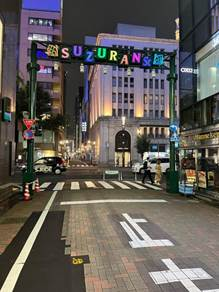
Found this befitting of pride day. Also saw how females mostly default to 空气刘海 for their bangs, but of course there’s the more whacky styles and anime type cosplay, some of which were quite stunning. Japan rail is giving Seoul Korea energy with all the switching between mandarin Japanese and Korean for announcements and train arrival display panels. Another unrelated point I remarked at Ikenoue 池ノ上 station is how they’re now using LINE to help commuters recover their lost belonging on the train, and there’s a lot of 人性化 (carefully thought out?) signs and reminders, and unique inventions that cater to the tendency of the Japanese to conform and not stick out, eat individually sometimes and not interact with the unknown as much as possible. Finally I head from G02 to G01 Shibuya at 8:36pm. Hunting for dinner round 2. when I was loitering about the exit from Shibuya station, the moment I heard 阿修羅ちゃん ashura-chan by Ado, one of my favorite singers, I got goosebumps; a gang of male and female Japanese teenagers started singing along as they passed; and it just melted perfectly together, the blood rush-inducing rock song from a singer I’ve listened to for years, and the neon lights and blaring street signs and anime characters across the walls and the impeccable fashion. They all merged together and created a little Japan wooing that I’d always imagined, whenever I hear or see Japanese stuff.
8:50pm I got goosebumps when I saw the Shibuya crossing for the first time. And then the LEGENDARY BENTOS in 7 Eleven, my mind was blown and my worldview was reshaped. This microwaveable food will be my breakfast every morning! Check this out:
I blew 1408 yen on a Thai fried rice because I wasn’t smart. Left at 9:32pm and had a short conversation with the cashier. Also the couples tietie on the train haha. My oyako 丼 do be melting.
Had a call with Yiyi, she hasn’t been sleeping well I just wanna be there for her so so so so badly. But amanda wee shared a few Chinese sentences about 忍耐 and how it’s part and parcel of love; and I felt like yes our love is still growing as we’re apart and we’ll treasure the time we’re within reach of each other. Also my girlfriend has been so beautiful (I mean winner in life with the good facial features and everything) and achieving all her goals yay!!
12-June-2023 Monday ☔️
Woke at about 7am to my insanely loud iPhone alarm, my eyes couldn’t open and was cold. Top priority was heating the food: 3.5 minutes of microwave and micro-sleeping in my blanket because I was so cold. I left the window open overnight and it was like 20°C which was something I hadn’t experienced in weeks. Didn’t want to exit the blanket but I had like 6 alarms across 2 phones. Grabbed the keys, exited the door, decided to clear the tray of 親子丼oyako don that’s sitting in the microwave so there’s no pests; re-entered, made sure everything is turned off, left. It’s the morning noises: schoolkids discombobulating along wet paths and exclaiming something, the pleasant good mornings and thank yous from the masked aged staff who are directing traffic near school zones, the dissonant warning notes of the incoming train at Ikenoue..
I cut off there when I reached Shibuya at 7:50am which was pretty fast. And my god was the schooling/commuting crowd at Shibuya intense — like a zombie horde grazing through a city, the metal stairs up from Scramble Square Shibuya was like a soldier conveyor belt as we trudged on up. I took plenty of photos and videos of the walking process.
Here’s my little experience squeezing commuter train in the morning, accompanied by the Spotify playlists that I glanced at of my fellow commuters.
The worst stampede was during the stop G03 外苑前 when there was barely any standing space for anyone. My shoe got stepped on a bit and I don’t even know who. A[2] [3] fter departing, I have the good sense to put my back on the luggage holding area above the seats which I felt was a luxury because previously it was on the ground. I was so hot I took off my mask and it fluttered onto the floor during the shoving, which I picked up and my glasses bumped against a seated fat man’s phone, I did the “sumimasen[4] !” like any Japanese commuter would when they pull their body weight to squeeze in/out of the cramped a** carriage. この先、揺れますので、ご注意下さい！
Short lady on the right in a white business jacket shoving me to the left to get a hand grip. 🎶 Twice: Heat Wave. So apt.
Middle aged stubble man with glasses on my left. 🎶 Yuri: Dry Flower. Top in Japan charts haha.
By this time, 8:20am, I am all sweaty and ready to remove my handsome G2000 black jacket with the train map sewn on [5] it that my girlfriend had picked for me. No clue what this man is reading with the “Innovation of Life”.
8:23am. Reaching Ginza. I’ll be about 20
minutes early wow. I walked out, took a few photos leisurely and replied to Instagram
followers who reacted to me being in Japan[6] , and walked to the street just down from
P&E and stopped at a shelter. 8:35am very early. It’s so hot had to take
off my jacket — woke up being cold and after the huge crowds and commuting,
sweating through my white shirt.
Reached early yay. 8:35am.
It’s getting real bro omg so intense. Okay I’ll update this later I’m at my seat 11:12am. Gotta just remember my PIN is 35730070
So morning was a hour long briefing timed perfectly by 森本 and he got me to understand what’s the difference between a researcher and a consultant. After walking back from the meeting room (and constantly thinking about as per Japanese courtesy, should I have opened the door for senpai? Should I have let him walk ahead first instead of walking faster? Should I have used a more keigo 敬語 way of asking for a repeat of the machine-gun-Japanese that he had just said? Etc), I sat for an hour working on the report for successful/unsuccessful Japan companies overseas before 今西 came by, hovered around that we should lunch and then said to me directly. He asked some other dude to join but the dude too busy. I (I.) Senpai super nice he treated me to lunch and we had a decent conversation. He’s a basketballer, programmer, business consultant, father of 3. Also look at the start, he’s the most handsome one. They’re all shorter than me[7] though haha these bunch of guys might have studied too hard when they were young. We went to 黒豚 kurobuta just 3 minutes walk away in Ginza, where they had a metal pot for soba which I ingeniously used for my salad leaves too because raw vegetables are sus. Also sir was not ZIPPING UP HIS FLY in the morning but it’s ok he figured it out.
Post lunch, toilet break [8] [9] and voice message Yiyi who hasn’t slept well. I slept soundly though and I hope she’ll get the sleep she needs and deserves.
this was funny to me because they want to police people who spilled water. It’s the pee pee police! Also the reason why the building is so insanely clean.
they were pretty cool about using it but NOT as a source merely as a tool to narrow down the scope.
First day of work, I got more assignments that I expected and I was surprised at the level of trust they have for a little foreign dude who just came in LOL. I found at the end of work that I’m not the youngest, there’s a 2001 dude and also the 1999 dude Ekawa江川 is a socialite and a gym bro and pretty intense with his work. We had good chats! He said he 加班 an average of 1.5 hours every day which is crazy to me because he’s just a junior consultant who started working for 2 months. I told him this is indeed what I expected of Japanese work culture. Also my Japanese got so good at the end of the day compared to the start it’s crazy. The other 2001 dude is Watanabe, he studied Literature in Keio 慶應大学 which is where Ayumi enrolled in for a while to do Political Science and he’s a new intern just like me. He’s the first person to accompany me to the train station and we were together for a grand total of one train stop. His commuting time is like double of mine haha.
Kibe is some big director dude while I. and 森本 are both seniors. I’m surprised at the amount of time allocated to teach me stuff until I understood, such as the client of a client (i freek mobile and Japan M&A Center) and the whole thought process of consultants like the hypothesis testing lol. Have a lot to say but am changin at Shibuya so bye. 我决定不在涉谷吃因为人挤人 回到池ノ上吃。All I could bear to spend at Shibuya is the time to pee and get a bento and the 600Yen for it. Bye Shibuya for the day even though you’re really beautiful and full of delicious stuff. I almost missed the stop at 7:18pm because I was typing this haha. Also almost took the train that skips my home station, luckily I realised before the doors closed if not I’ll be at some random place where I might’ve chosen it to have dinner who knows. It’s good I won’t have to top up my card for the next month at least because I blew like singapore $120 on the regular month pass between Ikenoue and Ginza銀座.
It shall be Chinese cuisine for the night yay. And get home early asap. When I entered the 中華chū-ka料理 ryōri shop for the first time, I was hoping the owners are Chinese and asked in Japanese if the lady knew Chinese but she said no haha. Apparently there’s a big wave of chūka frenzy in Japan so I guess that’s why the couple decided to imitate Chinese food lmao. I’m waiting for it still at 7:30pm but no hurries; I just feel bad seeing the number of hunchbacked old ladies who’ll keep working for many more years because they have to and Tokyo is expensive; please don’t give the argument they enjoy their work, though maybe they get used to it and the habit of just toiling day and night sticks. There’s a 80+ year old lady and a 60+ year old lady serving and the old uncle is doing stir fry. And a nice TV that’s playing a typical Japanese show with a boisterous background voice entitled 冒険少年bōken shoūnen which features a bunch of young people in the wild and a tiny panel for the reactions of people watching in the studio. Some kind of wilderness survival show I guess. I just think about the amount of effort to make all the glittery fonts and the animations! And the awareness that the sheer number of people working hard is something hard to comprehend. Felt the stark contrast to a society like Australia where it’s all about rest and outdoors. Anyway, I see my meal being prepared in front of me and am excited to try. Here’s it:
After this meal, I felt pretty emotional and was almost gonna burst out saying that I’m from China and this Chinese stir fry hit my soft spot. But no I just fumbled for my wallet and handed ¥1150 to the lady (getting ¥10 * 2 change) while mumbling that I’m a foreigner and can’t really find the right coins (Bruh the 50¥ coin has a hole in it, it’s giving Qing dynasty ancient coin)[12] . I was just surprised by how the lady always maintains the same tone and never sounds tired saying arigato gozaimasu to every customer, and for some customers she even stepped all the way to the door to bow and say thanks again. I will visit this store again also because I get free chilli oil, ふりかけfurikake/Benito to accompany the last mouthfuls of white rice because I ate so much beansprouts at one go, and the amazing chilli flakes that I poured on my dish to make the meat spicy. Was happy to leave bustling Shibuya!
The most insane thing is that I walked home from the restaurant without a map or opening my phone. I simply identified every red light projection on the ground (a apt warning at cars to stop), every quaint picturesque soba shop and every parking lot that I’d seen on the first day in Tokyo. This is serious character development because I’d always needed maps; I thought I’d gotten lost when I walked to 一丁目11 i-chōme rather than 14, but I retraced back to the same red light spot and walked to the area where Dominic told 俊鑫 to reverse his Porsche and walked to my 代々木上原Hills confidently without stopping. I guess this will be my nightly routine and post dinner walk! Just a bit concerned about my white shirt which I have not stained — yet. And I hope I get treated to lunch every day[13] [14] since I’m doing some high-paid consultant’s work haha, Yiyi reminded me of Harvard money so thanks Daddy Harv.
Think I’m gonna sit and read Norwegian Wood by Murakami, a romantic weird (as usual村上) novel that I’d read in secondary school but now forgot (there are s*x s[15] cenes where Naoko直子 was teary or something like that. Boiling some water at 8:20pm. Anyway talked to me mum who was fine and quarantined in hotel with Raymon, about how insanely clean Tokyo is I could lie on the floor and get up feeling clean (I never saw litter, even in the rain there’s no sense of dirtiness, like a fair jade that’s awash in spring water, without a speck of dust, no kidding; and the shopping malls with the flushing and the signs that tell you how the running water keeps pipes unclogged and keeps smells away; food is actually cheap and healthy and so much variety, partly thanks to culture and to the old staff toiling away at 80 years old sadness, it just suits me so much). Also walked home to station a few times today; imagine you see this!
I also went to buy toilet paper and body wash, came home, realised my umbrella is still there, half jogged there and walked back doing a timelapse. Getting dizzy at 11:30pm oopsies.
Total amount spent: refer to youtrip
13-June-2023 Tuesday ☁️
Hi can u see my comments here or can u not; also i fixed some typos cuz i hv强迫症
yez I can see! Thanks 🙏 💕
Woke to my buzzing phone at 7:12am with a dry scratchy feeling in my throat that could only mean that my body has not had time to fight off the virus. I was also tired and toyed with the idea of taking a covid test for a hot second, then decided against it because I’m cosplaying a Japanese salaryman サラリーマン and we don’t ever take leave! That’s the fighting spirit haha. I’m curious and slightly apprehensive about whether my colleagues get the same symptoms as me but given how hard they work they’ll probably just soldier through it — I see bloodshot eyes and pimpled skin of my senior consultants, they probably overwork. But I miss my nap time and may nap in noon since they provide rear facing red sofas in the office lol. There was an interesting phenomenon last night where I lay for maybe 20 minutes feeling miserable and worried about my loved ones and then I suddenly slipped into a cartoon dream because my mind was too tired thinking (insane again thanks Japan and P&E).
The morning noises at 7.45am: old masked volunteers in bright orange safety jackets ushering the kids in the school zone and greeting. Every. Passing. Person. With ohayōgozaimasu. That’s incredible and I just thought how many hundred times they have to repeat. Today is a cooling 21°C and finally I don’t have rain all around me after 2 days of 梅雨tsuyu season; I also managed to get the last seat in the carriage on Ginza line. It’s insane how easy I found it to fit in, as a East Asian male commuter who’s new to this whole thing. The train was surprisingly empty at Shibuya but I know it’s gonna be packed very soon. Also I subconsciously compare the color of my attire with other commuters and I am indeed missing my black pants but no worries; 今西said that my attire was fine even with my khaki pants, when I asked him in the toilet. Also today I’ll take the photo of the insane view of Louis Vuitton from 交詢ビルkōjun biru where I work.
I was so cold in the morning even after my full business suit attire. But every time after I board the train my body heats up so I don’t worry too much. Also an ad I see on my first train:
The stop before 外苑前gaienmae packed everyone into a shoulder-to-shoulder formation, as so:
I’m just gonna close my eyes till we reach Ginza because I won’t get rest time. Hit a little too close to the Japanese impression of the workplace that I got, though it’s worth it for all the nice amenities and good colleagues. I just don’t like how much 腹黒(I mean more like just the 本音 建前 pretense and real thought) that one must have, but I think Ekawa江川 doesn’t give that energy. Gonna close eyes.
I arrived at Ginza at 8:29am and took my own sweet time walking to P&E and still was 20 minutes early in the bathroom oh my. Gonna stick around taking photos and things. Yiyi finally did not have insomnia!
It’s crazy because the minute I walk into the office, one of the directors Shimizu is working at his usual spot and my other mentor M村上 immediately comes up to me with his slightly bloodshot eyes and starts helping me load the calendar and prepare the excel workshop for today so that I have even more skills to contribute to the company. And of course big project that Morimoto森本is working on and he’s there with his colleague Azai at the same spots. It’s so insane how infectious this Japan consulting work spirit is and why P&E is so famous in Japan; I’m gonna charge my phone and focus for a bit.
 Lunch with Mr
about-to-marry-his-girlfriend M 村上 who has travelled to Singapore in
January! He’s quite stocky and haha he is
completely different from profile photo in Microsoft teams. We talked about his
university life studying legal studies which is basically a pre-law
undergraduate degree and how he thinks the difference between the lives of
lawyers and business consultants in Japan are: he says it’s super hard to be a
lawyer in Japan and in the selective pool of lawyer wannabes, there’s only like
a 20% pass rate for the bar exam. Wow!
Lunch with Mr
about-to-marry-his-girlfriend M 村上 who has travelled to Singapore in
January! He’s quite stocky and haha he is
completely different from profile photo in Microsoft teams. We talked about his
university life studying legal studies which is basically a pre-law
undergraduate degree and how he thinks the difference between the lives of
lawyers and business consultants in Japan are: he says it’s super hard to be a
lawyer in Japan and in the selective pool of lawyer wannabes, there’s only like
a 20% pass rate for the bar exam. Wow!
Also had this nice yuzu chicken broth with mushroom in the yakitori set, which I was supposed to pour into the rice but I chose not to. We talked about different types of food in Singapore and he showed me some of the photos that he had taken.
I am so tired I’m imagining sleeping in the afternoon, coughed a few times and feel an ache in my bones. My body feels that dull dread and deep within my brain too because it’s just the second day of work, also thanks covid[16] . Update 1:15pm I tested negative with my saliva, interesting. Also late for PowerPoint lesson with M but it’s okay. It was super basic like just make sure it’s pretty, units are given for graphs, sources are cited. For an example of using data on an Excel sheet to make into a think cell in Powerpoint, and computing the arrow for the CAGR (Compounded Annual Growth Rate), he put in his weight for the past 4 years which went from like 60 to 64 to 72 to 74kg which is quite insane Also because on a previous project he worked extremely hard and had to come back to work even every weekend, he was awarded with one week of leave which I am sure he is going to enjoy with his girlfriend! Also at 1:20pm I told me to meet, and he asked if 6pm is okay, and of course I said daijōbu.

Was hiding at the vending machine to text lmao. I felt a little overwhelmed and had ceserious doubts about whether I can finish the 2 months of actual work[17] (compared to 24 months of not much work in the police).
But when I sat down to make a nice excel sheet at 2.50pm after my pretty long toilet break, I suddenly remembered some conditional formatting that I did before and decided to try it again yay. scour the data and make columns for each specific category!!
4:54pm — I’m past my valley. I asked Kenji Kibe BIG DIRECTOR DUDE for help (he’s working on the same project as 森本mori Moto) which maybe I shouldn’t have done, then he brought in morimoto because he’s a massive man in terms of power and I realised I could have just downloaded the stuff via excel instead of PowerPoint lmao. Yay.
Wow I hit another valley from the high of starting to use Excel, when I met I to talk about our report (I was a little surprised when he said meet at 6pm but then I have no excuse haha). He ended with presenting me my value-creating area which is on the サイモン法則 to determine whether a Japanese company will fail overseas (Singapore China USA) or not. I think I just wanted to go home at 6 haha because I haven’t focused this long even during the semester. Because the whole environment is made up of professionals, I realised that they’re much more capable of hiding their feelings. And no one would have time to guide me through etiquette because it’s a given — there’s only protected time for guiding me through Excel and PowerPoint. Also might be difficult to find data online for many companies like those who entered Singapore but had to leave.
I think there’s at least one point that I was not good on and annoyed the senpais , which is adhering to the specific meeting time. I did not prepare my items properly and fumbled to get my stuff to leave. These people are on the clock: they go from 12 noon to 1pm lunch and then right on time continue. Or rather, because I’m managed by the Managers, their management of time is immaculate/impeccable. (There’s a hierarchy of intern, new dude, junior consultant, senior, manager, director and so on, so they’ve climbed up a few rungs.)
I need to be more mindful of time. Keeping my phones and wallets in time to head out at 12pm for lunch haha. And also during lunch at about 12.48pm, M村上 during lunch was like he’ll treat me but he can’t do it all the time. Also I realise as a Japanese consulting dude you need to keep your emotions at a minimum, and keep a clear line between what’s intimate to your heart and what’s work related. I mean that applies to any country but the Japanese would be even better at doing it and always say the correct thing with the correct tone.
Called Yiyi and talked to Shawn Mobley at Shibuya, while slowly walking to take from Shibuya back to 池ノ上ikenoue to have dinner. Reached at 7:52pm haha. At least I avoided peak hour crowd. I was a bit sad that Yiyi expressed some doubt 是吗 when I said 爱你 but I think like it’s common reaction lmao. I mean after more than 12 hours of being out and about or doing some kind of screen work (between 8:45-12 and 1-7pm), it’s really hard to adjust to the sudden shock and I guess being solo in this city hits a bit harder at these times. [18] Nevertheless I stay fine and I see it as a bit of a challenge, though I will work less hard to avoid being exploited as a young corporate slave haha. I don’t have to meet the exceedingly high standards of seasoned Japanese consultants, just keep myself energetic by taking more breaks [19] [20] perhaps. Don’t push limits! Ginza was prettier than the morning and any previous day.
Now walking down the road for dinner. I think today is just a lesson in finding balance and not trying to be professional, and keep punctual and polite. I previously operated under the impression if I don’t keep working I’ll be ostracised or removed but I don’t think I’m anywhere close to that. So. I ended at about 8pm and I walked around..
Was gonna eat at the Indian cuisine since both the 三由 soba蕎麦 was closed and the Chinese cuisine was also closed.. Tuesday.. then passed by wacca curry which claims to have Sri Lankan stuff so I ordered that but 大盛りōmori so I don’t get hungry. I asked for hot water; there was none (unless she boils but she asked if room temperature is okay so whatever). The store takes last order at 8:30pm every day except 日月曜 when it’s closed. Just waiting while the owner cooks — she seemed to have a lisp and also the shop is empty so it’s preferable for me, because Shibuya was just something different/today I didn’t take a video or photo of the crossing but would love to. Apparently the Sri Lankan dish has mustard seed, white pepper, coconut milk and other stuff I can’t comprehend. I was actually hungry since 5pm where my stomach rumbling probably I heard. I stopped at 8:17pm when the food came
I ate 2 little meals one before getting home and one after getting home cuz I was really hungry after starving and also feeling sick — but not sick enough to take leave from work since it’s throat infection stuff. The fish set was ¥1200 and tasted mediocre since it’s a Japanese lady trying to make south Asian food, and I asked for more rice which translated to a ¥100 upgrade in her terms, but there wasn’t a lot I was about 50% full, so unpacked my breakfast bento to take out parts of it to eat, then had a mandarin🍱 . Got tired so might sleep before 10pm.[21] I really felt like I could sleep for 12 hours haha. I was so drained out of my mind.
I don’t know how much better I’d fare if my throat isn’t feeling itchy and my arm joints or legs don’t ache.[22]
14-June-2023 Wednesday ☀️
Test
Woke at 7:12am thanks to my buzzing Android. Definitely felt better than yesterday because I went to bed earlier. I rolled around in bed for a little bit because obviously I wanna sleep more and closed my eyes visualising the day ahead where I would meet Morimoto森本 to go over his project research. Walked out at about 7:48am and saw the trash stuff people leave outside the door and a yellow-hat kindergartener with her mother. The Japanese kids all wore those ducky bright hats.
8:08am ah the metal stairs that everyone climbs quietly while emitting male business suit smells. (I was just thinking last night about how Japanese would never complain 弱音を吐かない i.e. display any weakness — certainly not for the consultants who never show fatigue nor excitement, apathy or passion, never laugh nor frown. Like AI robots.[23] )
Left Shibuya at 8:12am. 8:13am omotesandō表参道 was pretty packed. 8:20 赤坂見附akasakemitsuke there were 2 seats that cleared up so I sat; I was wondering if there could be remote work on Friday so I can leave Tokyo on Thursday night and stay in some random hotel in another city, then come back on Sunday. Idea! Because I don’t think I’ll negotiate for a 4-day work week since I’m sticking to 5 days. The sound of the train door people blaring through their loudspeaker to note that doors are closing.
I know I’m not exactly working for free: I’m earning my stipend back, but the fact that the money was billed to my account a while ago before work started makes it easy to detach the work now from what I received.[24] [25]
When I greeted the 3 consultants who arrived earlier than 8:40am as I entered the office I received the usual shortened Good Morning response. One guy was my desk mate Azai or something, the other one is diagonally right from me and had a super intelligent glow in his eyes; these are mostly STEM majors in renowned universities. Ohno (大野) san was the only person I greeted eye to eye: she’s the administrator and seems like a motherly figure.
*Fujia adds: Simon finally downloads wechat on his computer yayyyyy
*He admits that he misses me a lot and that missing me makes his eyes go watery; i admit the same thing
*I feel like (this is still Fujia speaking) he is being worked pretty hard and very tired after work
At about 10:46am Aiko Ohno san came to my table and said something about meeting with CEO and of course I was taken aback. Next time I need to move faster and just pack all my stuff and be ready to go at an instan[26] [27] t, kinda like a soldier in a war. Also I believe it’s a common tactic or trope to squeeze in a tiny sliver of time to meet a low level employee, then declare that you can’t meet them because you’re too busy and have to respond to clients haha. Oh well I was like sure I didn’t wanna see you anyway I just wanna be at my table chilling a bit.
Now at 11.33am I have just been recording little snippets of stuff about Japanese companies that failed overseas. Also I think I pissed off the female consultant because while I was holding my computer and rushing to meet shachou aka CEO I knocked against her chair and immediately I followed up with sumimasen. Oh yeah, this is the first time I am typing on the computer because I considered taking notes: that meeting room C has no whiteboard, meeting room E has, meeting rooms G and H are smaller so preferred not to use them, that sort of thing. I swear to God every time I walk by anyone, NO ONE is looking at phones or anything other than Microsoft suite (Outlook, Excel, PowerPoint) and it is truly scary the number of words and data they can squeeze onto an Excel sheet like hello kids please protect your eyes. There’s a young intern on my right and she’s doing slides and Excel like super legit vibes but her makeup also cannot conceal her overworked fatigue with eyebags and yellowed skinny hands, I feel like Japanese just carry with them a sense of apology and a need to add value no matter how hard they work. Anyway before I left for lunch, Shimada CEO whose name I had read about a lot inside all the P&E reports that they sent me (which I eventually did not finish summarising, too busy enjoying my holiday), greeted me and apologised that he’s not able to meet me. Trope part 2: give the other person a sense of satisfaction and make them lose their guard (being apologised to by the amazing CEO of P&E who created this team of geniuses). He said in English that he had lived in Boston and asked me where I will be living, upon which he expressed slight surprise when I said that I will be living in the Harvard dormitory for all 4 years.
Walked to the nearby 7 Eleven in Ginza for the first time, and by golly, since I have been researching about these successful Japanese companies, is it the best 7 Eleven I have ever visited, with a sitting area and a microwave, and the cashier who was nice enough to guide me to the microwave and instruct me on how to use it.
Came back from lunch at my work desk at 1:04pm. Before that, I was in the toilet and had a peeing conversation. This Suzuki鈴木 san whose hair looks slightly curly and greasy greeted me while I was peeing in front of my urinal [28] and asked me where I had lunch. My initial reaction is usually slow and I had to get him to repeat which he did, in English. We proceeded to have a fluent conversation in Japanese and I said (with inner resent) I don’t get paid so I chose to go to a convenience store or konbini in Japanese. He laughed when he heard I lunched there. Oh I forgot to ask where he lunched but I’ll ask him tomorrow. I confirmed with him that his name is like the Japanese car brand upon which he gave a light-hearted confirmation. I asked him where he was sitting in the office. I’m kinda lazy to follow up but also seems like manners to follow up since I’m the lowest life form and am subjugated to all these big geniuses doing PowerPoint and Excel magic HAHAHA. Anyway I also had a good 22 minute conversation with Yiyi: the first time we could talk during work hours thanks to all my senpais being busy during lunchtime, thank God[29] .
This was ¥518 with tax, itadakimasu. The cashier was from Yangon, Myanmar and he came here 2 years ago; pretty good Japanese, as usual his surname is Aung and I chatted a tiny bit with him, his surname was Aung just like most of the Japanese.
And then I feel Mr I slowing exerting his power on me hahaha such as by not wiping the whiteboard with me which he did on the first 2 days, and purposely walking in front of me to the other dude Fujimi to talk till 2:12pm even though we agreed to meet at 2pm this morning (obviously, this is because I made him wait a few times to properly pack my stuff, as all these people are normally very on time and will be waiting for you to depart for lunch or the meeting like 2 or 3 minutes before; or I am just overthinking and he is prioritising the stuff that actually brings him lots of money in the long run). But I still like I. He laughed for the first time when I told him I’m not in my most daijoubu state and might have a virus, like actually a loud laugh in the elevator. And we were pretty chill and smiley when we walked to the pharmacy which was just downstairs ooops I stopped here at 3:32pm because after getting the medicine I was just talking for like 1 hour in japanese about my research on NFT, crypto, illustrated books, edtech, stamp maker, crypto+chat messenger industries in japan and globally and the outlook for the app service one Japan company was trying to make. Okay before I started the presentation, I asked about the policy for remote work and was pushing the limit (“sir what if I remote work all 5 days next week”) but he settled upon a 1:1 ratio where in 10 working days, I can work from home for 5 days. Truly amazing and I only realised after like 1 hour that this means I can video call and play games and watch shows with my one and only Yiyi online! Via tencent call or something.
Me at 4.38pm: you see in japan they don't show impressed or good they would just deal with the content, see what's missing, and keep working. They’ll say thanks, 辛苦了=お疲れ様です but not much more than that with regards to work - there’s always patches to fill and no one will ever approach 100% or perfection. Also this man Morimoto lazy lah (not really) but he hinted I should ask the RBF Korea woman (who was pissed I knocked her chair accidentally) how she splits the screen into two and does Korean + Japanese instant translation, or Japanese + Chinese and so on. I first saw her this morning and her RBF is strong - she doesn’t return the morning greetings of other consultants haha let me find out her name. Her name is Cheh or something like that and I don’t want to disturb her. Also she has no Korean accent at all when she spoke Japanese.
Okay so funny thing I thought the smoking room was just for sitting down and went to 3 different floors realised people occupying it so I went to 6 floor and a random cubicle and started eating my delicious stir fried veggies and meat. Before that, I asked Aiko Ohno san for help regarding the microwave to heat food (I forgot that it is called 電子レンジ) and she decided to give me a free mug with P&E directions on it yayyy now I can brush my teeth with that mug ☕️ Ohno-san is really like a motherly figure uwu.
By 5pm I finished part 2 of lunch yay it tastes better than my previous lunch set! It was also cheaper and I guess because it was stir fried there might have been of wok hey kind of fragrance.
From the remote work arrangement of 1:1, I am birthing my grand travel plans. I can technically work in person on Monday and Tuesday, book a train for Tuesday night and be in Kobe by then, and then reach Kobe and start remote work on Wednesday. So I can stay in Kobe神戸 for like 5 days before returning on Sunday night, all freshly recharged! I was gonna text my parents about this grand plan but decided against it.
I eventually sent an audio to share my plan. Took from Ginza to Shibuya and waited a bit for Ayumi because she was shopping for parting gifts for her colleagues at the national parliament at Hikarie, another shopping mall nearby and I hadn’t responded to her text at 6:37pm and we met a little after the agreed time of 6:40pm.
We first went to the only noteworthy artistic monument of Shibuya, the Hachiko which is a famously loyal dog. There was a line of like 10 people so she helped take a photo of me from a distance rather than right beside the dog. Then we went to the original sushi place in Seibu that we wanted but there were like 20 people in line so it was a automatic NO and my eyes kept drifting to the Chinese restaurants HAHA thanks to my strong attachment to my cultural roots and she’s like yes you should get something Japanese. In that time we continued looking at random stuff like some handkerchiefs with initials for her colleagues. They’re not cheap but oh well useful and small
Update I did not buy because that’s too expensive and I misconverted the currency. Also quote me: “(the Shibuya scramble) it’s giving Times Square, but clean.”
I also had to get green and purple seeded plums for Enoch Li who texted me on Instagram about it heh. ¥341 total so it was cheap.
Ayumi treated me to sushi!!! I was like split the bill in Japanese and she’s like solemnly no this shall be my treat. Ayumi gave me a corn from 茨城ibaraki which is like the funniest thing ever so I took a photo of her with the corn.
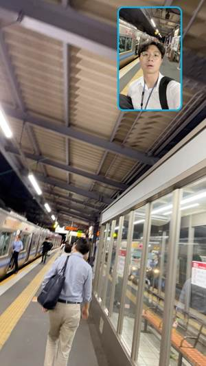
Home at 9:14pm! As Kiko my landlord said, this is really a quaint pretty quiet neighbourhood with a stark contrast to all the hustle and bustle of Shibuya. So I love the night walk home and I can’t wait to shower after hustling around Shibuya .
15-June-2023 Thursday ☔️
Hello
woke up early cuz of knocking noises at my door, but I soon got back to sleep right before 8:00 a.m. and I completed a cycle until it was like 10:19 am.
At 10:50 a.m. kikosan and Dominic came by and knocked on the door upon which I let them in and we chatted a little bit about life in Japan and her upcoming Stanford summer school. She was the kind of girl that is rather bubbly and chatty and seems to be very sociable and the kind of humanity's focused person who probably enjoys Dominic's emotional support. And I realised that Dominic was wearing a Dri-Fit t-shirt that has frog on it and I confirmed that he was part of the elite naval diving unit [30] of Singapore which is something extremely prestigious and almost life-threateningly difficult. Respect to the man. I also decided to start boiling the corn that ayumi had given me last night and I told them it was the corn from ibaraki and it started boiling and it smelled very nice. Kiko remarked that in the 2 times she came back to get her belongings like a phone and a bag. Also she commented on how nice the neighbourhood is and asked why I didn’t turn on the aircon even though the day is hot upon which I explained that the appliance was on for the whole night. I also updated her that I ate one of his snacks chocolate thingies which I didn't enjoy but I was actually hungry enough to eat chocolate so she was like oh that's really tasty and it's okay with me just eating a snack and there's a lot of chocolate related snacks.. actually hungry.[31] This is interesting brand called country ma'am chocolate chip cookies.
They started rummaging through their stuff and Dominic helped me zip up one section of the mattress with the other two sections. Dominic also had to find his passport which he did and they removed a few bags and the big luggage from one of the upper sections which helped me to free up space that I can live my luggage in. I felt a little bad that yiyi was waiting for me to reply her message because I was asleep and then from 10:30 on which I didn't know what she was doing. Updates: she actually fell asleep from 10:30 onwards and I think this is the best sleep she has had in a while and I'm glad that we have less things to worry about then before so that's a big w for us.[32]
Since the soba shop I saw in the first day opens at 11:00 I'm going to visit and have a little bit of soba.
Actually udon this time!
It’s hot and I am waiting for it to cool down.
I decided to get duck since I haven’t had it in Tokyo! Same soba restaurant as the first day 三由.
This was fine but soup was salty. Also feeling a bit apprehensive about work but my senpais haven’t sent me anything so it’s all good.

Beautiful drain cover! This was down the main path that leads to the elementary school with the basketball court.
Second floor, right down from the stairs.
I don't know if I slept too much or what but I feel a tiny bit dizzy and I my stomach feels weird because I'm ingesting food at a different time from all the previous days because I didn't have breakfast and I went straight to lunch at 11:30 a.m. anyway I finally texted Imani today at 12:20 p.m. and I asked him about the issue of having to pay for specific data about Singaporean businesses because if we want to measure the success of a Japanese business in Singapore then obviously they're not going to give you the data for free right and then I share of him like a sample business profile of what you can get if you pay like 5.5 Singapore dollars and he hasn't opened my message yet but it's all right because he's a busy man. I'm thinking if I should go out to different places while bring my computer and my phone to hotspot my computer have already used like 1.4 gigabytes of my 10 GB plan so I have to be a little more conservative in my data usage than I am now because I have like a bit more than 7 weeks here. Also today I have to launch the discord announcement of what I'm going to do on Union bridge and then I'm also going to do a little bit of hsylc.
Oh yes at 12:54pm I hear the doorbell. This is always rare because I never hear neighbours and I never had anyone visit me these few days nor knock on my door until this morning (might be a neighbour’s thumping noises who knows). It was a delivery man in a blue cap who passed me a box of rice that Dominic Doel Sob Jun Wei (Kiko’s boyfriend) had ordered. First Japan delivery 🇯🇵
It has been so long I gave Yiyi enough time to talk and I’m glad remote work has given me the chance to do so. Very very thankful. We first covered heavier topics of job and future plans and my own family things, and how it led from the conversation with Jin, her alumni interviewer. I found it cool that he asks for proof during the interview of the activities especially when college applicants are heavily plagued by agencies and also a lack of integrity. Shame. We then shifted to more light hearted topics like my initial physical reactions to cuddling and so on.
At close to 4pm I realise I have a meeting. Before that I had a bit of stomachache and diarrhoea and carelessly put my keys and wallet at the sink area and forgot I did that. Usually such digestive woes arise when I eat at a different time compared to the habit I’ve built in the previous few days — today waking up at 10:19am meant I skipped breakfast and went straight to lunch.
I rushed to 池ノ上 in the annoying rain after re-entering the house a couple of times.

 i saw some of the books my man wrote..
i saw some of the books my man wrote..
Bad photo because he has nice eyes: Shimada 島田社長 偉い人ですね
He’s such a big man!
So I waited more than 20 minutes for him to be done with the phone conversation with his client. My man is managing 7 or 8 different clients at the same time (context: our junior consultants do 1, our managers do like 2 client cases and obviously they’re tanking a lot but it’s a shit ton), working with 20 different companies and also serving as board member of his alma mater (hitotsubashi 一橋大学) where he attends meetings fortnightly. Man is an obvious extrovert with so much intelligence and success/ambition in his eyes LOL. And he’s on the ground: I told him it’s 光栄の至り to meet him and thanked him using all the fancy flowery Japanese for his valuable time (he said he has business dinner every night). He showed me his visit to Singapore and the profiles of the people he drank a lot of wine with — Prof Yeoh Khay Guan. CEO is likely to be a 100% Extrovert given how many people he has to juggle at the same time. I realise that people in the upper echelons of consultant are being paid for the amount of socialising they have to do, compared to a junior who deals mostly with the computer and his direct supervisor. The more people you manage, the less you look at screens (大野Ohno san is the secretary and she’ll help you look at screens), and the more you talk to people. And your pay grade would be great! So life gets better as you climb up.
Of course as a Big Busy Man he has to leave at 5:50pm but he did give me at least 30 minutes of his time and his attention while I speak we had good eye contact 👁️ 👁️ He then praised on my good use of Keigo敬語 such as お忙しいところ恐縮ながら like I’m extremely apologetic in view of your busy schedule kind of vibes .. and I explained I only learnt it recently. Obviously he didn’t ask me about my work here which is g[33] ood I don’t need him to know I’m working remote today and rushed back here in the rain! And he wouldn’t need to know either.
Also he asked about my life where I’ve been, my parents’ jobs 機内食 basically aviation industry (obviously if I’m from a elite background he might get more connections), any siblings I have, what school I went to, where I stayed in Singapore. His younger son is 18 and went to BU before transferring to UChicago. Previously boarding school in Newton. Older one was Public Health at UC Berkeley and also boarding school in Lawrenceville, New Jersey. Evidently CEO is a fan of the American education system which I confirmed. He switched to English a few times but I stuck to replying him in Japanese, with a mix of a few words in English which he was nice to translate for me. Such as 営業 or something, as well as the word 雑用 when I was trying to describe my mother’s current job.
如水会館 he said the alumni board meeting is held there so okayyy I think. Or it was the location for something else.
I was hungry and my stomach is rumbling so I’m going to take the train back to Shibuya or somewhere along the line. I wouldn’t pay extra to go to Asakusa which is in the other direction and not included in my $125 monthly concession pass. So there’s like 7 stops where I can go to.
Apart from the usual shuffling along the floor and the being shoved by fellow commuters as they flood in through the doors, I noticed a cool tactile phone cover that has a few random mahjong tiles on it — I love that i lowkey wanted to ask the commuter where they purchased it but decided otherwise.
I left the train early at 赤坂見附Akasakumitsuke because I’m done with the crowd and also it’s time to explore a new station!!! Yay. I saw a cafe nearby that’s on the second floor.
Saw a bug crawling on the floor but generally it’s clean and cool. This is a restaurant with plenty of solo cubicles for eating alone! What’s cooler is you don’t have to talk to anyone! The iPad for ordering and the automatic tray carrier will walk to you and say in a female voice that your meal is here while it plays music. This reminded me of the funny moment 2022年9月29日 me, Eugene and Ayumi (Kai was half an hour late because he was talking to a professor) went to eat Kura Sushi at Watertown (right across from Joyful Garden!) and the little machine came to us with the sushi. It met another little machine and they were awkwardly trying to get past each other but twisting on the same spot
Okay. I walked around the store called “bic camera” and they have a brainwashing song that plays every few minutes that goes “ビーク ビクビクビクカメラ” and it kind of becomes a earworm that’s stuck in your head.
At 7:52pm I finally board the train back to Shibuya渋谷 via Ginza銀座 line! Before that, I made a few satisfactory purchases at a cheap place that’s right at Akasakamitsuke 赤坂見附! First round was food and drinks: 4 bottles of 富士山Fujisan (hehe) mineral water for ¥312 — quick math it was cheap for every bottle so I stuffed my Reischauer black tote bag with them.The first one is the bigger pink one that’s ¥792, a small blue one for me that’s ¥284 super cheap and a pack of 3 pens that’s ¥98 (probably the cheapest in the market). My back aches a little on the left because all the weight is on my right shoulder.
Yay more squeezing in train at 8pm. 俊鑫 texted me for dinner with his brother 俊宏！He’s gonna treat me to seafood yay man is so smart he remembers even though I said it in passing within 1 second. Anyway I have to settle my B1 form for financial aid and also the Discord event for Unibridge brrrr
So cheap at My Basket run by Aeon only ¥429. Better than family mart and 7 Eleven!! Also speaking of 7 Eleven, I only just realised (when I heard some Caucasians use English to point this out), that the top shelf actually HEATS up all the drinks like cappuccino and even bottled water such that it’s all warm. I just realise how Japan THINKS SO HARD as a country and maybe the brain use made everyone skinny: the coin trays installed into every cashier counter so that your coins aren’t all over the table, the little notes telling you to watch out for this and that and explain why things are done a certain way, the genius cubicles for solo dining, the genius little funnel above the toilet bowl for your waste water to be reused as flushing water, meal serving machines and machines that allow you to press a button and do everything without hearing any REAL PERSON. There’s so much consideration and I was just thinking how selfless many workers are compared to America. I mean being guilty seems to be core to existence, I can’t do anything to remedy the situation and I can’t think to trouble anyone…
At doranomon!
16-June-2023 Friday ☀️
heh it’s sun out today. I honestly would not mind a few hours of sleep after waking at 7:20 something. Checked to see my senpais calendars but was too noob at using Microsoft teams. I did see that my senpais were last online like 9 hours ago so not too bad. I knew that I have to get to work so that the environment (elevator music noises) would induce me to get some Research Output which stood at zero.
Took a few nice Timelapses and videos between Ikenoue池ノ上 and Shibuya, it was sunny so lighting is especially good. When you’re all squeezed up in the train carriage: look at 한국여자 smartphone and see blackpink and dance stories on Instagram. The little app configurations and what commuters choose to open and see: gives me a snapshot of what’s in their mind and their habits.
Mr I今西 your handwriting is atrocious. Please work on penmanship I don’t like clarifying what you wrote LOL. Also I keep using my phone and then he walks in and I’m like oops keep my phone and that repeats itself.
Also talked awkwardly to the intern Chikako知華子 和田wada and she explained the Okinawa沖縄 chinsukouちんすこう sesame plus salt cookie! Then turned awkwardly back to my work because I don’t know how to end a conversation nicely. Maybe it’s just the yoroshikuonegaishimasu.
Stomach feels weird at 11:49am. Also at 10:42am there was a a sudden sharp pain lasting for 1 second at my duodenal[34] region, Annoying. I ingested 1 packet of Gaviscon to neutralise the stomach acid a little bit.
Lunch bill. Talked to mother. Also I changed the chicken set above to the stir fried beansprouts and cabbage and carrot with the pork (back) fat because I realise there’s a bit of butter on the chicken and that would not be good for my tummy. This totaled out to 1061¥; which involves a split of 400¥ pre-tax for stir fry and 580¥ for the salmon bento called 銀幕______。
Right when I am about to enter the office building at about 1pm, the rain started! Weather forecast said 12 noon so thank you for sparing me, dear Meteorological God, and pushing the rain back by one hour. I met Je (Cheh?)-san who is the Korean person and I’m glad I got the name right. I had a short conversation in which we did our short introductions, and then I said in Korean jeo-neun hangungmal bae-u-go-shippo-seo-yo or something like that, upon which she replied (in a manner very similar to Alex Lim’s mother) that I spoke Korean very well. Also she asked me if I’m half Japanese or something, I said I’m Singaporean, born in China. Previously when I heard her talking to Anzai安斎 安齋 yesterday, I felt like she was already quite like a native. But then I heard how she would pronounce the ‘z’ sound in Japanese and it was very off (‘z’ sound should be like English but she did the Korean aspirated sound like a “ch”). So Korean accent is revealed! And then, after I opened the door and we entered the office together, I asked her for what translation app she used and she said Pappago (double P for the staccato sound) and that was the same as what most Koreans used. Then she quickly walked back to her corner near the fridge and the microwave and the mugs and went back to her work haha.
At 2.40pm Morimoto-san 森本 also came to me to ask if I was okay and I confirmed it, and 趁热打铁dly asked to work in office for next Monday and Tuesday, and then remotely from Wednesday to Friday! Mega gains[35] .
The other intern, Wada Chikako和田知華子 left at like 3:30pm but she has been doing a lot of insanely wordy slides and spreadsheet so whatever. I didn’t turn nor say bye and just continued typing on my computer. The other intern, Watanabe渡邉 Kenta健太 was also doing something legitimate on Word and Excel but at 4pm plus he might have left too. Anyway there are at least 20 people in this office so more than half the company is here, which Wada 和田 had also remarked. Today in the morning I managed to write down all the company structure and the names of people I had met on the first day which I will easily remember; in the afternoon I finished copying all the things on the whiteboard about consulting, report topic, economics stuff that 森本 morimoto and 今西 I had written for me, and my product looks a lot nicer than whatever they had scrawled like chicken scratch onto the whiteboard. Proud of the 98¥ purchase I had made at bic camera last night for the triple ballpoint pens.
At 4pm I got hungry and then went for lunch part 2! While I went to the microwave which is still situated within the office, Mr very fair skin and sharp yet relaxed looking Anzai 安斎 invited me for lunch, he probably thought I wouldn’t be able to afford the meals here and that’s why I went to convenience stores. I was like yes thank you for inviting (in keigo maximum politeness fashion), I said should I use microsoft teams to check the calendar and find a common time, and I forgot what he said. Before that, while I was filling hot water at the water machine near the fridge, Mr 浅井Asai, this very sincere and somewhat handsome young dude who is a Senior consultant too also invited me to go for lunch and I told him about my remote work plan for next week so hopefully for both days where I’m back in office I get treated for lunch by these 2 people. And on the side, get to know them a little bit. Update at 6:10pm • we’re having a 3 person meal, I took a while to enunciate that I thought it’ll be 2 of us at a time (2lunches) but nope it’s one lunch HAHA.
Back to my meal: it was a beautiful set that I’d bought for about 500¥ with a long piece of salted salmon with one chewable fish bone, one pyramid shaped konyaku jelly, konyaku noodles, boiled carrot and boiled radish and this delicious Oden thing that I don’t know what it’s made of but it’s chewy and savoury. I made the huge mistake of dining in the smoking room. I inhaled 2nd hand smoke from the people who entered and then felt my throat being rough and my head being a little dizzy. I almost knocked over the bin for the cigarette ash in a bid to rush out of the room; I should have left right when people had entered while I was eating but I waited till I finished my entire bento box.
I came back at 4:57pm; he has been working with Fujimi and that sleek long fringe dude and another random dude. And then the slightly red faced, Winnie the Pooh looking dude known as Masahiro Araki who is the director. A lot of people in this small area today.
Later when I was refilling hot water for the eighth time at the Pantry, I met 池本-san or Ikemoto-san who belonged to the back office, and obviously she doesn’t get as much pay or recognition as our amazing elite consultants so we had a very genuine and warm conversation. She asked if I was okay. She also asked which country I was before this and got an idea of how I moved from China to Singapore to USA, and then recently departed from China, and that I have never been to Japan before.
I don’t really know how to go forward with the market research so I’m gonna rest here at like 22 different companies for the retail industry and an unknown like 50 names for the food industry for the report task, and 0 progress for the second task about i freek mobile company, I really don’t care if all their products fail it has nothing to do with me haha.
There were a lot of people still at 6:17pm in the office I was a bit embarrassed and got up and down waiting for a cue and finally I got the cue which was asai 浅井 senpai getting up from his seat so I’m not like the first one. And soon after he got up I also got up to leave, making eye contact with Kibe san whom I had asked if his body wasn’t feeling good and he smiled and said he just had hanamizu 鼻水 and it’s all fine.
At 6:50pm, after walking back and forth around the original gantries where I’d usually take the train, I took the JR line 有楽町線yūrakuchō-sen from 銀座一丁目Ginza icchōme to shintomi chō 新富町 to tsuki shima (月島) and finally towards 豊洲toyosu noting that Toyota is 豊田 which shares the first character with this station.
Yay reached Toyosu, saw a poster of an idol who was like rather comedic 熊本（I was wrong it’s actually 能年玲奈), and used the bathroom before meeting Junxin俊鑫 at exit 2b as we had agreed upon, but slightly earlier at 7pm. We waited for Junxin’s daughter to finish her K-pop dance lesson for like 20 minutes where we stood in the pleasant breeze near some public seats outside the 豊洲toyosu station and chatted about accommodations, people that Junxin knew in P&E Directions and so on. Had a pretty high class izakaya (居酒屋) dinner with 38-year-old 俊鑫, his 37-year-old wife and 2 kids, 7-year-old 汪Fumino and the infant 汪sho-a and his brother 俊宏 who’s only a few years older than me like 2 or 3 years. He couldn’t get into a Japan university so he did language school.
Finally we stopped waiting and walked towards Lalaport Tokyo, the new mall Urban Dock LaLaport Toyosu which was a few steps away from the train station. We turned left on the first floor 小肥羊 or little fat lamb hotpot which is a childhood haunt of mine, back in Xiamen because I love, and went to 酒場シナトラ 豊洲店, which is the Toyosu outlet of this izakaya that is also a sake bar and seafood place, with a 3.29 star rating on the tabe-log app (食べログ). Just 3 of us first ordered a light alcohol with lime, known as すだちサワー (780円) or sudachi sour, where sudachi is the little lime. This wasn’t a strong alcohol so I’m only minimally worried drinking it on an empty stomach, first alcohol in Japan APART FROM Narita Airport haha I was just over-enthusiastically reacting to all the first-times I’d had in this meal to Junxin’s good-natured wife who had to placate the crying baby whose bedtime was before we left the restaurant at 9pm. Then we mainly ordered stuff that is labelled as “Recommended” by the chef.
Here’s the stuff I ate, with Chinese/English/original Japanese name:
● とろろ飯 grated gooey yam topping on rice! 黏黏的山芋泥配海苔沫盖在一丁点白饭上面。not much flavour and once again this is like easily digestible baby food!
● Firefly squid (hotaruika) as small as my pinkie and mashed potatoes. 超级小的荧乌贼 盖土豆泥🦑 蛍烏賊の沖漬けポテトサラダ
● 生牛肉 黒毛和牛のユッケ this is a dish where you mix up raw beef and egg. Beef was too chewy! I don’t like it raw! But had a tiny piece to test it out and for the protein and fats!
●
很香软的豆腐牛腩  肉豆腐 (nikutofu) This was the softest stew beef I’ve ever had. Hats off
to the chef!
肉豆腐 (nikutofu) This was the softest stew beef I’ve ever had. Hats off
to the chef!
● 日向鶏の唐揚げfried chicken karaage, a staple! Apparently this breed of chicken has low calorie, low fat, low cholesterol in the way they were bred, and I certainly tasted the rural nature of the chicken!
● Conger eel wrapped in tamagoyaki! 甜鸡蛋煎包河鳗鱼 煮穴子の玉子焼き
● Grilled sliced pork from Yamagata! 炭烤猪肉! 特别薄 山形豚の炙り 香味ダレ
● 鮎ととうもろこしの土鍋ご飯 小香鱼土锅鱼米饭, it is very literally sweetfish and corn in a claypot rice, I was unfortunately not socially ordained to scrape off the bottom of the rice that’s stuck to the pot.
● 鴨のメンチカツ which is minced duck fried in katsu style.
● 两份很纯很婴儿餐的鸡汤面 鶏そば, chicken soba with no meat just soup. Very digestible and soft bee hoon type beat!
● 喝了一些酸柑日本酒 俊宏got the Asian flush complete with bloodshot eyes pretty quick because he also downeda glass of beer in the time I was sipping the Sudachi Sour。The food is delicious, but the amount is like half of my already lowered expectations. This whole thing probably came down to 6000 Yen per person I believe. It’s not a cheap place! Anyway Mdm Liu and I had talks about Japan’s education versus Singapore’s, how she met her husband, life in US, what kinds of food are different (showed Annenberg), my plans with my girlfriend for the summer
After dinner it was past the baby’s sleeptime! We walked back home to 俊鑫 house where he emphasised that his brother slept on the floor because there is no space. And then we took the lift up to the highest floor to get a good view of the city including Rainbow Bridge 🌉 and Tokyo tower 🗼 during the night.
It was an incredible view I had to call Yiyi to share with her!
Rushed back by train, it took longer than the usual commute route because I had to go Eastwards towards my uncle’s place, all worth it for amazing dinner. Came back to call, had a nearly 2 hours conversation with Yiyi where I messed up a bit at the start and the end. But we also asked each other a lot of *interesting* questions 玛卡巴卡 channel might not necessarily endorse.
17-June-2023 Saturday ☀️
It is Sun out today, did laundry at 9:20am yay! It is a rare weather where my feet feel slightly cold but not as cold as usual, and somehow I don’t feel the need to sleep until 11am or something since I slept for about 8 hours perhaps or less since I didn’t take long to fall asleep. Yiyi is experiencing a lot more severe nightly menstrual cramps than a month ago, partly because I did not behave appropriately and showed a callous lack of empathy towards her pain last night at about 1:20am, causing her to be even sadder than she already was. I will make it up to her but right now not sure what I can do.[37]
At 10am while heating the water on the stove I reflected a bit about Ian Chan's Instagram post about Harvard and his career plan, his little prophetic photo of him holding a mathematique and a language certificate at 7 (and now at 22 he's done with M.A. B.A. for linguistics and with a bit of mathematics and a music secondary). Talent, passion and drive.
At 11am I finally finished swing drying my laundry! I had a bento set at about 10am. Few things bring as much satisfaction as sun drying my clothes in this quiet neighbourhood!!! I felt a little disturbance in my rectal region, a sure cue for stomach woes rip.
The sun was in my eye, apologies.
Also after some digging around in my Timberland bag which I had NOT bothered to unpack, I uncovered my “thought to be lost” red underwear and LEVI T-shirt which was in my bag for a week! Since we left Zhangpu county on Friday 9 June! I had squeezed them into a red plastic bag and stuffed it to the bottom, and I spent a considerable time in Xiamen looking for them but to no avail. It smells like stagnant water so I’m gonna keep them outside the house first! But it’s not too bad there’s no sweat or bodily odours. This only happened because I’m trying to recover my selfie stick 🦯 and my sunscreen!
Apologies for the insane detail. Went to lunch with Michael Tan and we had an insane meal ¥1700 for him and ¥1800 for me since we ordered 2 items each. It was 600 yen each for the mini don we ordered (which was not mini sized!!! Contrary to popular belief!!) and my set of tempura don was 1200, totally worth it, while his pork katsu don with soba soup was 1100 (3 bowls of carbohydrates for him and 2 bowls of carbohydrates for me). We walked from home to the soba restaurant 三由 or Miyoshi, in the heat but we chatted along the way so it felt like a 1 minute walk when reality it takes 5 minutes. I came here 3 times, first time on 11 June for soba with tempura, second time on 15 June for udon with sliced duck 鴨南ばん and third time today for the rice 天重 ＋ 玉子丼 with tempura (pumpkin and yam slices, green pepper, sweet potato, eggplant, and 2 big fresh prawns!!). All 3 were wonderful. The tamago-don came with fishcake, naruto and onions. Portion size is generous. Encountered such kind elderly staff and great owner and service. Very fresh! Prawns are some of the best I have ever had. Also, Michael decided to get a 牛丼 probably under peer influence from me getting 2 sets, but his set already had pork katsu on rice and soba; he ended up not finishing the rice in the “mini” 牛丼. Food coma time!
Old uncle helped me top up my water bottle with cold water on this hot day, when I tried to pour what I had in a glass into my water bottle. We sent a Telegram bubble to Megan Yeo! And then Michael told me about Shaina ADAMS our linking groupmate who is living in Chiba千葉 under the Harvard business school internship. He shared tea about how her host family is starting to be more passive aggressive by emphasising 15 house rules at once, and using the less casual Japanese phrases from 丁寧語TEINEIGO which is more polite than おもてなしomotenashi but then sounds more paggro. And she might move out if the passive-aggression continues from the host family. I’m just flexing on how nice and cheap my location is!!
After lunch we took the train to Shinjuku which is a new destination! He has been there once.
マリゴールド was being played by a street performer called Takaoka Ai 高岡愛 who soon was informed by the police officer (kinda handsome looking) to stop busking.
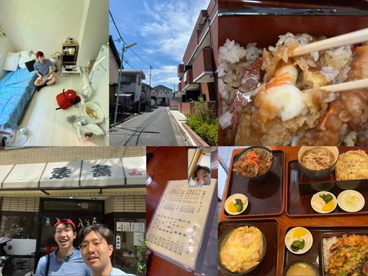
Got home at 5:45pm! Yay so 2 new sushis and 2 travel booklets (one in Japanese one in English) are some souvenirs I got. The sushi thing was another LOTTERY MACHINE in the Hakone Tourism Center which is also inside 新宿 train station. It was a completely serendipitous encounter that stemmed from our intent to find a tourist map for Shinjuku which we couldn’t find, then we saw a transparent machine full of balls and each ball would contain the slips of paper that say 一貫[38] i-kkan or 二貫nikan or, if I hit the jackpot it’ll be 三貫sankan, kan being the counter for a certain amount of sushi but usually referring to one sushi. I saw a few different types of sushi on the counter being up for grabs, including salmon roe, tai fish, salmon, tuna, tamagoyaki卵焼き, uni雲丹 which is sea urchin, and I grabbed the two kinds that I liked! Because I paid ¥500 and was a bit luckier than Michael, winning 2 sushis!!! Happy about that, it’s something I can stick onto my minifridge next semester.
Felt hot and needed a shower, and also got some release, sitting down in the bathtub.
I actually forgot I arranged for 8pm call with Mr Blake Hu in northwestern so let’s go.
Yamanote has its own mascot which is just a train wearing gloves.Supposed to be a jellyfish or something but looks like a dickhead! Note that a d*ckhead however does NOT have a spike and I’m referring to the mushroom that is slightly more rounded.
a restaurant i intend to visit because rice is free flow!!
This is the part of Shinjuku where they have karaoke and restaurants and just look at how clean and free from litter or dirt the road is! It is truly a miracle of human civilization.
I love seeing the insane variety of ガチャガチャgachagacha (an onomatopoeia for the noises that the machine makes when I turn it) that Japan has, from disgusting insects to train mascots to KIRBY 星のカービィ to tiny bento sets and tiny furnitures to ugly pieces of shit that only the Japanese can come up with.
First, we went across the road from Shinjuku station to an electronics shop, where I looked for a phone case for my OnePlus Nord 5G to no avail (no carriers of OnePlus in Japan) and then there was another prize thingy for answering a short 1 minute survey about which mobile carrier I use (SoftBank for me) and what my family uses (they are not in Japan). I got a hyper thin notebook (just a few pieces of paper) and then I picked like a bandaid. Then there was another button tapping game, right outside the mobile products shop, where I am supposed to time exactly 10 seconds, after counting from a 3 second countdown after which there is a counter in the machine that starts but I don’t get to see the seconds pass, rather I just count inside my heart. I got a little ahead of myself in the process and stopped at 9.04 seconds, hence not winning anything else. We moved on to the streets including the capsule stations above gacha-gacha, and I also went to a shoe shop that sold Nike, Adidas and other brands that are moderately famous.
Called Blake at about 8:10pm. Eventually I gave up on wifi and used mobile data for voice call. We called for perhaps 40 minutes? We mentioned
I walked to this narrow dimly lit izakaya 居酒屋 type of shop that opens until really late, with Japanese TV blaring at one end of the table and huge bottles of Japanese wine lining the shelves adjacent to the bar table.
Two Japanese aunties, one of them is the shop owner of this like bar top izakaya kind of place, the other one looks like a customer with a glass of beer and a dish of food.
Talking about electricity bills of aircon (especially if one has a pet dog).
I don’t know why sitting here waiting for my food increases my anxiety by a lot. Hm.
After that I got home and was just trying to find ways to fill my stomach, such as by pouring 2 types of spaghetti sauce onto my generous portion of white rice (Geneva sauce and tomato garlic sauce with sus white bits that I can only hope is garlic).
Had a decent 2 hour call with Yiyi.
18-June-2023 Sunday ☀️
Opened my eyes at 8:50am, rolled back into the bed and then opened my eyes at 10:54am. Then like oops. I have to spend money booking
三角橋 road, I saw 2 black taxis. Flagged down at the pedestrian place and tried to go the 2nd smaller taxi which had someone already. Then the bigger taxi driver made awkward eye contact with me as I tried to open the door (it’s an automatic door so not supposed to). I think he shook his head or something. He’s a young dude in his twenties.
So I continued walking briskly down that road until I came to a different taxi but I couldn’t flag them they were going too fast. Eventually I flagged the black taxi.
I guess I don’t have to worry about spending my cash in Tokyo because this right is gonna cost me 5000yen or something like that.
高中同学来这边4个月. Wong Jia Ying. She was late but not as late as me.
I’m just being bombarded with all these kitschy cringey advertisements made by Japanese where they do over exaggerated expressions and kind of flimsy looking background effects.
I’m so late! Like Megan[39] !
1:28pm 斑鳩いかるが
I’m at Tokyo eki
Tomigawa ramen
Jako is the fish mince on top of the rice, kind of like Bonito fish
In the morning, spent 5100¥ (pain) on the taxi unfortunately that took 30 minutes to get me from sankakubashi 三角橋 to Tokyo station Yaesu central exit or 東京駅八重洲中央口. At least I wasn’t all sweaty and uncomfortable. Where I waited indoors for a while and saw the Kyoto tourism-promoting cardboard cutouts of the local statues, before realising that the two newly met Jiaying and Ayumi are outside the station. I handed them the two tiny cans of green tea with tominaga written on them that I got from the workplace and apologised for being a whole hour late (Megan style).
After walking about all the cute and childhood-rousing merchandise shops (Kamen Rider, Sumikko Gurashi 隅っこ暮らし the little cuddlies that live in the corners of the house ~ I had to buy a cute keychain for Yiyi!!, Pokémon, Harry Potter, Miffy, Snoopy and Peanut, Totoro, for like 1 hour Lunchtime! I spent ¥1350 on a ramen with extra noodles and a rice that had jako fish flakes that were too salty and I didn’t finish. It was very mid despite the ratings that the shop had received. Anyway during lunch I finally managed to hear the tea from Jia Ying about her roommate! She stays in a airbnb near Asakusa浅草 which we were at for most of the day, with a guy and a girl who were her friends since year 1. Basically the noise and lack of consideration of the girl made life a bit difficult. Jiaying asked about what my girlfriend is studying, how we met, how old she is and such.
We took the train from Tokyo station to Asakusa 浅草
Also went to Sumida Park隅田公園 where I was hinting I wanted to see Ayumi’s dog but she’s like yes but no invitation unfortunately so I won’t press it.
Purchases I made in the afternoon:
● ¥220 for 2 stegosaurus soft toys @ Daiso
● ¥110 purple Sanrio item @ Daiso
● ¥2000 for 2 お守り or amulets and religious protective sachets from 浅草寺sensōji
● ¥10 to see the Buddha at the altar of the big temple with the big lantern
● ¥400 for the smallest cup of amazake 甘酒 made from rice, I found Chinese rice wine better.
● ¥300 for matcha抹茶 shaved ice which was really bad, syrupy and did not have fragrance, had to be thrown away
● ¥600 for matcha 抹茶 beer that got my face red and tasted bitter and unpleasant.
● ¥100 for 2L water at the Seven Eleven near the river! Right opposite アサヒAsahi with the golden poop building! Got really thirsty so it saved me.
● ¥5000 to top up my train card which had like a bit more than hundred yen remaining. It better not run out till late July!! 🤜 (update: I spent 1820 of that on 2 meals so it’s at an amount that may possibly run out, oh well).
Dinner was before 7pm — at Zenya which is the restaurant that Jiaying found on Google maps that was rated 4.7 stars (!) we had 8 tables before us.
We were talking about the names of the different utensils in Japanese, at the monjayaki もんじゃ焼き place known as “Zenya” where we spent 4499 Yen in total (I had half of a ¥1580 mentaiko明太子 and mochi monjayaki which was really delicious, and half of a ¥980 豚玉butatama type of okonomiyaki お好み焼き, Ayumi had a ¥1180 modan yaki without meat which the restaurant messed up and it took way too long to arrive like 50 minutes). In total my dinner was probably only 1400 yen. Jia Ying also ordered a ginger ale in a nice big beer mug. I asked about her boyfriend and how they were coping with LDR! The guy whom I played badminton with before is too busy with his badminton coaching and almost daily training as well as Sunday church and preparation for that. Also the conversation turned to living and laundry and I was surprised to learn Jia Ying’s mother made her hand wash laundry because “washing machine wastes too much water”. Then the conversation focused on the misogyny of their households in that males get a free pass NOT to do chores and just sit back and enjoy having the women prepare stuff for them (same conversation we had at Lê’s after returning from New York during Thanksgiving).
へら
はがし
剥がし this is the scrape HAGASHI that we have individually to scrape our monjayaki for the hot metal plate!! Or teppan 鉄板
はだし
We were hovering around Sumida Park 隅田公園(kōen) which is right at Asakusa station and Ayumi mentioned her internship mentor whose also a member of Parliament! The woman graduated from Georgetown and also did her masters in the US, and told Ayumi that she sees herself in Ayumi, hence inspiring her to pursue something policy and international relations related. She said that the woman Eri almost had tears in her eyes cuz she was emotional.
At Sumida Park, we were just sitting tiredly at the benches, and then I noticed some jellyfish floating near the surface of the water. Kurage! I said to Ayumi. She turned to Jia Ying on the right cuz the stone bench could only fit 2 people (with a divider in between) and Jia Ying was on the neighboring bench, and asked her about her interest in animals etc and I said JY used to volunteer at a turtle 🐢 shelter in Singapore (feed them, clean their shit, quote). Then we heard loud 🔊 motor noises across the water
We walked back to the same Asakusa street leading to Donki and I simply had to take a phto with a sign below a roof that says フジヤ 富士屋 which sounds like Fujia!!!!
Before dinner, was at ROX shopping Center including a bookstore and a ABC shoe mart and DAISO, tried to look for the book that my cousin wants me to Mail from Japan to Shanghai.
きたない君がいちばんかわいい
After dinner, walked to Asakusa or 浅草 station and Ayumi shared again about her father’s company that had released her mother from work and also made him uproot himself to go other countries.
Jiaying said bye to us because she lived around there. Walked down to the platform with Ayumi
Reached Ikenoue 池ノ上 home station at 8:55pm. First time I had departed from the front of the train, very close to the exit. Same old walk home! In a very pleasant weather.
U n two girls for a dayyyy😢
Honestly i was ready to head home at 4:30pm (we were standing close to Asakusa station and i was ready to the take line down to Shibuya) but i think they also wanted to continue eating dinner and staying in the area. So we stayed!
哦。
19-June-2023 Monday ☀️
Woke to my phone buzzing.
Decided to roll myself up like a sushi inside my blanket first — once again I had left the window open for the whole night and that makes me a little cold despite the fact that I’m wearing a (too small) pajamas shirt and Uniqlo heat tech pants.
I decided to heat my 538¥ thick large piece salmon bento (with bamboo shoot pickle, carrot and idk what root vegetable and sushi wrapping) for 2.5minutes first and continue lying down. Obviously I didn’t sleep enough because I lay awake till after 1am. I thought about work and imagined myself (画饼充饥、望梅止渴）being in the same house as Fujia (how that would facilitate luggage packing and just giving stuff). I took a dump and brushed my teeth, heated the water that I boiled last night and drank it. Decided on a pair of blue pants that I’ve not worn to work before; added the blue jacket to help me feel warm. Decided to eat while walking to the station which worked out perfectly as I could dump the bento box and chopsticks exactly at the shop (まいますけっと my basket by Aeon) at the train station where I bought it from (I almost dumped it at a bin along the way but there were too many people watching). There’s quite a bit of salmon bone inside that chunk of meat! Some were discarded at the drains along the way.
Reached Shibuya at 8:15am! It’s kind of crazy that I managed to get a seat at Shibuya渋谷 along the Ginza銀座 line. At omotesandō 表参道 at 8:28am and was intrigued to see a 60+ year old woman wearing a transparent face shield complete with goggles.
40 year old (?) yellow faced commuter doing Duolingo Spanish on my right haha.
He got off at Akasakamitsuke 赤坂見附 and in swarmed droves of humans!! So 1.9m tall dude sat down on my right and I saw that he’s watching the original Japanese transformers or something like that. Then the incoming commuters pushed so hard that the old and young women in front of me lost their balance and stumbled. Then a second wave (much like the aftershocks of an earthquake) pushed the poor 1.6m dude who clung on to the handrail and fumbled for balance. Then the 1.9m dude on my right just casual pushed his big hand against the 1.6m dude’s bag that he carried at the front, as confidently and nonchalantly as anyone ever could. This all happened in complete silence, no gasp or expression of dismay.
Got to Ginza and workplace early and confidently before I 今西senapi. He headed off at 10:45am for a meeting and was kind to ask me if I feel better which I said i did. It is nice of him.
Got this post-it stack from the back! Near the back door with the stationery and the tea. (same as all the wet-wipes and notebooks and tissue boxes!)
今天吃了超好吃的牛肉乌冬面，在这个偏贵的银座（business购物区），也才9新币。开心呀呀！跟渡邉健太watanabe kenta 比我小一年的实习生。
Waited for Watanabe till like 12:37pm then became like 12:50pm as he was completing a task.
We searched for a bit on what to eat downstairs and I casually saw Ippudo 一風堂 and decided to walk there, but we hovered a bit around that building on the 5th road of Ginza but could not find the restaurant; also saw renovations going on and a steel drain cover thingy being dropped quickly from above which is slightly scary.(kowai! 怖い) And we veered away from the road where that construction or renovation was taking place.
Looked at the various choices of udon available. There was pork and beef mainly. Obviously have the more expensive meat! Had a gyu-udon with large octopus tentacle (keso) that cost me only 940yen (I chose the largest amount of noodles I could get, if not it could have been like 700yen or something). Needed a bit of help when he asked if I wanted hot or cold noodles; listening abilities were still compromised but glad that I had a fellow intern to help me when in difficulty.
Hanamaru Udon Ginza Five
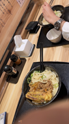
3.4(237) · $ · udon noodles
Ginza, 5 Chome−1 銀座ファイブ B1F
This was just yummy and the soup was savory and slightly sweet with beef fragrance, udon was slippery and not too hard nor too soft, boiled to perfection.
Had nice conversations about foreigners in Japan, how Japanese might look different from other East Asians (whether one can tell a Singaporean by their face and so on) and at Keio University and all the random stuff that I was curious about such as the ramen explaining notice that was situated on the table in front of me, the origin of the name hanamaru はなまる💮ramen and specific type of sanuki 讃岐udon that it was serving. Hana is flower and maru is circle, so typically Japanese teachers would actually draw a spirally circle to commend a student for scoring full marks on a test in Japan! Which isn’t present in other cultures apparently.
Serious food coma after the massive udon so I didn’t think much and just transferred information that was available in Japanese into excel and the word that’s present in the chat between me and 今西.
Lol I san came to me at 5:15pm and asked what I was doing. I explained all the excel sheets, the flowchart of external and internal environment, whatever 2 graphs of the various smaller divisions of food industries in Singapore and Japan.
Then I went back to ORD mode (note Singaporean males when they’re close to finishing NS enter a disinterested stage known as ORD mode).
Reached the train and got a seat at 6:40pm. A bit of a record.
Was just feeling the weight and dread of a night that’s not going to be too different, and will try to focus on my book, Norwegian Wood by M Haruki.
I saw people’s faces and thought about their jobs, the train staff at the Ginza train door exit, the people rushing about with a mole on their face, and about what Yiyi is doing right now.
I felt the distance from all the people at the workplace even Watanabe渡邉 whom I had lunch with and whom I’d left there. With a barely perceptible otsukare お疲れ. After I left at 6:10pm, I checked if the message I sent to I今西 was the correct way to say politely that I’m leaving first: お先に失礼します o sakini shitsurei shimasu
I also thought about the data.ai that Michael Tan, my Japanese 140b classmate, was nice enough to share with me so I could look at some statistics for the market surrounding i freek mobile’s apps like its educational ones and the sticker maker app which seems to have some major competitors in the Japanese market (whose revenue data could not be seen at all!).
6:46pm arrival at Komaba Toudai Mae 駒場 東大前. Literally translates to Small horse place, in front of Tokyo University. It’s gonna be a little hard to squeeze out of the train but I’ll manage it next stop.
Dilly dallied at home for a while figuring out what to do, whether I should stay around the area or venture out. What sealed the deal was the discovery of a bookshop called Sanseidoshoten Shimokitazawaten or 三省堂書店 下北沢店, which I knew I’d explore sooner or later. So it’ll be books and reading after dinner! I found the portable wifi which was simply a tiny black rectangle, smaller than the average power bank. Decided to rewear a Pforzheimer T-shirt in the washing machine since I’ll shower after I get home. Walked out in shorts and slippers, thinking about Yiyi and decided to open one of her karaoke songs, about galaxies and walking in the gentle evening breeze.
I took a while to find the desired restaurant: it’s one down 3 Chōme 丁目 34-2 Kitazawa 北沢, known as Ten to Sen 点と線 which featured “spice ramen” in its name. It was a little beyond my expected price range (like hoping for less than a thousand) but it seemed quite pleasant and novel! I was welcomed in by a blonde underaged looking server who could speak a little English and proceeded to infer that I’m a foreigner from how I was looking around where to sit and how to order (just using that conventional coin and note automatic machine that every ramen shop has but I forgot).
I spent ¥1000 on the spice ramen and ¥200 on extra mini rice, 2 of them.
Bib. Ask for contents of broth: the waitress said it was tonkotsu with spice. It tasted of Indian spices, like curry and turmeric; no idea
Was wearing a bib to prevent the sauce from splashing onto my clothes.
Ate that thing called a burdock for the first time.
Went down back to the station where there is the SANSEIDOSHOTEN 三省堂書店 下北沢店, and asked the cashier, in slow Japanese, for 2 specific titles that my 15 year old Shanghai cousin wants to get: 秒速５センチ 5 centimeters per second by Shinkai Makoto新海誠, and きたないきみがいちばんすき which is “Kitanai Kimi ga Ichiban Kawaii / the filthy you is the cutest” which is like the weirdest title ever. I bought the first title
insane bento selection.
¥300 at this peacock place. 3 small coins for a ebi fry, konyaku jelly, carrot, pickles, sliced bamboo shoots, 2 pieces of unknown fishcake-like objects, edamame枝豆 together with salmon in a fried rice, seasoned tofu, another sweet tofu-like item, a slice of lotus root. I love this comprehensive Japanese bento package. Though very long and hard about buying the really cheap Chinese egg and meat and vegetable stir fry for breakfast tomorrow but thought that my stomach won’t take it lightly.
20-June-2023 Tuesday ☀️
Ate the bento above for breakfast. Probably only got out of bed at 8am but still managed to be less than 10 minutes late, because I ate the bento while walking to the station.
The morning rush! I saw interesting manga and typical kitschy Japanese commercials on the train; I saw a little boy that’s about 12 years old with strabismus/cross-eyed, whom I had actually seen once before on the same Ginza銀座 line while commuting! So this i
Got this matcha pudding topped with red bean congealed in transparent jelly (¥378 so I used up 5 coins and got back 2 coins) for which I had been eyeing in the morning but the shop wasn’t open yet. It has the texture of 龟苓膏 because it’s made using 葛粉, a starchy powder from the kudzu plant. I slowly ate my pudding at a random shop outside a gallery on the ground floor down the street.
Today I was feeling extra outsider at 12pm because everyone here is Japanese and doing their own stuff. Also had a bad dream last night, forgot the exact contents.
I felt a little better at 1:15pm when uda san卯田 greeted me in the toilet and asked what’s my native language and what languages I spoke. He’s like a M&A advisor and specialist and has come to P&E 2 years ago; I was under the impression he was outsourced from another company.
Here’s the dude wearing glasses that spoke to me!
For lunch, I will go back to the exact place I had gone to yesterday! 讃岐うどんのはなまるうどん or sanuki udon, under the shop name of Hanamaru which is the flower thing that teachers gives their students, which I explained yesterday.
I put on sunscreen before I headed out for lunch — sun is out weather is perfect and UV index is at a 5. So moderate.
I was gonna find the udon place from yesterday but I made a left turn！ended up at Maguro Soma Suisan マグロ相馬水産:
〒104-0061 Tokyo, Chuo City, Ginza, 7 Chome−2−先 コリド, because I was reeled in by the 700¥ saba fish shioyaki塩焼き set which I realised upon sitting down is only for takeout lunch but it’s okay I’ll try the ¥1300 lunch set where I can actually pick 2 items and have unlimited white rice!! Which is mega stonks but we’ll see how large the portion is.
Itadakimasu. The thickest and freshest juiciest piece of mackerel! This whole thing was ¥1300 which I think is very worth it given how fresh everything is and how there is free top up of rice
One thing I find very cute in the service industries is that they’ll patch/cushion the end of their sentences, including serving food and explaining the menu, with a “desune~ ですね~” which sounds very pleasant and kinda like a cat ねこNeko.
GOT a okawari お替り which means a second helping of rice. This is a stress test for my stomach and also a sure harbinger of food coma in the afternoon let’s go!
AND at 3:15pm Morimoto森本san decided to leave.
I made a big purchase today from www.japan-wireless.com (managed to find a 20% off discount coupon online, reduced the daily price from SGD6 to SGD4.58 because I simply cannot survive the rest of June with such shitty Wi-Fi at home it’s pissing me off. Basically for the home portable Wi-Fi, it becomes unusable (can’t call, can’t download anything, can’t play anything, message takes 30 seconds to send) when I exceed the limit of 100GB which is really dumb hahaha because obviously the owner had been using a portion of that Wi-Fi before I arrived. So yes extra topping up cost for the inadequacy of house house appliances! Okay but I realise the rent I paid is really cheap so it doesn't matter as much. Still a bit of heart pain having to pay for Wi-Fi! But I need to remote work AND WATCH TWO BROKE GIRLS WITH YIYI AGAIN! SEASON THREE.
|
thank you very much for processing the payment. Your order number is: A451248 We will send you a confirmation email shortly. Should you not receive it, please check your SPAM box. Should you need to extend your rental period, please submit your extension period and process the payment here. If you have any question, please contact our customer center: customer@japan-wireless.com
|
Impromptu outing with Shaina Adams and Michael Tan to Kabukicho 歌舞伎町🇯🇵 which is a famous red light district.
Oh my god spontaneous outing with Shaina Adams and Michael Tan. Michael was max gay energy today and Shaina was also very hyped because we saw all the host and hostess clubs at Kabukichō!!! 歌舞伎町!!
It was dazzling beyond anything I knew. Girls in all manners of costumes with signs around their necks too and I could read the numbers on[40] it. It’s so morally depraved and Shaina was explaining how this is allowed in Japan, where the establishments register themselves as food & beverage but in reality, the customers aren’t paying for the food… they know what they’re paying for and there’s a menu for it. I find it incredible that all these stuff coexist in Japan, the most civilised and the most depraved and degenerate!
Love hotels were interesting because you could “rest” in them or “stay” in them. Hahahaha
I eventually picked matsuya because it’s cheap and super effective (at filling my stomach) and relatively clean. Both Michael and I ordered 2 sets each, I have 2 gyudon where one of them has radish and spring onion toppings, the others had a bibim thing a tomato sauce thing and Shaina also had a gyudon.
It was so fun to walk around though and cuz both of them liked some cute guys on the store signs or the HUGE malls or trucks advertising host clubs, they kept thinking about planning to go and buy some guy or something HAHAH it’s so weird because I find those storefront guys really plastic and gross. I mean obviously my attention wasn’t on guys.
My route for today: Ginza to Shinjuku via the red marunochi line, walk around all the red light district stuff, then Shinjuku to Sasazuka 笹塚 via the neon green Shinjuku line, then change pink Keiō 京王 line to go to Meidaimae 明大前, and finally back to the beloved 井の頭inokashira blue line to home (via Shimokitazawa 下北沢 where I was last night)! Most complicated route today.
21-June-2023 Wednesday ☀️
wfh I will shave lol (not very cleanly, using the disposable shaver I brought from Hong Kong)
Watched one episode of SOUTH PARK with Chris Perez and caught up a little bit about life in Chile! He’s got the furthest distance from me among the list of people with whom I share location.
Also heading out for lunch stomach rumbling
Shimokitazawa station 下北沢駅 exploration during lunchtime.
Heard a very anime voice kind of female singer busking outside the station, for geshi夏至 curry. Recorded video of her singing.
Went to the same bookstore I did 2 nights ago, Monday night. Saw super cute sumikko gurashi 隅っこ暮らし comics and was so tempted to buy it and read it at home and give it to the little brother who likes these cute stuff. I absorbed those character descriptions like I’m reading a textbook! There’s the katsu 猪扒 and the ebi fry that are the cutest rendition of food ever.
There’s also sexually provocative and explicit content and I read some of them. The ancient Japan paintings as well as more modern short stories. There’s just lots of beautifully illustrated books like one of the first that I picked up about untranslatable words from all languages (no Chinese though!) such as nunchi 눈짓 in Korean which is the feeling of second hand embarrassment you tell on first sight what someone is feeling through their demeanour but not by them saying it directly; a sort of instant mind reading!
I also appreciate that Japanese education makes all the kids learnings into Pokémon and Manga, so that their math and science 🧪 and Japanese content won’t be as boring. At the same time, I’m also quite intrigued to see the sample test papers for entering all the primary schools ⬇️ so competitive!

Books!
Apart from that, there’s fierce competition between the apparel stores (mostly vintage) and between the restaurants around the station. They weren’t cheap but were all attempting to push down prices. There’s a few stores that were selling clothes for a dollar or two. Also saw middle eastern Kebab stores and Taiwanese ramen/Chinese stir fry. 👇 one of the burgeoning Japanese industries is the one for making realistic food item models for display at the shop windows!
Chilled around i.e. did not so productive things and then had a 12 minute nap where i dreamed! Of being back in the workplace and meeting NS people like Hao Yang and hearing SI (staff inspector) Andrew saying stuff like where’s Aiman and Hao Yang went “Sir, Aiman ORD alr loh!”
Dinner at a serendipitous encounter of a Chinese restaurant! Stir fried meat became mostly vegetables which I’m happy with since it still tasted good.
I’m actually tired from doing nothing today. Firstly wifi arrived after 11am. Waited 2 hours for that.
And I definitely don’t have the heart to do any excel sheets or key in that manual labour heavy research that this consulting firm would like me to do.
So I managed to explore the immediate area from my home station 池ノ上Ikenoue to 渋谷Shibuya station, including 駒場東大前komabatōdaimae which only has schools and a huge field and similar prices to Ikenoue , and Shinsen 神泉 where I eventually managed to find a Chinese restaurant that spoke Chinese.
Saw many interesting people on the streets walking from Shinsen (which is disproportionately close to Shibuya station than Komaba Tōdaimae), including a bunch of foreigners doing go kart on the streets! And just people of all kinds of heavy and light makeups and piercings etc.
Felt a little bit bad for not doing any work today so here I am opening an excel sheet. also ¥550 for 31 sheets of face mask from Donki (or Don Quixote) whatever.
Shibuya at night! I GOT GOOSEBUMPS SEEING ADO ABOUT TO RELEASE HER CD AND SINGLE. Both times it was in Shibuya I hear her song ashura chan 阿修羅ちゃん and see her about to make a career! Ado ado ado ado ado ado ado
I also went into another Chinese restaurant asking if they spoke Chinese and got them to explain to me that I can’t just order the 550yen mala tang with noodles.
Slept at probably 1:30am? Was gonna start moving stuff in excel but decided not to, too much trouble. Called Yiyi, we talked about the people we’re gonna meet for the next 50 days in our respective cities, and stared into her eyes as she lay tiredly and her stomach hurt twice today, once in the afternoon at the company site visit and once at 12am her time. I sent a message on Telegram that was somewhat[41] passive aggressive and we were resolving that; higher emotional volatility during LDR. We liked to discuss the future I guess a[42] [43] nd she prompted me on what I was imagining last night lolol.
22-June-2023 Thursday ⛈️⛈ 22 degrees
Wfh
I poison gas myself again ugh! The burning rubber smell from the stove oh my god.
I woke after 9:30am and heated the katsu bento I bought last night for about 439yen.
Very lazy and inefficient during the Excel data transfer!
Got news about Kuo Chuan and Lee Rui Zhe coming to Tokyo, and Carolyn also asked if I wanted to travel. Want to go to Kyoto and will ask another person or two to come along, like Shaina or Bozen.
Meeting my cousin Howard Zhong for dinner at Shibuya! Shibuya Parco is where it’s at. He’s bringing his girlfriend Kelly yayy involuntary third wheeling experience.
Finally headed out of the house at 2:24pm for lunch after doing a little bit of work.
Apparently there’s food and drinks buffet for 45 but why get that when I can stuff myself with big rice bowl for 9! Will try all the different Chinese stir fried dishes because I found yesterday that these people speak Chinese 🇨🇳 and they are probably from like Northeastern China.
I had a good prawn egg set, complete with 榨菜 or spicy pickle which tastes of my childhood, a small scoop of overly sweet almond beancurd, a small cube of tofu which I mixed with 豆瓣酱, and a egg flower soup! It was 920¥! i liked how the egg was made! And I had a moderate sized bowl of rice followed by a GIANT BOWL of rice that you could get during lunch sets. Jay Hong and Xianli were having lunch (at Pepper Lunch in Singapore) and Jay Hong video called me to ask me how I was and I couldn’t hear anything he was saying because restaurant was too loud, but Jay Hong did manage to screenshot a few selfies, and Xianli had pretty sleek hair.
神泉 has a little Daily Yamasaki store and a bunch of p**n magazines were just there once you enter the shop. There was full on nudity. I think like Japan is the only country where the government doesn’t even do anything about this like any random kid could just come in and start flipping the magazines (like me).
Lol pink hair guy is Ethan and he’s been almost all parts of Japan apart from Okinawa and Hokkaido!
I love Junxin uncle! At first I thought I’d go for the board game thing but having Korean grilled meat is so much better! Best relative hahaha.
Howard and Kelly lol. Featuring a piece of STANDING 伊万里Imari beef which was so fatty that once you put it on the steel heating plate it oozes out like BUTTER. Kelly is gonna be a SWE at 2SIGMA (apparently there’s a fallout between the founders of 2SIGMA) and she has parent from Taichung and another from Taipei. She and Howard will go around Japan and then to Korea and then to Taiwan and then back to China to see Howard’s grandma. (Was talking about covid risk Omo throwback to like 2 weeks ago when my mum fell sick.) She seems like a typical money savvy Asian too talking about how the visa for Taiwanese in Taiwan would’ve been cheaper than if she had paid for the China visa in the US. Also seeing couple travelling together.. and staying together so very fun. Graduating seniors deserve that break! (Remember Howard’s RICE score being like __ I’m quite amused.)
While we were close to the seat and ordering and about to pay (ended up being like 3450¥ per person which is my most expensive meal I self pay for so far in Japan), Omg the waitress is so flustered and anxious and has like a 5 second attention span. She kept saying she didn’t understand but before we were done speaking she would hop off to another area. And she’s extremely flustered and exclaiming not to touch the credit card while the money was being deducted.
Okieee done with the food and had a bit of vanilla ice cream. During the meal since we had to split up into two two, I had a very good chat with Ethan Gu whose dad studied EECS at MIT, migrating to Boston all alone at 16 years old and making a living for himself which is quite insane. This Ethan also knew first degree connections to Bill Gates (whose daughter is apparently a “retard”[44] ) and to Jeff Bezos (whose son is very smart), and went to a friend’s house that was just across from Bill Gates’ house. Also we talked about the 420 tradition at UC Berkeley and the strike that worked and doubled all the TF pay at Berkeley which I felt a strong sense of vindication let’s go.
We walked to Donki Shibuya which I had just been last night so I’m like nah I’m gonna head home bye. I passed Howard and Ethan some pineapple tarts from home! More like from Kiko my landlord lol. And an assortment of sweet stuff and chocolaty biscuit stuff that I don’t eat. Howard was like ohh I have jelly for you and he gave me a grape jelly and orange jelly, the classic konyaku Japan packaging, which I ate both on the spot.
Dropping pic of the flowers I saw while walking in the drizzle back home

Reached home station at 9:30pm! Good catchup with Howard!
Insane selection of bentos where I struggled to find something that I haven’t tried before and also has a balance between meat and vegetables. I settled upon a ¥323 w tax chicken bento with a bit of vegetable and eggs! So cheap. And there’s also a ¥74 natural water thats 2 litres that’s better than the water I will make at home haha.
Killed a mosquito that was stupid enough to fly into the toilet where I can see it clearly against the white acrylic walls.
vindicated! Hate them! Got stung previously
23-June-2023 Friday 😊 ☁️
wfh
Woke up feeling cold in the stomach and has some stomach pain but it fell back to sleep for like 1 hour and then we'll come back close to 10:00 a.m. and also heated my teriyaki chicken breakfast and yeah and I really delayed it all the time and did some email reply with regards to retreat for the golf club and so I only started doing Excel stuff at 12:00 p.m. plus good morning that was not very well used
also I managed to transfer a few more rows of company data from the main 250,000 companies into the auxiliary Excel sheet that includes the top on printing companies and all their subsidiaries and use the functions throughout the whole column
Actually transferred a few rows of excel data, one with more that 250000 company names haha.
Settled my financial aid email that is a little salty about my B1 forms being processed but me getting the notification that it’s still incomplete for whatever reason. Looked through the plans for 7 July and 8 July and put them on my calendar!! Emailed M and 大野さん whose instructions about train tickets were not clear and we have to discuss the train when I go to the company (can’t ask via email).
Talking to Yiyi! Facing her direction oop.
First going to get zongzi or glutinous rice dumplings wrapped in leaves to celebrate 端午节duanwu festival yesterday ! Perhaps the first time in a few years I’ve not spent it with family and ate my mum food.
taking one stop to 下北沢shimokitazawa that same district with all the vintage clothing and the bookshop! Interesting how camera lens distorts the arrival time sign. Anyway it is here at 1:30pm
I got the zongzi from this Singaporean waseda student called Josephine. Apparently she stays in Changi Rise which is mind blowing because we were literally living in the same 小区 for 14 years.
Anyway we said bye cuz she’s going to the bookshop lounge. I tried finding one of the books there then decided to just go home.
Matsumoto masato! Going to meet him at Meiji Jingu 明治神宮
I ordered two xiaolongbao which are twelve of them ¥1580 and then two egg tarts that’s ¥520. Got hungry on the way home sat down to eat here yumz. Talked to the owner who is from Shanghai and his daughter is working at his store.
yay met Masato (bruh I thought his name was Yuki but also I wasn’t hundred percent sure so everytime I talked to him and his parents I would keep my voice low and avoid calling his name directly! And only like weeks later did I scroll up through the LINE chat history and see that his actual name is Masato) we talked everything about school
Is our destination from Meiji Shrine/Palace!!
Ahhhh had such an insane grilled meat meal and I really ate a damn lot burned a whole in their pocket probably (I saw the bill more than ¥12580💸 ). I decided not to visit their house and anyway I’m gonna get home pretty fast yay!
Ok I used the scanning function but. I need to travel 16 stops to get home.
Yoyogi-Uehara
生 大4匹的
Higashi-Kitazawa
東北沢
Shimo-Kitazawa
卜 乐的
Setagaya-Daita
尹田和生田的
Umegaoka
梅ヶ丘
Gotokuj
嘛趣t ⑧
Kyodo
Chitose-Funabashi
Soshigaya-Okura
界品人和长尴
Seijogakuen-mae
Kitami
喜
zumi-Tamagawa
Noborito
Mukogaoka-yuen
叵人山发豳
Ikuta
州田
Yomiuri-Land-mae
給根 八工温！
Yurigaoka
如 山
Shin-Yurigaoka
鶴川tsurugawa is more of like a less developed place. But yakiniku suehiro is really yummy I had beef liver and intestine haha.
we basically talked about everything, from all aspects of Harvard like room and food and fees, to Japanese books like Higashino Keigo “The devotion of suspect X” and Natsuo Kirino “OUT” and movies like Sadako 貞子 and The Ring, to Lee Kuan Yew and Singapore and what they remember, US culture and college kids (I talked about primal scream and they were like, are they mentally sane), to bentos and convenience stores, family and educational history and jobs (the mother’s experience at a 黑公司 that makes the employees stay until 12am), and many more!
Reached Shimokitazawa下北沢駅 after like 17 stops lol. Saw the painting and it was emotionally evocative. Feels like a couple separated by war and LDR!
The 1kn walk from this station back home was very vibey so I made a collage.
Short call with Yiyi. Also read Norwegian wood by M and did up the remaining half excel rows. Feeling sleepy and yet content .
24-June-2023 Saturday ☀️
Wanted to wash my clothes and hang my clothes out to dry because it’s so sunny!!!
Woke at 7:30am to my alarm, replied Yiyi, then went back inside my markets till 7:53am. Heated my zongzi from yesterday for breakfast and dashed out, not forgetting to brush my teeth. Also made a mini detour to family mart! Zongzi was hot and really good and so was the 128¥ ほうじ茶houjicha from Family Mart that was warmed by the machine!
Probably won’t meet Matsumoto 松本真慧! Lol. It was good to have a super long chat with him yesterday as he met me at Meiji Jingu after his school ended. But it’s his senior year and so he has homework to do and such. We can meet when his summer holidays start.
Morning 8:30a.m. meet Jed Chew! RI ‘19 Upenn ‘26, on the Urban Redevelopment Authority Scholarship.
Went with Jed to the area around Ueno 上野
● アメ wanted to get shoes but nah
● 東京国立博物館 500 yen entrance fee even though we didn’t have physical student IDs, I helped Jed explain that he’s a student using his I-20 and his Singaporean ID, if not he would have to pay double the entrance fee as an adult.
● 美術館
● 清水寺
● fest going on下町ハイボールフェス which translates to Downtown Highball Festival. Poor kids exposed out here in the sun, dancing and whacking drums. Perhaps not kids anymore but
● Extremely dangerous Chinese circus act and also a monkey show
● Squid!! 🦑 that was 660 yen oof.
● 400 yen lottery and got a Koromi notebook. Meh I wanted a soft toy.
Insert Japanese national museum photos
There was this interesting interactive segment where we fitted the pieces of the clay pig back together. Tbh some of these exhibits are kind of creepy.
● Beautiful flowers and shrines below
吃饭with jed
Went back with Jed and chatted a bit waiting for my brother to finish pooping before we launch our video call, helping him with his June holiday literature homework . Jed was hovering around a bit and I allowed him to leave his ramune glass bottle and his oolong tea before he left the house; tried to give him a plum to eat but he didn’t wanna bother with the seed of the fruit haha no rubbish bins around.
Took the same route to 涉谷 渋谷 and then changed on the Yamanote 山手線line which is light green in order to get to the desired location for dinner: でりかおんどる which is located near the 新大久保shin-ōkubo station that I had never visited before. Passed by Yoyogi at 5:25pm where I was yesterday with 松本ゆき。
Dinner was at a super crowded place
Go to Korea town at shin okubo
Go to China shop and bookshop see what I wanna buy
ahhhhhh i love bookstores so much they’re so fun
found a wonderful book I’m gonna buy!!! The only thing I dislike is the furigana 振り仮名 which is the little Japanese kana at the top of the Korean words which I don’t wanna see at all.
Apart from that, just like at Sanseido bookstore, I’m impressed at the sheer artistic output of Japan comic artists even in these books that are purely for education! Everything has a cute little drawing next to them which I really really appreciate because it brightens up the boring scripts.
Anyway we left Shibuya at 9:40pm. Got to Shinsen a little past 9:41pm.
My mission: get to train station, run home with my stuff, get my passport, run back out to the station, take it to Shibuya, reach the 6th floor of Tsutaya by 10pm.
I have 18 minutes left. Please go fast, train.
I feel the adrenaline rising up! Ahhhhhh please let me get back on time.
I want to buy really cute tiny sushi magnets lmao! 🍣 🧲
9:43pm. Next stop.
And I’m getting the passport in order to remove tax!
I told the cashier this and rushed. Even across Shibuya scramble.
Mission failed. Reached Shibuya 10:01pm and the bookshop a few minutes past that. Got the security guard to open the door for me though cuz he was nice
25-June-2023 Sunday
松本真慧
Meeting Andrew Yap for most of the day
Started spending at Shibuya. ¥390 for A pretty good pork and spring onion dawn that was also supplemented with a raw egg which I only ate the yolk because I trust the hygiene of Japan. So I woke up before that at 9:37 a.m. and I knew that I'm not going to make it to Shibuya at 10:00 a.m. so I thought about what I should eat for breakfast I put a couple of pineapple tart packets into my bag I brought my Wi-Fi and it's portable charger as well as my iPhone only and the passport that was necessary to offset the tax because as a foreigner in Japan I can buy a certain amount of stuff and then they will minus off the tax for me.
What was particularly her worming about this morning is that while I arrive at the counter I noticed that the cash is from the night before it had already wrapped up all my stuff in the clear plastic rapper with a note on it saying that the customer is going to come and collect this items and I was so worried that I wouldn't be able to buy those items that I really want just because they put them back in the shelf and then some other customer had taken it but fortunately I was there at like 10:10 a.m. so I was able to buy the sushi fridge magnets and the five books. With that I began getting hungry so I decided to stop at this specific place called ekudo and there were really cheap stuff there despite the fact that it was from location right across a train exit. In addition I didn't want to be rushing Andrew and his four friends for lunch because I would be extremely hungry and my stomach will feel weird if I didn't have breakfast.
After that I just have to use my monthly pass and take the train down the orange line to reach ginza station and that was where Andrew was shopping and he told me that his back was ripping apart and he had to find a bag at Uniqlo. I remember to apply sunscreen because today's ultraviolet index was a little bit higher than yesterday and I walked to where Andrew was which is the 12th story Uniqlo clothes store which is the largest Uniqlo store in the whole world.
There I met Andrew's friends Ryan and Matthew. Matthew was studying with his sister Crystal was also there in Melbourne and Ryan's sister Claire was also there. We went about a few floors and then I hugged Andrew because I haven't seen him in like 10 months and we were in Singapore at the same time in May but eventually we didn't meet up and we talked about all sorts of stuff from what we've been doing the past few months to what we feel about America to all the updates of friends around us and how he met his gang of friends as well as upcoming plans for Japan and also he taught me a lot about his mirrorless camera and he was filled with gratitude that Blake lent him this 2600 camera to take great photos and we eventually post along the street which is 5-chome丁目 Ginza.
Spent ¥1000 topping up my card. Boo hoo I entered and exited the GRANSTA of Tokyo station because Andrew’s friend Matthew needed something for his ankle that was feeling uncomfortable.
¥5080 on books mostly for my cousin
¥1100 on lunch
¥1980 on Yiyi gift yayy
¥680 on tiny milk tea times 2 and tiny melon bread!
¥600 and ¥500 on nuigurumi of gojo n Megumi (Jujutsu Kaisen season 2 going to come out next week).
oh yeah I need to launch discord event for Unibridge, the initiative that my NS friend 云正 who’s currently at Berkeley and Lorraine who’s currently at LMU Germany are running. Lorraine has been texting me about starting the event for Singaporean junior.
IF Donki was a visual assault, then Akihabara is a audiovisual extravaganza (derogatory). The amount of Japanese pop music and blatant adult things and anime merch and surprisingly lots of second hand electronics! I felt a little sense of panic at the level of degeneracy of Japan and the degenerate people visiting. Anyway, cuter stuff like the sushi magnet, me happy making it home with all my belongings at 7pm, cooking noodles while eating them with the leftovers from KBBQ yesterday while Discord call, and Higashino Keigo not so nice handwriting! On the train. I was so tired just sitting and stoning on the train.
Also I was praised for my t-shirt (by one of Andrew’s friends) saying I embodies the yakuza vibe (Japanese black society) and I shared where it’s from; also mentioned the neighbouring station having vintage and thrift clothes.
I cooked my own noodles for dinner. However the beef and chicken are from that Korean restaurant at 新大久保 which is called でりかおんどる。
Also found out from new SIAMA co-presidents Je Qin and Sirui that I have a freshman buddy! Class of 2027 are born in 2005 or 2007 or whatever ew. The name is Shu Xin and she’s from the same school as Zad Chin probably. My brother was harassing me with the late night video calls asking about geography and literature.
26-June-2023 Monday ☁️ perfect for jacket
Woke and was like oh no all my phones did not ring. Checked that it was 6am and went back to sleep!
Poured the excess soap water from the sink to my toilet bowl flusher, where there’s a hole for you to pour into and reuse water to flush. Otherwise, the tap above the hole will top up flushing water.
Walked to Family Mart to look around at bentos then moved to Aeon’s “My Basket” which is closer to the station; found a ¥429 with 鲭鱼 mackerel and other veggies that I liked.
Missed the 8am train, slightly angsty about that partly due to the big crowd blocking the stairs. but got the 8:03am one. Not knowing people dehumanises them into a bunch of flesh obstacles with no feelings or rights. But yes I am sure their inner world is colourful and interesting.
Reached platform at 8:16am and boarded the train bound for 銀座.
Slightly funny announcement on the train at 8:18am where the announcer says a long passage in Japanese about the train being bound for Asakusa 浅草 and there being Priority Seats and that it should be given to those who need it. Lasted for like 10 seconds then the English announcement lasted for 1 second because the announcer only mentioned that this train is bound for Asakusa. All the subsequent parts were not said at all.
What’s cute about this office is there are fresh roses haha. Had a good bento that I had to heat in the microwave twice.
tAKEN 11:51AM
At about 9:10am, I spoke to 大野さん whose instructions about train tickets were not clear, and managed to confirm my timings for the Shinkansen新幹線 bullet trains on 7 July (morning 7:58am) and on 8 July (evening 6:09pm). Very happy I do not have to navigate the Japanese website to book my tickets and such.
I greeted I 今西 when he returned from some busy looking meeting at 11am or something.
After
After lunch at HANAMARU RAMEN which is in the basement of this building (so many salary men and women looking exactly like me looking for cheap and filling lunch),
The receipt was like 1160yen because I accidentally dropped the ebi fry onto my plate and after a few seconds’ contemplation, decide to add it to the ebi fry that I already had grabbed using the plastics tongs (so 590+190+190+140+50 where first is the basic udon with きつね or orange spongy sweet tofu puff, the 2nd last one is a thick slice of pumpkin/kabocha squash tempura and the last one is healthy CHUNK of radish paste!!)
Located in: KEC銀座ビル
Address: 〒104-0061 Tokyo, Chuo City, Ginza, 3 Chome−10−9 共同ビル (西銀座) B1F
Also mum told me to buy fruit! But I forgot to buy so I will do that on the way home welp. I also have 2 uneaten plums at home that I washed and put at the sink and forgot to put back in the fridge.
From about 5pm to 5:30pm Mr 東京大學 Morimoto森本 was showing how he used VLOOKUP to transfer data from one document to the other and how it is much more pleasant and efficient. We went back and forth a little, I described my thought process of looking up the 61 companies manually, and he sort of re-emphasised that the point of Excel is the formulas and they are a powerful tool. In my mind I’m just like Excel is so boring but okay I will try learning next time. This is also pushing the limits of my Japanese listening comprehension hearing the words “formula” and specific functions in Japanese for the first time.
bro mr Kōbe University I has such horrific handwriting I don’t know how anyone include himself can read it. It’s like someone dipped ink with chicken feet!
Gonna clock out at 6:12pm. Chill time! Yay!
also delayed till 6:16pm. Saw a woman talking to a man hahahah usually it’s male dominated. My suit jacket was at the table since morning and I think one of the administrative staff folded it up for me.
I looked through bentos at My Basket and Family Mart as well as fruits.
I only purchased eventually a cabbage okonomiyaki thing for breakfast since all the other stuff were not as healthy. Also there is no local fruit unfortunately.
I wanted to eat at 三友軒 where the kind old couple made Chinese stir fry but once again it is closed. I then saw the 光春kōshun Taiwanese cuisine which was tucked away at the side of the railway track🤨I always thought previously that the track leading to the restaurant is too narrow to exist.
Kinda not worth the price oh wells it was okay stir fry. About ¥1200 using card.
Went to Shibuya to get fruit: passion fruit for ¥780
Walked through that first street I saw on first day hehe and stuffed myself with ramen. The soup was very rich but not salty at all and almost reminded me of home!
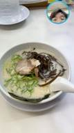the guy on my right who’s probably some middle aged construction worker type beat glanced at me when I sat down, perhaps not expecting me to choose that seat. This was good ramen for 2 coins! ¥600.
¥1210+¥1380+¥1589=¥4179
About 48USD spent today including rent.
27-June-2023 Tuesday ☀️
Was trying to clear up some stuff lying around on the floor in the few minutes I had in the morning.
Woke at 7:34am to the alarm, the alarm rang again at 7:38 and at 7:43am. I heated my cabbage filled breakfast first and also decided to take out a small packet of milk tea bought at the bakery at Tokyo Station.
The almost regimental rhythm of the commuters stamping across the floor of Shibuya to get from other train lines to the orange銀座 line.
I was thinking about good looking people and bad looking people and how much their school life has diverged based on their looks and the need for makeup. And I know that good looking people struggle with their set of first world problems and continue to need to put makeup and learn how to fit the mold.
I walked in the throng of people, the submissive herd of commuters, to the platform and moved down to a door where I felt there were less people. I sat down at the last remaining seat in the carriage and removed my jacket because I was starting to sweat, both from my warm breakfast and the morning rush.
8:32am. Omotesando means a small deluge of commuters.
8:40am and we are at Akasakamitsuke 赤坂見附. Today the 3 commuters in front of me were 50 year old women. The one right in front was a fat one, masked, with frizzy hair and she put her black briefcase onto the luggage holder. She kept wobbling unnaturally. 2 people to her right and there’s another short haired woman who wobbled her head left and right every 10 seconds, as if to suggest “what kind of society smh” as the commuters swarmed in like rats. She was pushed by the crowd and swayed but stood at the same spot.
8:44am Toranomon虎ノ門. The door of the tiger. Finally the crowd cleared up a little bit.
Arrived at Ginza 8:48am having gone to platform at about 8:12am at 池ノ上.
Not a bad commute!
Arrive office 8:54.
Lunch was from 12pm to 1pm. I was treated by Asai and Anzai to a flatfish set meal and what was surprising to me was how much fish egg there was in the fish. Also each set was only a 1000 yen including tax which is very rare in Ginza district. Yorokobi (歓)〒104-0061 Tokyo, Chuo City, Ginza, 8 Chome−7−20 5F ビル belle銀座III 5F
It was pretty insane conversation where I learnt a great deal.
I asked about pay which is a very sensitive topic.
they say like 10 million Japanese yen a year
14:07 92
< 08 and 马文东 ...
i am hearing of dreadful working hours from 5am to 10pm at this company or, less busy is 5am to 6pm. i asked the 2 29-year-old guys 安西 and 浅井 what's the annual pay like
马文东 13:50:00
That's terrible
13:49:56
they say like 10 million Japanese yen a year. maybe 100000 SGD less after working 5 years at this company which i thought is actually terrible and unhealthy and horrific life
nLHO 13:50:35
14:07 92
Junxin也经历了这种每天四个小..时的
13:51:20
similar to 这里的金融界和投资银行和Private equity and others
13:51:58
我说那集中不下去了吧那个很友善的乡下的浅井先生说有时候就是在不集中的状态继续工作
马文东 13:52:12
那还是在美国金融界赚个第一桶金再考虑去其它国家
13:52:20
我说人类是不能这么多小时持续集中的
13:52:46
用日语聊，午餐吃了有很多鱼卵的比目鱼
13:55:31
没有质疑，我说很符合我之前听到的关于日本工作文化的讯息
13:56:43
无法保持一直集中这是公认事实他也说是这样的
reddit came in clutch today! While I was doing Research on supermarkets in Singapore I also came across people who moved out of Singapore to live in other countries and it was so cool to see decades of feelings encapsulated in their stories and conclusions of pros versus cons.
And journey to the east website which is where Asian Americans decide to move back to East Asia where their ancestry is! Fearing racism and the decline of US in comparison to Asia.
we had a mini party and there was a 12 question quiz
And I won the quiz HAHAHAHAH
CEO prepared some T shirts (he’s sitting and working though because he’s so busy) and I chose the MIT one.
Ohno-san said there was no chance of overtaking because I was first place from the start 😅😂 Kibe san the director dude was also pretty impressed. Initially it was my fellow Tenor 2 (Asai浅井) and I who kept getting all the questions correct, trailed off for a bit and actually guessed “Canada” correctly but they didn’t hear me. Also guessed the word sawayaka correctly but was not sure of the pronunciation. 爽やか
In a good mood too because I found a document by JETRO that helped me expand the F&B shop list to over 300. So it looks much better on the excel sheet.
Also look at the food!
Nico Miller staying for one night![46] [47] We had quite a lot of good laughs over 法国 and 发球in 闽南话 and 哭哭觉 in the morning. And i learnt about his past and his sophomore spring
Very excited for the skewers station which is our first stop! It is called 鸟竹 toritake which literally means bird bamboo! I imagine that bamboo is also a good material for skewers and cooking because it's hard and durable. First night in Japan on 11 June I already had a deep impression of this skewers shop which is one of the closest restaurants to the train station and had a 30 minute wait time. This time also involved a long wait but we went ahead without sitting in the shop so we can walk around with more freedom.
A mistake is ordering 2 skewers of chicken cartilage which Nico did not like even though he said he's okay with everything I order lmao. We enjoy the chicken spleen/stomach急诊
|
斤 toritake TEL 03-3461-1627 東京都渋谷区道玄坂1-6-1 T印軽減税率(8%)適用商品 登録番号T8011001016150 2023年6月27日(火)18時45分000101 T土産 やきとり ¥309外 「土産坏九 @350x2 ¥700外 T産 砂肝 ¥309外 T土産うずら玉子 ¥352外 小計額 ¥1.670 (8%外税对象 ¥1.670) 8%外稅額 ¥133 外税 ¥133 端数値引 合計 ¥3 ¥1,800 預/現計 ¥2,000 お 釣 ¥200 合計点数 5点 02扱間島 No.9882 |
He paid 1800 yen for the skewers! And then I paid for the Hatta 博多ramen which was 860¥ and also for the pork katsu don at 富士油 which was only ¥550. Subsequently we took the train back home but with one extra stop to Shimokita 下北 where I remembered there was a delicious Shanghai sheng jian Bao pork dumpling with generous amount of soup inside, which the Japanese only know as Xiao long Bao which is more frilled and also steamed rather than pan fried. That cost 1100¥ which I paid

About 38USD spent today including rent.
28-June-2023 Wednesday 🌞☀️
Today is hot. Also humidity reached 91 in the morning what the heck. This is beating Singapore and the moisture is condensing to a mist though it is not visible.
First passion fruit in Japan. From Okinawa.
Today is the briefing on the task by M and it lasted 30 minutes 57 seconds, from 12:56pm to 1:27pm. We talked about what the Singaporean client who’s bringing Japanese sake and Japanese whisky to China wanted and he briefed me on the sort of research I should be doing. I turned on my camera but was initially a bit worried about whether the wifi could support the video quality.
I had a very short call with M from 1:28pm to 1:36pm, it lasted 8 minutes and 30 seconds. This was probably just telling me to translate the stuff.
Then at 1:36pm we had a 1 minute 47 second call, I forgot what that was about.
I really do be starting work at 4pm when it is supposed to be 9am or 10am.
First lunch photos. It was 920 yen. Then I spent about 1160 yen at the mart buying 10 little oranges from Saga Prefecture and a 2L bottle of natural water.
Paid 920 yen. This is at 龙盛 restaurant near Shinsen神泉 two stops from my place and covered by the monthly pass. I liked the TV in the restaurant that was playing detective shows and this murderer dude who’ll act up all crazy. There was also a show the previous time where high schoolers try to do free throws 🏀 and all failed. For today the waitress recognized that I am Chinese and started speaking Chinese to me even though I said Japanese all the way. I think it was because last time I went straight to the Chinese channel. Anyway, I did not touch the dessert at all this time because I know how it would taste.
Wahhhh I was so unfocused I spent half an hour trying to connect to the local mobile network so that my android phone can receive messages so that my Harvard portal logs in so that my Statista account is premium powered by Harvard so that I get data about Japan liquor industry, a task I was assigned today at 1pm!
Xiaohongshu came in clutch though!
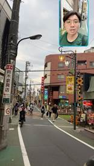
Headed out at past six because it’s good to get a breather from that one hour of work I put in!! Met Carolyn at the iconic Shibuya Scramble. Also heard about her 2 year COMPLETE LDR during Covid and her situationship in august prior to college. She insisted on paying half for the food even though I ordered the more expensive prawn broccoli rice below omelet rice and hers was just the basic meal. I said this doesn’t make sense and she took the chance during bill at the counter poured the 4 extra like 10 cent coins into my bag.
29-June-2023 Thursday ☀️
Hiiii
7:40am my brain was feeling like it’s in a hangover. Wrapped myself in blankets until maybe 7:48am and went to heat up the remains of that sweet and sour pork and rice that I packed from yesterday lunch.
I just wanted to sleep for another hour hahahaha. But decided that I needed the time to prepare Japan whisky material and type out things.
Also need to throw out my combustible trash.
Entered Ikenoue at 8:15am
Got a seat on Ginza line train 8:28am
Prepared for the meeting at 10am because there’s a few market trends I did not find yesterday. (Or did not have the heart to scour the Internet for). I filled hot water to cool it down. And saw that my mentor sat opposite me (with a divider between us) and was feeling a little apprehensive.
Was whatsapping Cameron to arrange for the time and location to meet. Took a leaf off the Anzai and Asai book and went back to Yorokobi 歓 which sells Hokkaido seafood lunch sets!! It’s a complete meal (too little for me) that costs exactly 1000¥ so there’s no need for coins and cards or whatever just a note.
So we met serendipitously at the crossing over to the restaurant (well not exactly but I was previously worried about losing contact with Cameron because my WhatsApp isn’t on the phone with data, and then I spotted him coming in from the left).
We had a very good catchup where we mainly talked about his Cambridge housing and Harvard housing. They had a cool system whereby in 2nd year they choose the rooms one by one, and it’s random order BUT in order to counteract the inherent unfairness in ordering, they will REVERSE the order of choosing in their 3rd year. We just talked about all the people we knew from school from Xianli, Kenneth, Chunzhe, Jiahao, Goh Zhijie, Jeffrey, Loi Si Xian, Megan and all these random names I haven’t heard in 3 years. He has a pretty cushy scholar life lined up for him where his PhD is sponsored and he gets allowance every month. And he’s enjoying life and asking if I’m gonna be back in Singapore, I said I’ll be in China (where my heart ❤️ is). Oh well. We talked about classmates who’d had to renounce their permanent residency to avoid National service in Singapore and whether they could step foot in Singapore. (Likely yes.) there is a bit of wistfulness and nostalgia about our secondary school class. And Cameron might come to Harvard next year for the PREIS research program or something because his college is the only one that has such an arrangement with Harvard. Also talked about security issues on campus where tourists and external people are involved..
I think today was one of the best days of work because I felt like I contributed. Previously it was purely excels and my own little compilations on Google doc or PowerPoint and it was in a mess and my motivation was really low. Today although I’m kind of sleep deprived, I was made to just have a hour long meeting with Mr 村上M who’s I guess lower rank than all the other mentors, and work on the same PowerPoint, based on all the information I collated yesterday about Japan whisky and sake companies/exports and whisky market in China and specifically premium whisky from Japan. (And all the other subsets of alcohol.) it’s not like the content is super fun but I got to learn about all the big and small brands and how they taste so this kind of piqued my interest in trying out some of these fruity flavoured whiskies! That have hints of banana mango strawberries and whatever.
I think it’s just that I feel not alone with a mentor doing the same thing as me and being always beside me to answer questions. Previously, I’d be assigned the stuff and I’ll be all polite and yes-sir but soon I’ll lose steam. For today, we actually have a product we are showing to the CEO (cuz he got an email from an Adeline Chia in Singapore about potential whisky/sake日本酒 business opportunities in China and would link up with P&E’s previous clients or whoever). And it was PRETTY SATISFYING to use the align tools that M 村上 taught me last time, to align the alcohol bottles and the text and everything and make sure spaces are justified. And also me using amazing tools like WeChat photo I can directly select the word rather than putting it into a word reader, and this plot digitizer which helps me read a graph in a report uploaded by 申港证券 Shengang Securities. And I made my first CAGR bar graph haha it was truly satisfying to finally use thinkcell. Maybe PowerPoint work creates more beauty than excel. Front end (thinkcell) >>>>>> back end (excel).
I was happy to receive 4 train tickets, 2 each for the journey to Karuizawa and back. I thanked 大妈vibe 大野ohno-san for her help in purchasing the tickets (it’s her job but she’s a nice person was explaining stuff gently to me!) Took a photo of the tickets and posted them on Instagram. (I become insanely efficient in doing these stuff when I’m working with a mentor right beside me because he’s also working on slides, though he had moved on to a different one.) based on some of the stuff he wrote, I realised that some content was kind of redundant and so I did not keep everything he wrote. These people can’t really speak English but they know all the words because they crammed for exams haha.
Also incredible my iPhone remained at 84% even at the end of the work day, without me charging it.
I reached 高田馬場takadanobaba and it was quite bustling!! Saw a new bookstore I haven’t seen before. Anyway it became hot really fast. A restaurant called Stamina with meat and rice buffet caught my attention. Perhaps I will try one day. I saw that Shao Chi and this kinda sharp nose kinda Malay looking guy called Rhys were going to eat the grilled meat. Luckily the shop could seat all of us; they had a confusing process where we’re supposed to self collect the meal and meat and rice from the window but we just didn’t get the notification on the tablet so they had to shout for us to go and get it. Shao Chi was always nice to get it.
Spent ¥1320 on dinner hmm. At least I had a student deal! Also this is separate from student deal but every month on 29th it’s like a meat promotion (ni二ku九= meat in Japanese) so we get 50% off the wagyu! Amazing! ¥740 for 100grams of marbled Japanese beef is really good!
Of course there’s so rice so I have a set meal that was like ¥540 which is honestly incredible. Then we pay tax.
I haven’t ever met these Waseda people before but I was being funny and very chatty about food and how bad America is and asking about Singaporean food here and using all the Singaporean phrases (gelat for instance describes when you eat until 腻了 for any food). It was cool because we sit in a 3 times 2 configuration and just faced Shao Chi, but also had singaporeans on my left (one of them had lived in Boston for a year when she was young). Then Michael, Rhys and Cheryl went to Donki while Brian took the Tokyo Metro and I took the Japan Rail to Shibuya and back home.
Insane insight from Shao Chi was that he already submitted the name of he and his girlfriend for a BTO. A Built To Order flat is one that you can get if you marry your (opposite gender) partner before the flat is built and you guys get a brand new government-subsidized flat. Apartment. A little incentive for couples to stay together. Then if you don’t stick together as a couple you won’t get that brand new house that is newly built haha. So Shao Chi BTO’d with Ashley.
Also we laughed a lot which made it a great meal too. I probably ate 200grams of meal, 1.6bowls of rice and a bunch of furikake sprinkles, and onion slices and seaweed miso soup. Great meal all round for SGD13! Next time I’ll go and eat the lamb meat. 🐑 Sheep and lamb are not reared in Japan so rarely would people choose to eat them - they are imported mostly from New Zealand or Australia.
Got home showered and realised I did not bring in my bath towel. For the first time in my 19 days here in Japan haha.
Total spending: 2320¥. Plus rent and utilities 35USD.
30-June-2023 Friday ☀️
Good morning at 7:41am followed by 9:39am (to see that M, 村上, messaged me at. 9:38am about holding off the English translation first).
早上去吃了几小块三明治（蓝莓酱、虾仁katsu、土豆萝卜、吞拿鱼、鸡蛋）配热的柚子茶，然后两个橘子。it’s the set on the top right corner and altogether it only cost ¥582. A popular sandwich shop. There are always about 20 to 30 types, all of which are affordable and delicious.

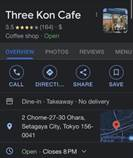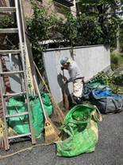
Only bad thing is the inner room has smokers and the shop always has lingering cigarette smells but it was also more like the smell of burnt stuff. Anyway, I would go again since it opens at 7am! Ummm I contacted M 村上 and I 今西 today and was a bit apprehensive the 2nd one would ask me about the progress of the report for overseas Japanese companies ummm. But we only talked about my self introduction for the monthly meeting next Monday held at 9am at Meeting Room B and my current slides which I tried to improve a little.
Basically I kept him online for 15 minutes 5 seconds (from 11:54am to 12:09pm) because I was trying to download the PowerPoint for self introduction from my personal laptop and my personal Dell XPS is always wonky about OneDrive having not enough storage space for all my documents so a red x ❌ icon shows up at the bottom left corner of the icon and sometimes these files i could open they sporadically refuse to open so there was a bit of awkward silence between me and I.
I suddenly remember how Mr Faizad who taught general paper who use the word 感觉 and he sounded very Chinese haha.
Had a pretty good conversation with the chef/owner who opened the shop in 1985. He asked me what I’m doing in Japan and praised my Japanese and whether I’m returning to America. When I ordered hot water he asked if I’m gonna eat medicine HAHA I said it’s just a habit (he probably wouldn’t want stains in his ceramic cup). Food was so good and look at this
best furikake with seaweed bits and fish flavour.
After this great meal I walked across to Family Mart to get fruits and tomorrow's breakfast bento!
¥1, 508
2023/6/30(金) 14:51
Meeting Andrew Yap for dinner! Gonna make him come over to try 三由 soba at 池ノ上station so I don’t have to venture out, and he will also take some photos for me using the insane mirrorless camera from Blake.
Update: he is overpowered by his friends and made me go over to some random place that is “near Shibuya” but have to spend extra money taking the train Welp. At Azabu-Juban station 麻布十番 or something. Passed by Roppongi for the first time
Today I got the marble out of the ramune glass bottle (by smashing it on the floor) and also threw out the plastic bottles I’ve accumulated over 20 days because plastic bottle collection day is set for tomorrow where the trucks will come in.
Ryan really wanted that good pizza Sanvoy Tomato Cheese and it was decent! We were treated to it because man is just rich.
We eventually ended up at this Chinese restaurant called “新香饭店” which had an interesting flavored Mapo Tofu which tasted kinda like tea leaves and then injected with peppercorn.
Me at Akihabara Monday Premium Hotel holding a glass of green tea サワー drink！
Andrew shared about his experience meeting Angeline who was his classmate from 2018-2019 and is studying CS at Berkeley and broke her scholarship bond (worth $500k)
Right side of heart aching at 11:49pm. LOL hmmm baited by the mystery. Also like I felt the need to stay and talk to Andrew and play with him and watch Alice in borderland. Ended up drinking a sip of that green tea drink that’s 2 dollars,
then the whole train fiasco happened. I did not watch the stations for Yamanote line (green) and I somehow ended up on the JK Line at Kawasaki im so confused by how the train got diverted so I’ll figure it out.
What’s mysterious was the man in white flowing pajamas walking out of his home at 1am towards the road I was walking along and he turned back and walked home.
And the weird ding Dong I heard from my devices when I stepped into my room.
There’s always this flip flopping.
I dislike my indecisiveness because at one point I could decide to do something and then at the next point someone says hey let’s do this and then I’m YOLO ok let’s go.
Andrew mentioned that his mother was forgetting ingredients to the soup she makes for dinner, for her bread, and forgetting names of people and places.
I think RI kids have this personality of always on the lookout for the future and thinking through details. I said his father is in the best position to help because he is overseas. At the dinner table, including with Ryan but not so much with Matthew, Claire and Crystal, we discussed topics of affirmative action and about wagyu and their Kyoto trip.
Bro I’m in shock I missed the last train from Shibuya back home. It’s 00:21hours and I’m just on the last possible train to Shinagawa. All other trains from there have departed. Massive L but we learn! I’m forced to contribute to Japanese economy by taking cab.
i was in shock when google map told me i need 5 hours to get home（first morning train departs at 5am). This is quite the experience haha.
I walk out of Shinagawa 品川 station with some disbelief and line up to a bunch of commuters also getting a taxi home. Bro.
That’s pretty crazy.
It’s guys in tshirts, pretty office ladies with bags or luggages, lo and behold a guy with socks and sandals.
The ride cost ¥4800; i hovered near the family mart then walked back because the roads were too narrow for the taxi driver.
Slept past 2:30am maybe 2:40am. L. Tired.
1-July-2023 Saturday 🌧️ ☔️
Jazz 24 playing on the speakers at Three kon Cafe. English Channel!
See a couple dressed in the same faded blue outfit and they’re using their phones while being 10cm away from each others’ faces.
Sent a sad face at 1:29pm. Am very ashamed for yesterday night not caring about consequences and loitering out late. Could have encountered serious danger.
 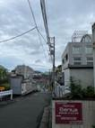
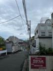
Meeting Andrew Yap again in the afternoon. We might tentatively go to Shimokita.
So today was very interesting. We actually spent some time sitting in the bookstore which is near the train station and I spent ¥740 yen on a comic book that was for my cousin in Shanghai. And then we went from the bookstore to this place called Fuji soba which basically sold like soba noodles and katsudon and pork curry and that sort of thing. So I talked about Jay Hong and then Andrew started talking about his parents and there were a lot of stuff that have happened that I haven't heard him talk about before and we were like pretty much 100% honest with each other about like stuff happening within our families and like you know you know things that happen in high school that we might not tell other people that happened. And then we were supposed to meet his four other friends back at the daiso shop and the foreign friends were named Claire Matthew Ryan and Crystal but eventually some of them wander off to get clothes from Uniqlo and then me and Andrew were like we're not going to buy anymore clothes for spend enough so we went from that lunch place down the street to ABC Mart and by the time it was raining a little bit and we had also taken a few photos using the expensive camera and Andrew was nice to pick up something that one with the process by had dropped so we would taking photos against the the arch that had a specific sign that was labeled Shimokita shopping street.
I think by this time his whole group was really tired they went from Kyoto to Osaka and then from Osaka to Kyoto and then they cycled under the hot Kyoto's son two days ago and then this morning they woke up early to go to team lapse which is a specific attraction in Tokyo that has water and you have to wade through the water.
So actually this bunch of people are probably really exhausted and have a little bit of heat stroke from their experience traveling in Kyoto and moving around between so many cities of Japan so actually the rest of Andrew's friend group which he met from church they all headed home at about 4:00 p.m. so that leaves me and Andrew and I was just picking my shoe and then all the black shoe sizes was too small and those were the only pairs left in the store and then I came upon this shoe that was like 5489 yen and that was a really good price for a nice gray Adidas show so eventually I settle on this gray color even though it might not go where very well with my work outfit but I think I'm going to try wearing these pair of shoes to work and also wearing it just to hike around and I eventually bought the shoes but it was so close to text exemption but I think they purposely made it such that it was slightly less than the tax amount so I couldn't get tax exemption which would have given me like a cheaper price but it's fine.
So after 4:00 p.m. Andrew and I walked back directly home from the shopping area which is only about 1 km away and then we took some photos around the way and then I just share with him the beauty of Japanese architecture and we talked about all sorts of random stuff and about like his upcoming trips and then I also asked him if he could help me bring my mom's jeans back to Singapore which I had accidentally kept in my luggage on the day she had covid and we were packing on stuff back from china. And then I stood outside my apartment while Andrew sat inside the apartment with the air conditioning because I talked to my Yiyi.
And then Andrew and I played at least 10 meters of ice rage which is our go-to game and which is a game we have played already in four different countries you know in these four specific different contexts and then I was debating between eating Japanese food or Chinese food for dinner and Andrew prefer Japanese food so we went to that place I had told him about that I had already gone to like three times in the place I have visited on my first day and we ordered this thing that caused 1,100 yen which is the set of katsudon and sober with soup and that was something that I know was going to taste decent but it does not have as much vegetables as what I can get with the Chinese food restaurant so that's the place I will visit tomorrow. From the restaurant we actually took some amazing photos of the street view such as a case of vending machine in case the traditional Japanese lantern and of the train tracks and we were standing by train chase and I got a few good shots in some of which I think we're good for like profile pictures because the camera was so high quality and they were moments where we were taking photos well cars were trying to pass through or like the red light was signaling that the train is going to come and run over the train tracks and we're like take take the focus really fast and eventually we escaped to the side of the train track I feel the need to use the bathroom and then we went to use the bathroom inside the train station and also I had to check if my mom's jeans were actually hers so Andrew had to dig through all the contents of his back and take it out I was sorry to trouble him but I took the photo and verified with my mother that it is her specific pair of jeans and after that and he continued to tell me about the apologetics that he has been doing research on and I told him about the case for Christ book by Lee strobel that Amanda we had given to me so that was something he wanted me to read and then we also talked about like usage of certain online media and its effects on the brain and religious as well is not religious views towards bodily communions. We actually passed by the Chinese restaurant that I really liked but we decided not to get a second set so we only got one set for both of us which made me end up eating sesame biscuits at home. Overall today I'm satisfied with my purchase of the shoes and of the 550 Katsudon in Japan.
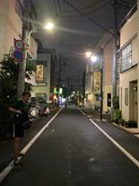
Total spending
7,879¥. Oof. A bit higher than average. I think if I add rent and utilities it totals out to 70.4USD. not too bad.
Slept a little late perhaps because I woke up after 11 in the morning. Read more Norwegian wood.
2-July-2023 Sunday ☀️
YOOOO sun is out and made me wake at 9:07am. I previously woke at 8am. So I’m like laundry time! I had 2 pairs of socks that fell into the bushes haha and then the white collared shirt I was sundrying outside. And plus the 6 pairs of underwear.
I put in 2 tide pods into the washing machine and put all my socks and stuff and started washing yay. Please let the sun remain here!
I also asked around if people had extra mattresses or futons and I thought about plans to put someone in the corridor hallway.
21 rmb = 430 yen breakfast!
When I headed out of the house at about 1:40pm, there was this man who sort of greeted me but my listening skills were too noob to figure out what he was saying. His name is Yamamoto Takuya 山本卓弥 and he said something about the neighbour’s house grass growing into our building (代々木上原ヒルズyoyogi uehara hills). I’m like okay sure I thought he was a neighbour. But yeah he’s kinda wearing business formal in this insane heat. It’s 32°C. Also I thought about my underwears that were hanging under the sun and decided it’s important to just keep the underwears there and hope they do not fall! He apologised in a usual Japanese manner and I left not knowing what’s my role in this overgrowing grass.
I had put sunscreen and also brought out an umbrella to block me from the sun.
Then I decided I wanted to try the fried rice and gyoza at the usual Chinese restaurant that I’ve frequented a few times (and 3 times I went to discover it was closed), and I ordered the one that’s 1050¥ after oscillating between white rice and fried rice.
野菜aka my tomatoes
¥198
外8 ピルクル400
¥205
小計
¥403
(外税対象額
¥403)
外税
8%
¥32
買上点数
2点
合計
¥435
お預り
¥450
Purchase I made for my cherry tomatoes and first Yakult bought in Japan!! It’s cheap like 20cents per bottle if I divide it out. I received a bronze colored 10¥ coin and a 5¥ for change.
Tried to sleep and had some lucid dreams passing through my head of some cartoon animals talking on the bus. Very SpongeBob vibes.
Also read a little bit of M. Keyed in a bunch of receipts and scanned them and then threw them away
 the chef
focusing on his cuisine making was truly a sight to behold .
the chef
focusing on his cuisine making was truly a sight to behold .
I tend to stare at people around me for a few seconds.
There was this woman who’s probably a decade older than me who called me onii san or oniichan to remind me to take my omelette that the owner had fried for me hehe.
2 Quail eggs, 青椒，猪肉，3虾，木耳，白菜，胡萝卜，火腿片，芹菜，大蒜
were the ingredients
I went home first and by 7:30pm I was heading out. I felt the need to go to the gym and Junxin was nice about it. Though he didn’t pick up my call at first. It was so windy today my hair was pushed back to the maximum revealing my hairline.
3-July-2023 Monday ☀️
1:40am neighbour was making weird noises. There was a steady drumming beat, as well as furniture being moved against walls that sort of thing.
9am sean joel Selwyn arrive in the morning.
I wake at 6:30am, saw the sun bright and high and panicked thinking I overslept. When I saw I had another hour to sleep I drifted comfortably back to la la land. Woke and tossed around for 10 minutes before leaving the bed. Microwaved the mackerel/mashed potato/broccoli/carrot/radish/black seafood thingy
Hide my keys and hope that no one else takes them. I arrive at Ginza at 8:55am when the meeting is supposed to start at 9am. Big red flag for me. Also I was so scared my new shoes would get stepped on.
Also, during the meeting at the start I did a 5 minute self introduction. There was no time for question and answer.
忏悔模式 because I raw dog it like every presentation I do and I did not give a shoutout to my mentors.. Nor did I mention consulting work at all and what I hoped to achieve out of the internship. Nor did I mention the specific skillsets I hope to develop and hone 磨き続ける. It was kind of light-hearted because it’s such a kiddy slideshow compared to the usual P&E standard which always has the exact same format. I think my presentation was a breath of fresh air in a sometimes suffocating homogeneity of Japan. 池本さんikemoto-san was smiling and nodding at me encouragingly.
Apparently I am supposed to buy a pair of gloves! For golf on Friday and Saturday with these finance economics bros.
🐋🍣🐋🍣🐋🍣🐋🍣
Dinner there was whale meat. We wanted to eat Miyachi 宮地 Teppanyaki which was inside the Toyosu (豊洲) Foresia building but Selwyn does not eat beef and that restaurant only had beef.
We walked over to the restaurant that is right beside that which is called Aoyuzu Tora 青ゆず寅 which literally means green yuzu tiger or something and spent a total of ¥11700. 銀だら is the silver cod which I ordered which had just the right amount of healthy Omega-3 fats and was well-seasoned in a light sweet soy sauce.
Here’s a table for the food we had, the cost and photos of them.
|
Food |
Cost |
Review |
|
|
(夜)寅御膳 the tora dinner set with tempura and sashimi |
￥2,300 ×2 Sean Selwyn |
||
|
银だら定食 (mine, silver cod dinner set with pickles, seaweed and beans, miso soup and rice) |
￥2200 Simon |
|
|
|
刺身定食 (sashimi dinner set with pickles, seaweed and beans, miso soup and rice) |
￥1,760 Joel |
? |
|
|
Kujira (Whale) 🐋🍣鲸赤身：RED MEAT! |
￥1.080 |
First ever taste of whale, a bit oily meat that is a bit gamey with an earthy aftertaste, kind of like venison flavor |
|
|
Kujira (Whale) 🐋立田揚げ |
￥1280 |
It has a more translucent batter |
|
|
富士の惠一合 |
￥780内 |
Very fresh and smooth alcohol for beginners, it was also the cheapest, we almost ordered something that was double this price. It tasted very much like Korean makgeoli 막걸리 rice wine and I imagine it’ll be great served warm! |
|
We had a little walk around the Toyosu area and also went inside this restaurant. As usual we end up waiting for Joel who had wandered off to a deep corner of the restaurant.
4-July-2023 Tuesday ☀️
Bruh first time talking to these dudes the whole day and not recording anything here.
Retroactive recording of what happened on Tuesday.
On the way to Ueno, I found this all-you-can-eat Yakiniku buffet place called Stamina Next!￥2064 buffet lunch with a time limit of 90 minutes, which we eventually exceeded by 15 minutes because Mr Lam Cheng En Joel Jerome Tan Kah Jesus Kee Christ was getting matcha ice cream, shaved ice with an assortment of syrup, square cakes and all sorts of desserts. On the other hand, I recognise that oranges have fibres and vitamins so I took 2 plates of sliced oranges! I finished off most of them while Selwyn and Sean took maybe 1 or 2.
We spent the time before and after lunch mostly just walking around the Ameyokoya Shopping Street, where Chinese snacks and barbecue skewers were disproportionately represented.
 Yamazaki!!!
It is literally some of the most expensive whiskies on the market. We got like
10 millilitres of it for ￥790.
Yamazaki!!!
It is literally some of the most expensive whiskies on the market. We got like
10 millilitres of it for ￥790.
Then towards the evening we drifted from Ueno to Akihabara. We did a good round at the park in a beautiful sweater weather where I didn’t break a single sweat:
I seemed to have become the travel guide but there were many questions they asked about specific landmarks that I could not answer haha. I just randomly found a ramen restaurant not too far from the Mcdonald's/Big Camera building that we entered; it was called Bankara Ramen which had many outlets and there were many maid posters plastered by the door with their signatures and with mementos that they had left behind. I saw a set that was exactly ￥1000 and i bought that because it has both ramen and rice. And I was pleasantly surprised to see that the ramen came with 2 chunks of meat, rather than just one!
After dinner, we walked to Donki to get essentials. I got a male shampoo thing that I have been wanting to try - it cost ￥770 after taxing the original 699, and Joel wanted to buy Jinro soju ￥
Total money spent: ￥2064 buffet lunch, ￥880 for Demon Slayer Amulet made of wood
Probably 4000¥
*Fujia adds: also got a very rude message from Sean that i saw tday n i was very disgusted by what he sent and didnt find it funny. I guess its a message that made me literally 生理性不适. He apologised but does he think it’s wrong? Nope. Talked to simon abt it; glad he took it seriously but still worried abt him becoming like his bros.
5-July-2023 Wednesday ☀️
Late night when Selwyn reached over to the charging table thus crossing over Sean’s chest, Joel took the chance to then sit on Selwyn and start gyrating his hips. [50] There was a lot of accusing and f words being thrown around and exclaims of dismay before everyone fell asleep. I took longer though and kept flipping left and right, never feeling comfortable. [51]
Woke at 7:16am and Sean somehow awake asked me if I’m late for work. I said no my alarm hasn’t rung yet. It was getting cold with the air conditioning. I had previously set the aircon to 25°C on dehumidifying mode, but Selwyn got hot at maybe 1:30am and also could not stand Joel’s snoring and reverted to the same sleeping configuration I used with Sean on the bottom mattress (my feet at his head instead of both heads aligned together).
I saw the same milky ginger short hair cat I saw many nights around here.🐈 I tentatively went closer while stretching my hand forward in a friendly gesture. It hovered around the glass bottle crate in front of the big metal recycling “coffin” and I got to stroke the cat’s head!
Okay! I decided to walk to Three Kon Cafe for breakfast. I bought a kiwi strawberry sandwich since I have not had both fruits. It was a lot of cream, also for the drink. It was about 274¥.
Tasks
-Finish up the CAGR column tabulation for the 44 companies under Toppan
-Continue research and try to list out all the factors that make Jpn overseas ventures successful
-12:30pm lunch with Suzuki, 3pm meet with I about the overseas venture report
-No night plans probably just hang around until the boys come back
 at
10:56am I did an amazing web result search to solve my problem where I found
out my mistake and why even though I typed out a formula it did not return me
the correct answer. Basically I had to set the category to General rather than
Number which for some reason just gives me an integer.
at
10:56am I did an amazing web result search to solve my problem where I found
out my mistake and why even though I typed out a formula it did not return me
the correct answer. Basically I had to set the category to General rather than
Number which for some reason just gives me an integer.
Messaged Ippei Suzuki! 鈴木一平 is an interesting fella. He was born in Kanazawa Prefecture but has lived in many places. Here is the okinawa cuisine restaurant we went to and then it is about 12SGD.
v
Ok I eventually ended up eating Sichuan food at Hong Kong Tei Akasakamitsuke. Sichuan boiled red pepper. It was ¥1980 total and the Japanese native from Asakusa who first served me spoke really good Chinese. I took a almond soy candy which was a little too sweet so I spat it out.
After that, I went to BIc Camera to pay a golf glove - i specifically asked for the cheapest - and it cost 950¥.
2023/07/05/20:11
レジNo117/0605
取引 No6295 販売員 36045/沼澤. This guy thought my hand was a size 24 or 25 as my hands were bigger than his, but turns out I'm only a size 23, and I could fit into a 22 glove too.
I just walked around and also asked about the Oppo Pad tablet which I am pretty much set on buying! I asked the relatively young salesman about the specifications of the other tablets nearby and how they compare and the Chinese brand versus the japanese brands, NEC and TCL.
クレジット取引合計
¥950
I met the boys at Shibuya on the Kichiōji bound train heading towards home near car 5 and before I entered the carriage, I saw a man sitting like a rag doll on the floor with vomit covering his front.
|
東京メトロ 領収書 |
2023/07/06 20:39
I also went to top up 1000 ¥ in my card at Nagatacho ながたちょうstation which is along the はんぞもん purple line (arguably the nicest colour!), and here’s the receipt for that. It’s unbelievable how much I actually have to spend on public transport in Japan. I have probably spent over 48000 Yen just on the subway within the city, with an average of like 700 yen a day for the past 52 days.
6-July-2023 Thursday ☀️
Hang my clothes actually just the avocado and red underwear out.
We went to eat sandwiches and have drinks at Three Kon Cafe. I spent about ¥731 on my chicken/potato salad sandwich, strawberry cream and 🥝 cream sandwich (¥250 pre tax) and my caramel milk tea which was more like creamy Hershey syrup coffee that was way too sweet. Well. One of the most amount of processed sugar I’ve had in a while, I remarked.
We mentioned our secondary 3 and 4 life and Selwyn being the ever candid and honest dude talked about how coming from a class 1E 2E that is branded as being not as smart, Simon and Austin from 1L were his first friends and he missed us sitting together in a row of 3 at the back. I do recall that it’s really fun and back in 2016 when we first met we’d play games like Clash Royale and Pokémon Go when it was first released.


I am going to attend this reception for Harvard Japanese stuff! First time I am attending any official Harvard thing outside of Harvard, apart from the pre-college meetups which were not really official.
Before that, I decided to buy an Oppo pad from Bic Camera Shibuya because it’s ¥39400 which is probably ⅓ the price of an iPad and I love the android capabilities.
I eventually got it for around ¥35500 because it was tax free! Amazing! )update: my mother did not think so and said I should have bought it in China. My girlfriend also found the prices to be much better in the Chinese market.
Being another hot sunny day, I purchased the usual ¥74 2 liter bottle of water from My Basket, one of the best convenience stores and that is a 6 minute walk from my accommodation.
The only highlight of today would be the free night event that featured the Japanese foreign minister, Dr Fujihira who is one of the professors from Harvard that interviewed me and who is also the academic advisor of Ayumi and a whole bunch of Harvard kids.
The event is going to be held in the evening. Keidanren literally translates to economic groups association. It should not be too far. I hope there is good food since it has an entrance fee of 5000 yen per person for non-Harvard affiliates.
2023年7月6日（木）17:30時～19:30時 July 6, 2023 (Thurs.), 5:30-7:30 PM 経団連会館 2階 経団連ホール 東京都千代田区大手町１－３－２ アクセス: http://www.keidanren-kaikan.jp/map.html Keidanren Kaikan 2nd Fl., Keidanren Hall 1-3-2, Otemachi, Chiyoda-ku, Tokyo Access map: https://www.keidanren.or.jp/en/profile/map.html
at 3:50pm
Went back, talked to Selwyn about Taiwan and about his ex.
Got out of the house at 4:48pm after bringing in my underwear and towel.
Asked Selwyn to help me keep the rest of the clothes I’m basking in the sun since he’ll still be at home.
¥178 deducted from my card for the ride from Shibuya to Ōtemachi.
I entered the grand cube building which was opposite the building I was supposed to go to and there were kind security guards who guided me. I saw so many suited people that looked like bodyguards. 👀 and they're older than me but guiding me like a hotel concierge though their suits and jackets and shoes look so expensive.
This foreign ambassador Hayashi Yoshimasa says that China must abide by
He mentioned in passing his dialogues with Li qiang wang yi
China cannot
Beatle songs reference made
Now is the time that the true test of diplomacy is being made.
Insight of professor Reischauer
In the stormy seas of this new era
Harvard University puts together a group of talented researchers practitioners and students together to think of solutions
Captains of question to overcome our challenges
Continues to be a source of pride
Harvard graduates 3700 from Japan
Total of 3900 from China[52]
And total of over 7000 from United Kingdom
Son of Ōgata Sadako! This guy is from 1979-1983 Harvard college. And he married Miki the next Japanese person to get in and he ended up marrying her.
Miki CEO of Microsoft Japan. “This speech is not
Ōgata Matsusako
Japanese cultural society in Harvard established.
Ezra Vogel was active.
Program on US Japan relations set up in 1980.
Shin Fujihira also here! He interviewed me.
New Harvard president Claudine Gay
Haitian immigrants as parents. Got a PhD in government from Harvard.
Wow I saw Alexander Parowski or someone who’s on the same HBS program as Shaina Adams.
Then there’s the 2 Japanese people who were at Harvard for the research thing.
One
His father sekiguchi.
But the first woman I talked to was Marcy who married a Japanese man in Japan.
She’s from Boston and graduated class of 1987. She has no kids. She works with the agricultural ministry of Japan and looks at fisheries and the chemistry of rearing prawns. She also teaches a Singaporean student at Tokyo University whose name is Shaohan and she immediate spotted my Singapore accent. She’s so old that she didn’t know of this house called Pforzheimer because it was formerly called South House. Also I realised after the event that people probably noticed my place of origin based on my name tag (which they stingily collected back after the event).
I took the most photos with 欧阳嘉诚 who’s half Thai half Chinese. His name is Gunn Chaiyapatranun. He was accompanied by his friends from the IUC program which is a 2 month Japanese language program, Tabreya from Georgia Atlanta and Ahn Hongmin 안홍민 from Seoul, South Korea.
They’re interesting people. There’s a guy that knows Ayumi who’s studying philosophy and AFVS the film one and he wants to be a director. Takenoshin yaza is his name I believe. And with them was a Yura person I didn’t talk to.
I talked briefly to Yoko Yamada who lived in Winthrop house.
She’s from Tokyo but doesn’t know Ayumi. Also um the state of her skin wasn’t great but she seemed nice and demure.
So these are the Harvard grad school kids!
Called Yiyi twice yay. Reached home at 8:30pm. Had good conversation with Selwyn who had bought dinner from the convenience store, chicken breast and creme brulee, and sushi set.
For me I had a bunch of fish, only a few sushis, pork, beef, seasonal vegetable, some salad rolls.
After I went home, I chilled by myself for a while then at 11 pm plus I decided, upon Selwyn’s suggestion, to walk to the nearest convenience shop called “My Basket” and purchase a bunch of carbohydrate laden bento and おにぎり🍙 for my breakfast tomorrow, considering how much more expensive the rice sets at Tokyo station would cost and the early morning train I have to catch! The mackerel pork vegetable bento cost ¥430 approximately and the seafood mentaiko明太子 rice ball cost ¥172 approximately, totally up to ¥602, as shown in the receipt below.
|
まいばすけっと |
This was the night of the soju and the boys being very hyped and Selwyn being sad and recounting all the memories.
7-July-2023 Friday ☀️ sunny
First Shinkansen ever in my life, at 7:58am. Great gratitude to Ohno-san大野さん for booking my tickets, and also reminding me that one of the tickets is used for taking the JR Japan rail Yamanote line from Shibuya to Tokyo station. Reminds me of the Erie dude I met yesterday who studied engineer Harvard ‘89 and he’s doing the magnetic levitation research! He had a brown station on his plait tshirt so that’s very STEM dude of him.
A little post-traumatic thought process of seeing Google map ask me to “stay on the same train” and worries of the train line diverting to somewhere that is NOT Tokyo station and then me missing the expensive Shinkansen train! Please don’t let me leave this line. That’s why I’m tracking every stop, in case I make the unsalvageable mistake of just taking the train blindly.
Gotanda 五反田
Ōsaki
Shingawa
JY 26 Takanawa Gateway 高輪ゲートウェイ
JY 27 Tamachi 田町
JY 28 Hamamatsuchō 浜松町
JY 29 Shimbashi 新橋
JY 30 Yūrakuchō 有楽町
JY 01 Tōkyō my destination pleaseeeeeee I beg you I would not want to miss this. I’m even scared of falling asleep and then sitting on the train till somewhere else.
|
NewDays NDミニ 軽井沢 電話 026-742-0192 長野県北佐久郡軽井沢町軽井沢11 78 長野県のNewDays で アルバイトしてみませんか? 「ニューデイズバイト 長野」 で 検索! クレジットお買上票 (お客さま控え) 2023年7月 7日 (金) 9時14分 POSNO.001 レシートNO.01686-173384 軽井沢メープルラングド ¥864 H) おい茶ほうじ茶34 お買上げ合計 2個 ¥149 ¥1,013 (8%対象商品 (消費税8% 合計 ¥1,013) ¥75) ¥1, 013 クレジット お釣 ¥1, 013 ¥0 ※印は軽減税率対象商品です。 カード支払明細書 お取扱日 IC/MS識別 カード会社 会員番号 有効期限 端末番号 伝票番号 处理通番 承認番号 取引区分 516240XXXXXX4815 2023/07/07 IC ユーシーカード **** 6009421268101 64900 027715 0092255 売上 支払方法 利用額 一括 ¥1,013 ご署名 (SIGNATURE) サインは省略させていただきます。 ARC:00 ATC:00070 No.00 AID: A0000000041010 APL:Debit Mastercard 財布等にはさんで保管頂く場合は、 印刷面を内側に折り保管して下さい #:3300005 |
Ending: I did not miss it yay
Here's the receipt for the first purchase I made at Karuizawa! かるいざわ。this shop is called new days and it is right
¥933 for the Karuizawa special maple box thingy! And Then a hot houjicha leading to a bill of ¥1033.
Here’s the receipt for that purchase made at 9:14am, in a sleep-deprived but definitely rational and sober state of mind. ほうじちゃ cost 149 and the Maple Langue costing 864.
Then I started eating my delicious food that I bought at My Basket last night: 602¥. With the price ratio of 2:5 for the mentaiko seafood onigiri which is the rice triangle with a delicious filling, and the ginger stir fried pork bento with mackerel fish which i opened at the Aomayama golf place and started eating, to the laugh of 何弘毅。His parents came from Beijing to Shanghai but migrated to Tokyo in 1980s. Somehow he still has dual citizenship don’t know how. And he did psychology and communications at Boston College and speaks the English of international students.
The fried rice was kind of mid and tasted dry. But I enjoyed the egg drop soup. Also heard so much random chemistry terms. Thanks to the over technical STEM male lunch conversation where I sat with Sagawa, Ishii and Ekawa my man.
This guy Uda said my shirt was sexy because of the skulls lmaoo everyone would think I’m wearing flowers on my shirt at first
His name iｓ 卯田 泰基。
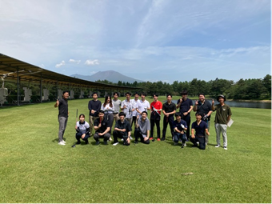
Hotel is so good I had a nice hot shower and could hang my clothes around and everything
the schedule did not include the insane karaoke session that happens after dinner.
Wow ogosso is super fancy
this is a superinsane meal！
This was a truly insane meal. The ingredients are often special to Karuizawa. I had sashimi, ratatouille, sweet and sour pork belly (黒豚), some kind of bamboo cold fish, some squid tentacle dish, some western style sweet liver paste on top of biscuit thing that was savoury
Horii堀井san really nodded and pursed his lips in approval like Yang Yi and had an extremely generic banal response to whatever Shimada CEO said when he came to my table. Shimada also talked to me twice about this whole golf thing and how they’re letting me experience it.
Hahahah ceo chief entertainment officer is the title claimed by shimada at 8:30. Pretty wonderful and smart jokes being made by this bunch of elite Japanese men, with the 2 female administrators quietly at the side and making announcements when necessary (Ohno-san had to beseech everyone to PLEASE listen to her because men + alcohol=noise and raucous behavior).
 This guy definitely looked
like a movie star and I thought he’s not the employee but rather the wealthy
son of some of the staff present. To my surprise, his name is 中山雄挥Nakayama-san and I had a very
brief conversation with him while waiting for the taxi. My impression of him is
like a gang leader who is cheerful and also very very cunning. He has a highly
intelligent gleam in his eyes, tourist-like sunglasses propped up against his
greasy hair and a chain necklace that is giving Young Punk. (I later learned from
Feng Shan Shan that he has two kids at home! And he's probably not as young as
he looks.) But all these young managers are doing very great.
This guy definitely looked
like a movie star and I thought he’s not the employee but rather the wealthy
son of some of the staff present. To my surprise, his name is 中山雄挥Nakayama-san and I had a very
brief conversation with him while waiting for the taxi. My impression of him is
like a gang leader who is cheerful and also very very cunning. He has a highly
intelligent gleam in his eyes, tourist-like sunglasses propped up against his
greasy hair and a chain necklace that is giving Young Punk. (I later learned from
Feng Shan Shan that he has two kids at home! And he's probably not as young as
he looks.) But all these young managers are doing very great.
We went around Lawson to buy stuff: i spent a total of Talked to Yuta Sueki! He has a little good voice and I was just shocked by the number of good singers within the company.
 My man Asai Keisuke who is a
fellow Tenor 2 singing with his whole heart and what he practised at solo KTVs.
I was remarking to Fu-san封さん
that Asai is really handsome (he has a youthful idol and wistful look with that
tussled Japanese hair).
My man Asai Keisuke who is a
fellow Tenor 2 singing with his whole heart and what he practised at solo KTVs.
I was remarking to Fu-san封さん
that Asai is really handsome (he has a youthful idol and wistful look with that
tussled Japanese hair).
小笠原
22:15
Shimada CEO sat down between me and the Taiwanese employee and was like Japanese people are scary and I agree
Quiet on the outside with this insane unquenchable passion in their hearts
I walked with Sueki Anzai Asai (the youthful 29 year old duo who sing and also are working hard on the same project) and Kawaguchi to the nearest Lawson to the hotel (Chisun Inn). I bought 2 yakult which one of them told
8-July-2023 Saturday 🌧️ ☁️
I woke up and felt a need to sleep. I actually woke at 6:45 before my alarm

Goodbye to the wonderful Chi Sun inn!! I think I didn’t leave anything behind.
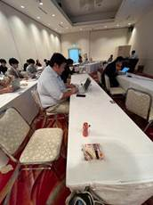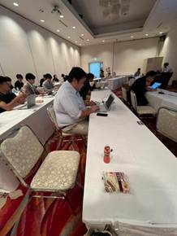
河野 is a remote intern in Hokkaido.
Watanabe Kenta actually plays mahjong. So all the other interns are making their self introduction.
I feel the cool thing is that I, as a sort of intern (unpaid unlike the others), get to come to Karuizawa while the other interns are just working on their own.
未熟者極まりないですが、どんな業務にも謙虚に、愚直（ぐちょく）に取り組みます。
宮城島 光太. This guy is another intern!
Very proud of your hometown: 出身地自慢
FY22 Q1 195.36million to 271.3million in FY23Q1303million
Lol Shimizu was like play hard work hard. Today is work hard.
At 8:48am I see even 木部さん closing his eyes and putting his chin on his hand.
9:05am Shimizu was talking about especially young people can do some Python and Chat GPT. It’s like this hierarchy of power where new employees are of course the lowest life form (besides interns) and then are expected to follow the command of these decade-long employees who are highly senior and unshakable in their position of authority.
研ぎ澄む
LOL this is so epic. 松延Matsunobe-san who was so happy last night drank until he lost track of what’s going on and couldn’t wake up for this meeting. We don't know the specifics but he might have continued drinking in the hotel room.
松延さん
内容を覚えていない
改善に 努めていきたい
警察に捕まった
BIG L he had to apologise to the whole company.
It’s epic I am getting them LinkedIN requests. Katsuzaki san. Eventually Horii san also thanked me for connecting with him on LinkedIn, while I was too sleepy and foreign to comprehend what they were talking about during this more than 3 hours meeting. It must have been the longest work meeting I have ever experienced in my life
Out of boredom and an intense desire to fall asleep in this meeting room in Marroad Karuizawa, I decided to give name for all the consultants in this company. Taiwanese Huang: Gudetama cuz she looks a bit like Gudetama. Then Sagawa will be one of the face masks at a temple. And then Suzuki is the dude from Ratatouille - Linguini, mixed with a rat. Then Katsuzaki Tomotaka will be Lee Chong Wei, skinny dude. Or another rodent. Then I is Tom Cruise cuz handsome. M will be Moon emoji. Shimizu kind of has a underbite and always dresses and styles hair like a village-born tycoon.
Anyway at 11:48am
「愛」とは何ぞや
-only TO give
ーできる範囲で、できるときに、できることを
ー＝恩着せがましくない
「愛」はバランスシートに載っていない
ー企業を取り巻く無形資産
ー強いて言うなら、
ークライアントネットワークかんてい の 含み資産
ー会社の「純資産」の薄外にある「含み資産」
愛は、
ー雄弁さ ＜ 愚直さ
ークリスプな言葉 ＜ 献身的な行動
ー伝播し、しかも循環する
愛された会社 愛された人でなければ、自分が相手の会社や相手の人を愛すことができない
ーお客さんに育ててもらった、という
ー私は自分が先人にしてもらったことを人にしているだけ（場の提供も含めて）
ー良い人の周りには、良い人がいる
愛で満たされた世界に
ー肉食で、「食おう（利用しよう）」みたいな態度では嫌れる
ーだから調子のよい、偉そうなことだけ言わない やらない
ーこの不文律 プロトコルを、村八分的な扱い
長期的に、クライアント（発注者）、オーナー、社長などの人生まで背負う覚悟はあるか
ークライアントの社員、家族、子供
相手から「愛したい」と思ってもらう人間になる
They ran out of budget or something because it was such a stark contrast from yesterday. It felt like a school camp where we had an assortment of packaged bread which were remnants from the morning, and the main course being 2 onigiris🍙one that was sour preserved plum flavored and another one that was some kind of anchovy and fragrant leaf flavored as well as some tiny pieces of black and white preserved radish. This is probably one-hundredth the one-patron price of the kinds of meat and dessert and alcohol that we had last night in Ogosso. During this very pathetic meal, I had a chat with Uda卯田-san the handsome Merger & Acquisition specialist who has rosen to the Manager role about how he met his wife and married her 11 years after they met - they actually went to the same high school and knew each other by name, but only became closer and eventually fell in love during classmates reunion! Meanwhile, Morimoto-san森本 didn’t partake in any conversation I had with people near him - there was a kind of awkwardness in the air and I couldn’t talk to him much for very long. He was in charge of a segment during the meeting where he would call upon random employees like 黄 from Taiwan高雄 and on Anzai his Tokyo University same faculty to answer questions.
After that it was golf competition:
Insert image of all team A competitors
I got 41 points. When we were nearing the hole at course 5, I saw it was 4:57pm and about an hour from Shinkansen so I asked Horii a nice dude to call the coach Iguchi 井口 誉 and we decided quickly to end because we’re not gonna get through the 6th course let alone the 9th one. I also got closer to the guy I met during dinner who loves replying banally in a way that was like Yang Yi: his name is Horii堀井 and eventually we agreed to go and eat at a
アクション
Return ticket for Shinkansen at 6:09pm. Once again very thankful Ohno-san大野さん was asking which one I preferred and whether I need time to shower and stuff; I would rather not and return to Tokyo for dinner with the people staying at my place, and golf isn’t such an intensive sport anyway. Edit: kinda intense if you do like 18 holes or 9 holes in the hot sun.
I spent most of the time in the golf course with Sagawa-san佐川 嵩徳takanori on the left. I have thought of many ocean creatures and cartoon characters but I think I will not be mean because he is truly a likeable fellow and I had good conversations with him. He kind of emanates a bit of sadness though - I asked if he had kids while we were waiting at the shelter about to set off and he said he didn’t. I asked about his Shinkansen train returning time for the day and he said pretty late - past 10pm - and we also found common ground on the terrible idea of waking early: in fact he paid for his hotel rooms, specifically to avoid gathering for the early train on Friday morning (he stayed in Apa Hotel which is the other one that the company had booked for employees), and has been in this town since Thursday night. I asked him about the specifics of his chemical engineering research back in college when he was studying in Minnesota: he mentioned how the interactivity of micelles which are these spheres or whatever things coated in the phospholipid bilayer - hydrophobic and hydrophilic layers - can basically take different shapes based on what solvent you put them in and if you measure the degree of hydrophilicity and hydrophobia of these solvents, as well as the micelles. So I mentioned the concept of 4D printing which describes a 3D structure that can change its shape over time to fit different functions. Kind of interesting but definitely not something I would spend my youth months in the lab trying to study! I asked why he did not continue with Masters degree (which is the norm for his friends) and also go through with the PhD track that he was so well-equipped and all set up for - he of course wanted to start earning money. And consulting pays better than research assistant work for sure. I think we talked yesterday lunch about the liberal arts education. His English is better than most employees but we switched back to Japanese once his little ramble about his thesis subject of micelles is over. Also, he expressed sincere desire to drive the golf cart and I let him drive most of the way, and focused more on taking photos on my phone and sending Telegram bubbles of me being at this golf course. Yesterday on Friday, I already had taken my opportunities driving the golf cart through the tunnel and all that. Not gonna lie, I did exclaim and let out gasps when he speedily charges for the cart in front, and then jammed the brakes in the nick of time. Also at 5pm, he wanted to overtake the carts in front of us driven by 安西 空，森本和人 and others, but the slope was so insanely steep and I feared that he almost toppled the cart. The golf coach had to instruct him repeatedly to return to the Fairway path. I’m like haha you are truly even more risk-inclined than me sir.
|
NewDays NDミニ 軽井沢 長野県北佐久郡軽井沢町軽井沢11 電話 026-742-0192 78 ようこそ、 軽井沢へ!! Welcome to Karuizawa!! 領収証 2023年 7月 8日 (土) 17時51分 POSNO.003 レシート NO.01692-331946 H) おーいお茶緑茶P ¥149* お買上げ合計 1個 (8%対象商品 (内消費税8% 合計 交通系支払 お釣 ¥149 ¥149) ¥11) ¥149 ¥149 ¥0 ※印は軽減税率対象商品です。 カード番号 交通系残高 責: 4001685 JW***********8274 ¥30 |
We were just chilling in this weather and feeling the wind rushing past us as we sit in the cart in this golf course: our team was made up of 佐川 嵩徳，me，江川 主真 (I first met him on 12 June, the incredible Junior Consultant)，堀井 健司 (this guy I sat beside last night - wanted to add his Line and took a photo).
We got the whole list ranking right before parting with all the company staff!
After rushing about a bit and teaming up with Fu-shan-shan from Guangzhou to rush the coach, we finally got to the station. She pretended to be annoyed at the fact that I was hesitating between entering the gantry of Shinkansen 🚅 and then subsequently wanting to buy a bottle of hot tea at the convenience store. Anyway here's the receipt for the green tea I bought at 5:51pm. It's the same shop I got souvenirs from.
|
優勝 鳥居 壮志郎 準優勝坪井智美 3位勝嵜 智隆 4位 佐川 嵩徳 5位 安西空 6位 未木 裕大 7位 森本和人 8位島田直樹 9位 小笠原 知洋 10位 松延健汁 11位 石井達也 12位 サイモン・マ 13位江川 主真 14位何 弘毅 15位 卯田 泰基 16位 堀井健司 17位 フウ サンサン |
I was thinking about paying for that either using a credit card which had been using which is most like a MasterCard that has a debit account that I can top up anytime I want but eventually I was like let me just use the IC card which is what Andrew had given me which is what this guy called hashimoto had given to Andrew so that basically reduced the original value in the car to like 30 yen or something like that and it was basically empty after I use part of it to buy the drink because it feels like oh it is something that the Japanese do the engine you left behind and then I can just use a bit of that money inside so. After that we met the ultra fat man who was going to sit at a Independence seat on the train and later I thought about it and I thought that was the most logical decision because if he had spent extra money choosing a specific seat his fats will spill over to the seat of the neighbor beside him and then you get complained and so if he chose a seat that is so called free sitting then no one would choose to sit beside him and then he'll get two seats to himself because for a free seating it's not like you if you entitled to a specific seat that was beside this man but on this man is really the fattest man I ever seen Japan he has to build up a sumo wrestler and me and Tsuboi坪井, 封shanshan just waited at the platform before we each departed off to our carriages (8, 5 and 10) respectively. Anyway, fortunately I took a piece of milk bread from the morning bread bag! And have something to eat on the train!
I am so excited to eat French food at the station at home. Not venturing too far out because I think selwyn and Sean might come back soon. Also, I locked the door and if they walk by here which we always do, they can take the keys from me. Poisson de jour avec un risotto is what I ordered, a fish and vegetables rice dish. I hope it’s as healthy and fresh as I hope it is.
I feel really happy interacting with my cute Yiyi even if it’s through a screen. I mean, it’s like 30ish days.
smells goodbut is small. I polished the whole plate clean. Rice grains were hard. It was ¥2200. Oh well. More steep than Singapore prices.
spending 550¥ on this protein. Third time having this haha.
Wifi disconnected a bit because it ran out of battery.
Also had to talk to Sean about his worries about how selwyn is losing it. Basically they went out with Kaori a Japanese Brazilian and Nicole a Brazilian and talked for like 7 hours straight and Selwyn is going to continue.
I was explaining to Yiyi my tiredness and I also got bitten by mosquitoes at the balcony. I didn’t do too well in listening to the recent news she shared about Indias dowry system and the Chinese pinjin or houses they have to give to the female side and the rationale behind it.
9-July-2023 Sunday 🌞☁️🌧️🌞😫
Late morning and a comfortable leisurely breakfast with selwyn
Sean left to find girl followed by selwyn
Call with yiyi and charades. After that my system was feeling pretty sultry. Oh well my brain is a little wonky from sleeping late and waking early.
Wanted to eat gyukatsu motomura, spent 30minutes walking between the 2 outlets in Shibuya until 14:48 when I realise both sides have super long queue because it’s world famous.
大和田魚介塩ラーメン so like it’s a fish based soup with a lot more vegetables than all other ramens. I chose normal noodles and light soup, something customisable that I wouldn’t get at the other Ramen shops down this street.
This was yummy and noodles were thicker and more chewy than the ones at 博多 which is the only other ramen that I’ve tried at Shibuya. Sadly can’t get free extra noodles but good soup base that I could customise! The meat was delightfully tender and actually marinated in mirin just like a conventional Japanese ajitama or flavoured egg!
I went to the bottom of the bowl and detected a more citrus scent, and was surprised to find a bit of yuzu! That’s not cheap and definitely balances the fish taste well, the light scent of bonito flakes.
The last specks of the soup had the texture of grounded pork bone but it tasted more like bonito fish I guess. Also, I really appreciate the spice of the onions and the blandness of the spinach to balance out the rich umami flavours of the other ingredients in the ramen.
I continued reading the 📕 called What They Forgot to Teach You at School (“Essential Emotional Lessons needed to Survive”) by The School of Life, printed in Latvia. There were very pertinent points on emotion. I first sent pics of the book to Andrew on July 6 at 3pm.
It is true: we were never taught the really important things that dominate and trouble our lives: who to start a relationship with,[53] how to trust people, how to understand one’s psyche, how to move on from sorrow or betrayal, and how to cope with anxiety and shame.
I took a nap on the bed with just my underwear and had a few dreams, including my estranged uncle who is the ex-husband of my mum’s little sister, and I was in the dream holding up a bicycle to fix it but then it was annoying me; my uncle was talking in the background and I gave a rude exasperated outburst and my uncle was like no way you’re speaking to me like this, an insolent brat. I also dreamed about a bunch of other stuff and woke up after the first dream; now I do not remember what it is about.
Sean came back and starting shouting like crazy and professing her love for this Tamaki girl (2002 January) whom he met via the dating app bumble and they had a conversation for more than 2 hours.

Sean went off selwyn came back and Sean came back. Pretty normal night. Called Yiyi first at my bed and then outdoors.
10-July-2023 Monday ☀️33°C omg 38°C at 3pm
Sean luggage contains: Simon’s Matcha Mochi, Andrew’s chocolate
Sean baseball bat box contains: Raymon’s seal soft toy, Simon’s white long sleeve collared shirt × 2, Simon’s olive green T-shirt, Simon’s black MIT T-shirt
On this sunny morning that marks the end of my hosting chapter for a while, I woke up twice before the actual alarm rang.
I think mainly because the Sun was very bright in my face. It felt so good to continue sleeping when I saw Selwyn’s phone show 5:35am which is 2 hours before my scheduled wake up time.
Then I woke up again past 6am. Saw the time via Selwyn’s shattered Huawei Nova 5T and then went back to sleep. Woke at 7:35am and kept snoozing the alarm. My alarms rang at least 5 times and woke the others up; the fumbling noise I made at the ledge holding my luggage and the crinkling noise of the plastic wrapper around my collared shirts continued to keep them awake.
Seeing that the boys were about to leave I thought of what they could help me bring to Singapore. Sean was watching baseball after he’d been woken up (he flipped around and I put my right foot on his left thigh and then tried to stand on him but my weight was too much hahah) and Selwyn was just dozing in and out of sleep. I made eye contact with him [54] and asked him if I could put Andrew’s chocolates into his carry-on bag, which he agreed to but noted he’d need to check if he has enough space. Sean then started seeing the options for bringing his long baseball bat on the flight — I found that you cannot carry on — and so he borrowed my YouTrip card again (yesterday he borrowed to buy a 11000¥ baseball jersey) to buy about 69SGD worth of check-in luggage for sports equipment. Luckily he’d topped up 250SGD in my PayNow earlier before so my card still has money!
I packed all the above items into Sean’s baseball bat cardboard box which is quite funny because he never intended for such a big burden to be brought back and that was an impulsive decision. But the space between his baseball bat and the oblong cardboard box allowed me to fit those clothes and the seal soft toy inside. Big win because a little bit less luggage to bring back to Boston.
Today is the latest I’ve left home for work at 8:30am — it’s also the first time I bring toothbrush and a change of shirt to work in case I am going to hit the gym at night. At 8:24am Sean decided to mount Selwyn and asked me to record a video so I did.[55]
Only reached Akasakumitsuke 赤坂見附 at 8:55am.
But the crowd is definitely a lot less than earlier on. Thankful for that.
Arrived Ginza at 9:03am. Feeling hungry so I will heat up the bento box I brought and eat at my work desk.
They are at the airport. They had boarded Narita Express pretty early at about ____ am
Kawaguchi is very nice he chose a specific good seafood place, though I was tempted to say that the salmon roe was not super fresh, in my humble opinion.
this sesame paste cake thing is gloopy and one of the best desserts I’ve had ever! It’s like baby food but also white sesame flavored so yummy! Very fluffy and ふわふわ.
The lunch cost 3000 and I think it was a 5 way split between the P&E STAFF: morimoto, Tomita, Asai, Kawaguchi and Tsuboi. Not sure though but Kawaguchi very pleasantly paid the whole sum of about 15000.
5pm flight for sean selwyn leave narita
I only left the company at about 6:15pm.
At about 6:31pm, I opened WhatsApp to talk to my brother and took a photo of me standing on the Ginza line train. I look like a pervert uncle who has not had enough sleep and is hitting a lonely mid life crisis.
Today I texted quite a lot on WeChat and telegram. I'm quite happy that I get to stay alone again.
More space and privacy at home and cleaner too. I need to clean.
Today I basically covered all the global trends for energy storage industry, carbon credits and carbon pricing, wind energy and all that. Just slightly. Didn't do anything very impactful and was just a compiler. But it was chill and I managed to go to the 7 eleven close by to get a stir fried soba!
16:21. 10 July 2023. I was hesitating between all the different food options, but I get a bit of fiber and protein, and it is mostly carbohydrates. I found a table to eat that was in the form of a stone step at the Ginza station or something. Here’s the receipt.
|
SEVEN HOLDINGS |
I met Michael Miwa マイケル三輪san at close to 6:50pm! First time seeing him wear shorts. The last time I ate with him was at Lê’s Vietnamese in Harvard square haha.
I didn’t expect him to be so open about his recently concluded relationship. (Girl wants marriage and then baby because she is 32. But guy isn’t sure on it and confused and doesn’t want to be forced or pressured. So it’s better the girl finds someone who can really commit.[56] )
I took quite long to finish my 260 grams of beef while Michael showed me a bunch of his chat histories and what happened from the start in 2016 till 2021 till 2022 spring and now as he surfs around in Hawaii trying to get clarity on how he feels. Spent 3200¥ on this meal and I was just saying how its success lay in the details — the mochi covered in soy powder served in a black tiny bowl, the dense miso soup with little oden rings, the gooey nutritious tororo which is mashed yam with the seaweed powder on top… the clean stone plate with the characters on the pot.
|
牛かつもと村 渋谷本店 東京都渋谷区渋谷3-18-10 大野ビル2号館B1F TEL 03-3797-3735 日時: 2023年7月10日20時54分 人数: 2名様 卓番: 3 伝票No: 20230710058 ◎ご注文内容(税込) ② 195g 定食三種 2.600 ③ 260g 定食三種 3,060 黒烏龍茶 310 オレンジ 300 1 合計金額: 6,270円 (10% 対象 6,270円) 消費税: 570円 (10% 570円) カード等 : 6,270円 * : 軽減税率(8%) 適用商品 ご来店ありがとうございました! Thank you for coming 내점에 감사드립니다! 谢谢你的到来! 担当:木村岳 |
After that, on my way home, I dropped by “My Basket” to buy a bento meal set. I hesitated and pondered between the one I had yesterday with mackerel, pork, brocolli, half an egg, radish, cannot... versus the 幕の内弁当 まくのうちbento and settled for the second option, which has a piece of salmon and 2 prawns and so there is a little bit more seafood which I love.
They are very very commercialised and it was quite wholesome, the chef brought us fans with Gyu-katsu Motomura. And there were also bookmarks. They have an instagram and I think they have a very good global presence. That’s why all the waiting times were above 60 minutes. And there were many foreign tourists.
11-July-2023 Tuesday ☀️
Yea blanket sun time. Woke at close to 10
It’s such good weather to dry clothes but so much UV ray outside! Sunscreen time.
Lunch at Hayabusa Ramen¥990 i inserted into the machine a thousand yen note. Also I brought the flyer that would allow me to get a free rice! More carbohydrates more fun isn’t it?
After lunch, I found a place opened by a Japanese man - CLARIS bookstore, with lots of Western music and records by The Carpenters and all that sort. I I then proceeded to spend ¥300 on secondhand copies of the following three books, 2 of which are by authors I have read the books of before but in Chinese or English (东野圭吾的假面饭店). The profit margin must be either 0 or negative which is quite unbelievable.
I browsed a lot of books from Edo era such as the 江戸乱歩えどらんぽ and depictions of brothels in that era, as well as a huge picture book detailing post-war Tokyo with 20cm long graphs spanning 2 pages, of how agricultural decreased and the banking industry and other things like consumption of energy changed over time. Everything must have been 20-30% of the original marked price, which is incredible. Eventually I found this book which looked very very familiar! It must have been sold in Singaporean chic bookstores for 3 to 5 times the price it is sold here! And considering the depreciation of the yen, or えんやす.
i’VE always been a fan of the lovely Japanese food like ajisen ramen and かいてんずし回転寿司 fro m childhood.So it is finally my pleasure to spent ¥800 buying this book written by a Japanese chef that talks about seasons offerings, cooking styles (all light and dainty) and utensils. Here is what it is called.
Shimokitazawa is just full of such gems, though the other merchandise are extremely expensive. These are like books almost in mint condition and it is truly incredible how much discount there is on their pricing. Previously, I went to other bookstores and thought for highly acclaimed authors the pricing would be the same if not more expensive than other countries, but this amazing secondhand bookstore filled with love proved me wrong. These are all famous books that have been sold out on some platforms, also preserved with care and sometimes laminated by the owner to protect it, and somehow it is so insanely cheap, perhaps because business has suffered in the past few years and that’s why the owner pushed down the price. So altogether I made 2 purchases with my youtrip card.
There is also the sports store with a swimming pool and a gym and there was a 500 yen experience fee. I plan to come again next time I really want a swim. Probably not I guess. After all these I went back to the good old trust Ikenoue convenience store known as My Basket and got a ¥74 pure water as I always do. THe 2 liter bottle. Though it does add a little bit of trouble having to gather up all the plastic bottles into one big plastic bag and my supply of that is slowly running out.
Dinner was with Ishikawa Chihiro 石川智尋, Peng Bozhen and Ōno Tasuku from Ōsaka!!!! Hayabusa Ramen again followed by a mid Izakaya where we had sesame balls, a alcohol (I chose black sugar Japanese sake), and a restaurant special which is lotus root sandwiching prawn. We had good talks. Chihiro is from Harvard class of 2023 but she also did her Master's in either East Asian studies or sociology and she is currently living with her sister in asakusa but soon after that when she gets her own single apartment she's going to move out further north and work at a journalism or rather a news company in Tokyo. Tasuku on the other hand is here in Tokyo to help manage and give out questions for the international physics Olympiad for which this man had gotten a gold medal for many years back and he's actually a current sophomore so from the class of 2025 and he is extremely famous in the Harvard physics circle and he has never stopped doing research even during turn time and I asked him about the specifics about the sort of materials and solid state physics that he's investigating and he told me that specific wavelengths of life like for example green light when shone onto a sheet of diamond can cause the electrons to do something which I forgot he told me something about the lithium or whatever that thing is.
At night, 10:39pm, I first decided to buy the classic protein rich bento that I would always get from the classic My Basket convenience store that is a mere 7 minutes walk from my house. It cost ¥430 and is packed with very saucy and ginger stir-fried pork, a nice chunk of grilled mackerel fish, a bit of broccoli, half of a thankfully fully cooked flavoured egg, a small paper bowl of kombu which is a form of Japanese seaweed and combined with flavoured tofu puff and tiny bit of sliced carrots and a small scoop of mashed potato. The name of the product was 焼きさばと豚肉生姜焼きバ..
At night, 22:41, I spent ¥172 on an apple from 青森 あおもり that received a 30% discount because an edge of it was bruised or something. It was blackened but not in an unpleasant way.
12-July-2023 Wednesday ☀️ 37°C deathh
प
(焼さばと豚肉生姜焼きバランス弁当)
原材料名 黒米入りご飯 (国産米使用) 豚肉たれ和
え、焼さば、 味付ゆで卵、しいたけ煮、ポテトサラダ
大根煮、 金平ごぼう、ブロッコリー、 ひじき人参油
揚げ炒め、 人参煮、焼かぼちゃ/pH調整剤、増粘剤
(加工デンプン、増粘多糖類)、カラメル色素、調味
料(アミノ酸等)、乳化剤、グリシン、豆腐用凝固剤
酢酸(Na)、酒精、酸味料、香辛料、(一部に卵
・小麦・ごまさば 大豆・豚肉を含む)
栄養成分表示(1包装当り)
|熱量477kcal蛋白質 16.3g 脂質 15.4g
炭水化物 68.3g食塩相当量 2.5g (推定値)
レンジ加熱目安 1500
き渉と豚肉生姜
4570044337890
期限 23.7
保存方法 直射日
原材料名は
12/7/23
10:06
Opened my bento!
At the convenience store. One piece of mackerel dropped on the floor and I swiftly adopted the 5 second rule.
Today is the first time it’s so insanely hot my nerves go haywire and I feel cold at points. But I still stopped to either hide in the shade or take photos of flowers to identify them. Today is 37°C aka complete inferno death 💀 and UV Rays
Just seeing the elderly volunteers in their long sleeves and gloves, directing traffic …. Makes me think if they might get heatstroke.
Did some excel CAGR. At home and then outside in Sukiya.
1:57pm photo. I had only one goal which was to head directly to the food street that was at Shimokitazawa station and had all the Thai, Vietnamese and other Southeast Asian food.
The walk was very very like a sauna. ¥680 chicken rice! Considered getting a few other stuff but decided to save my stomach for Thai food!
Obviously this tiny rice is not enough so I hovered a bit outside Thai food window and decided to go and try to get something with vegetables and soup. That brought me to the cheap worldwide outlet of Sukiya.すきや / すき家. I decided to eat my first unagi in Japan and it was massive!
The cleanliness and history and speed of these outlets like Sukiya and Matsuya and Yoshinoya really bring the idea of fast food to the next level. Big unagi slice and many seasoning and condiments!
Got back home pretty quick and the only thing I got in the afternoon was a ￥74 natural water, at 4:45pm.
I ran into some issues with the ticket and cards and it was such a big hassle changing the subway line! From the privately owned Odakyu line which I boarded, to the public owned JR line which is called 中央・総武線chūō sōbu line which is the yellow one I’ve never taken before. Then I tried to top up my IC card that Andrew had passed me but apparently it’s attached to the Keiō line so everything was a mess. Ended up being 30 minutes late to the party but it’s okay everything went fine.
Dinner was inside this building called Bito Akiba where there was a line of like 20 people waiting for the elevator, so I took the stairs to the 5th floor where the restaurant chano-ma is. I was a bit more drawn to the lunch menu which had beef rice and all that, but no matter. Eventually at 6:50pm I know the others have been waiting and so I ordered prawn rice (little did I know there were 2 types, one is Japanese doria which Jiayu labelled as 焗饭 and the other one was a cute little pot of rice with simple prawn and sliced mushroom and a single grey-green curry leaf that turned out to be unchewable). It was about 50% more expensive than the actual western style rice but no matter, the bowl was bigger and I took my time to finish it. There was so little topping and it was so bland that I was only left with this slightly oily rice at the bottom. But I worked through it unlike some others who finished their rice super fast.
Supposed to be 6:30pm. Dinner with Japanese class including Nakazato!
It was a very chic and new concept for me where we
We have Shaina Adams, Michael Tan, 欧阳嘉诚Gunn Chaiyapatranun, Gui 桂Jiayu and Nakazato Yuka!!! 中里由佳! I realised that Gunn is a supreme masterchef and he actually buys his own raw salmon and marinades it overnight in miso sauce and makes his own bento. I was very tempted to say that he would be a good Japanese mother making bento sets for his children but then I decided to withdraw that thought because it wasn’t super appropriate. Because our teacher is such a good conversationalist we managed to talk for pretty long about all sorts of different countries and people’s relationships and our plans bla.
We finished off with dessert 🍨 which was ice cream and caramelised banana on top of a fluffy pancake! (ローストバナナとチョコレートソースがけ which was ¥1580 for 6 people). That was super cute.
Only 3 were left at the end. Shaina Michael and I went around Akihabara for a short while and I was brought back to the first place I visited, which is an anime merchandise shop with a highly provocative basement area. Which is supposed to restrict age but you know those signs are there just for perfunctory purposes, as useful as the age clarification pop-up that you see on adult websites.
 a collage! That did not load.
a collage! That did not load.
After dinne
13-July-2023 Thursday ☀️
Woke at 9am and then decided to sleep more, then woke at 9:48am and saw I’s message at 5:22pm yesterday. Big oof. I was in a bad mood for a lot of the day because I rhought he’s pissed over and will screw me over.
I had to escape from the cigarette smell it was way too strong. Also I held too many stuff including my computer and phone and dropped a couple of sandwiches onto the floor. Luckily an old lady with short dyed hair reading the newspaper was very kind and nice to help me..
This elderly couple opening that restaurant called 三友轩 is really wholesome. The cleanliness of the toilet reminded me of that episode of South Park entitled Japanese toilets (which featured very accurate Japanese by Randy S. Marsh) and Chris Perez and I had a good laugh over that.
When I was at home there was a kind of spiralling feeling. Like my brain’s emotional Center was collapsing unto itself.
I came across Ocean Vuong’s “On This World We’re Briefly Beautiful” book today in my Google drive while looking for a folder containing my mother’s photos as she will turn 50 years old in a month — the distance between the hunter and the prey. And the description of a buck head mounted in a restaurant in Virginia.
I also told mother about S**n and his family woes.
I remember the day Tan-san MIT ‘23 was here, we took the train from Shibuya back home and we were talking about all the different Japanese names such as yamashita山下 meaning the person’s ancestor is born under a mountain… and then interesting train station names like The Water of Tea or おちゃのみず
Also how is the train for like less than 10km charging me ¥345 that’s a whole meal bro! Bro!
At 6:33pm, I am on my way to Toyosu.
Gym from 7pm-8pm. Arms shoulders legs. Carried 20kg dumbbells on each hand for the first time and did some lunges. Luckily I didn’t do it on hard floor but rather on the mat so my knees get cushioned when I squat down.
Afternoon was a tiny bit of editing data followed by course selection. I called my mother for a total of almost 50 minutes. It was a bit of discussion over my brother and his classes and stuff to help me bring to Japan. And me updating on stuff I’m doing and might do. And Yang yi Andrew Blake Joel gang meeting in Singapore!
Decide to go Toyosu to hit the gym! I was dilly dallying partly to charge my phone a bit more and partly because I needed the closure from I replying to me via Microsoft teams.
This is another cute station close to my house! Last night after buying the ¥600 Wendy’s chicken burger I did not want to risk walking home from here however today I might. Since taking the big road down to this station is quite straightforward. This is only my 3rd time at this station but it’s more well connected to Shinjuku and Hibiya 日比谷 and all so for my remaining time in Japan I might take this private line more.
And maybe try the food there that Andrew highly recommended.
Eventually after the gym, I could not find any crab leg place that I really wanted (I’ve been watching youtube shorts of this guy raw marinating seafood and then eating them raw!) so I settled for the teppanyaki as per Andrew’s recommendation, but then the dinner price was higher than lunch so I decided to save a little bit of money (not a lot actually) and go to a random place called Yamaya, to order beef “hormone” or extremely fatty and tough to chew intestines. The rice portion was so pathetic I had to get another bowl and it was also extremely small.
Located in: Toyosu Foresia
Address: 〒135-0061 Tokyo, Koto City, Toyosu, 3 Chome−2−24 1F
¥2590 in total so not a lot of value but it is okay. Here is the receipt for the specific breakdown of the meal, which I only completed at 20:43 because texting on wechat and taking a bunch of photos!
|
豊洲店 やまや豊洲店 03-5547-0880 東京都江東区豊洲3丁目2-24 2023年 7月13日 (木) 20時43分000101 ★★ ★★ 控え番号 A114 サービス料 ¥380内 もっちゃん焼き ¥1,850内 白ごはん @180x2 ¥360内 伝票No. 105 テーブルNo. 4 小計額 ¥2,590 (10%対象額 ¥2,590) (10%税額 ¥235) (消費税等 #235) 合計 ¥2,590 クレジット計 合計点数 T印は軽減税率対象商品 ¥2,590 4点 01高山 綱男 No.8114 1名 |
Then I took a walk and was feeling peckish and also wanted to top up my protein and carbohydrate rich diet with a bit of vitamins, and I hovered around the Chinese store for a menu that I will get to see next time, and then I also bought one cut kiwi fruit consisting of 4 quarter sections! That was after dinner and before returning home, bought at 20:51 and the bill totaled ¥213 after tax which was more than two Singapore dollars based on the current conversion rates and it was quite cold fresh and healthy so I deemed it a worthy spend.
14-July-2023 Friday ☀️
$1.40 sgd for the packet soy milk drink and wheat coffee drink
126¥ from home to Shibuya and then 205¥ from Shibuya to work.
329¥ for the first ever Starbucks purchase in Japan for granola yoghurt with banana flakes. This purchase was made at 08:34:58 and it was another testimonial to the high standards of professionalism of the Japanese staff at the counter.
I ate that at the office and there was unfortunately a bit of crunchy noise.
9:50am. The biggest news of the year. Received in the company toilet. My Yiyi was like “I had a nightmare and I kept dropping things, have to pick them up…” *****proceeds to pick up passport with Japan visa***** My Yiyi is flying to Japan!! On 25 July, reaching at night. After much persuasion and convincing of her parents. She will leave on 31 July or 1 August, ample time. Note to tell her the things that we will do, and which days she should wear a nice dress :)
- Things Simon will need to get ready
- clean sheets clean pillows clean everything toilet and all
- DISNEYSEA + HARRY POTTER tickets!
- Teamlabs tickets AFTERNOON
- withdraw cash yay!
- _____ BUY A CURTAIN FOR THE WINDOW!!!!! ____ buy pillow covers!!!!!~
- SCRUB AND WASH THE PILLOWS!! scrubbbbbbbb
- SCRUB TOILET N BATHROOM
- SCRUB the washing machine and door area
- move extra luggage to behind the fridge
- Things Yiyi will need to get ready
- mosquito repellent
- skin cream!
- sunscreen
- slippers
- 🥿 pillow case extra!!! A few
- Blanket case extra !!! to wrap around da owner’s 被子 yay Yiyi fragrance
Itinerary planning (keywords: fireworks, clothes rental,
mmm
This is a lunch place that i had stumbled upon in Ginza 9, just a week ago. It looks wonderful and had a wide variety of what seemed like authentic Japanese set meals and my main goal is to eat as much rice as I can while trying out Japanese stuff I have not tried before such as a new breed of fish.
I finally tried out the set meal lunch where I could get extra extra rice for free! (Normally my previous experiences entailed just slightly more rice, but today for lunch I got a whole atomic bomb bowl of carbohydrates that will definitely delay my hunger till after 7pm!! This fish that I ordered was something I have not tried in Japan before; so were the 2 fried oysters which I had seen sell for a much higher price outside, like double the price of what I got here. A bit more about the fish （ホッケの一夜干し ホッケを塩水に浸して、一晩乾燥させた /Okhotsk atka mackerel, also known as the Arabesque greenling, is a mackerel-like species in the family Hexagrammidae. It is commonly known as hokke in Japan and imyeonsu in Korean. The primary population of the fish is found off the Sea of Okhotsk）、which is known as atka mackerel. It doesn’t taste too different from the fresh mackerel, but obviously it has a denser saltier flavor. And it costs slightly less on its own. I would order a different fish next time but that’s just my individual preference. In the time I spent waiting, i read through a wechat article about a freelance author in China who had wandered through mountains and Hong Shan Zoo and worked with coroners and police and dead bodies, so that she can write novels (and escape from office politics and being coerced into social situations). She likes being an observer instead of being a participant.
I finished the meal at about 13:25.
The total bill came to 1441¥, with a split of 1089-336 for the set meal with huge rice and pickles and yummy miso soup, and for the fried oyster with yellow mustard (wasabi more like) and sliced raw cabbage. I might go for something cheaper next time but this is one of the few times I did not eat red meat for lunch! White meat is better!
Walked back feeling my sunscreen was insufficient. I took about one hour for lunch including the walking time which is just one straight line down. Here is the receipt.
|
大衆スタンド てんぐ大ホール TENG GRAND FOOD HALL 領取証 テンアライド株式会社 銀座ナイン店 03-3289-2402 樣 2023年07月14日 (金) 13:25 000074-00 0-2_-_席 G:0331 0061 S#ほっけ 14 -1,089 かきフライ② 1ケ 352 小計 1,441円 (内消費税 131円) 合計 1,441円 DC - MUFG 1,441円 No. 04759 1名 担当者 : 00822107 通販サイト『天狗キッチン」オープン! |
At about 3:40pm, Feng Shan Shan (the Cantonese employee who’s super honest about this company and quite an interesting person) said she will treat me to milk tea!! A little celebration and my joy must have shown on my face and then she’s like it’s nothing like something she should have done. Anyway I had a good understanding of why she left the company she had worked at for like 3 years (it was Nissan and she had a French supervisor actually). And she talked about her breaking out of her comfort zone which I respect, and the way big old established corporations like Nissan reduce the actual wage to the employees to reduce tax, but more than make up for it in the form of housing subsidies and food stipends, such that she believes that (having moved to the more central part of Tokyo) the benefits were about the same. As a junior consultant only in this company for 6 months, and as a 3 year employee at Nissan doing liaison and email and other communications work, both had around the same pay but she said she is definitely not experiencing 幸せ shiawase at this point in time. She has to ask everyone and also this company is extremely confined to Japanese thinking; it’s probably 95% Japanese and although she says that it is not made explicit or anything, there is this implicit air or atmosphere that the Japanese way is the correct way (I mean such a method is the only way these workers knew how to operate for their whole life since a lot of them have not been in any multinational or very international companies, even if some of them had lived overseas for a few years).
Meeting with I lasted for an hour. Because of the awkward timing of the milk tea, I was a little bit late. I 今西 is calm and almost emotionless as usual. He seems to be genuinely affectionate and never irritated though i would not know. Also he gives a loud guffaw when I make an interesting remark, such as how due to the fact that he is using programming to do optimization of logistics for a transport company (A trucks to B locations, what sort of distribution of routes is the most optimal?) I thought he should get a pay raise, and he’s like HAW HAW (similar to the time last week during meeting with him when I gave an anticlimactic answer of uhh I haven’t really heard about Green finance in Singapore / when we were entering the elevator to go down to buy cough medicine and said that uhhhh i am not in my 最も大丈夫mottomo daijōbu state) that’ll be good, if he got the raise. Also, he decided to change the topic for the 2nd time, probably because I mentioned that the intern last year also did some topic related to carbon dioxide emissions.
Meeting Cameron Goh at Shimokitazawa下北沢 station at about 6:45pm for dinner. Need to use my cash card because my monthly pass just expired on Monday. Also the dinner consisted of ¥1540 Hiroshima steel fried cabbage seafood pancake thing (very reminiscent of the Okonomiyaki that I had a while back from the convenience store but with a lot more oysters and squid!) and then I topped that up with a unagi don. Which was ¥980 but a bit more than that after tax. I only made the purchase at 20:13:12 after wandering around to a bunch of different ramen shops that had all exceeded my budget by a little bit. うな丼ライス並盛。お好み焼きだいこんまん 19:41 was when the meal ended and the address of the place is 世田谷区北沢２－１４－３. The thing I ordered was a Hiroshima style seafood cabbage mix and the short form for that on the receipt is 広海鮮.
Went home then was on the way when Shaina texted for help. I hesitated knowing that Friday night is a precious time, but she was asking me directly since the MIT Mr michael Tan was busy, so I rushed home to change into shorts & T-shirt and then headed out. Eventually we realised that the help I could offer was only marginal and so I headed directly home. Having tapped into the station and wanting to avoid being charged on my card, I told the train staff that I was using the toilet in the station (false) and did not take the train (true) and got to tap out and walked home. Video called Yiyi on both ways.
15-July-2023 Saturday ☀️
Woke at 8am to the alarm and then at 9am to text me Yiyi twice.
I do not remember this at all but at 10:29am, I bought some orange from My Basket convenience store, for a whopping ¥430 - indeed, fresh fruits are really expensive here.I dug into my memory and finally realised that after having my breakfast, I thought I would need some vitamins and fibers and so got a packet of Australian mandarins (for the first time, usually I get the local ones that are nurtured in a greenhouse). The reason why I did not recall this at first is because the name of the product on the receipt is so ludicrous I did not associate it with the mandarins at all! 手で皮がむけるオレンジ which translates to orange that can be peeled by hand. Which is such a dumb translation for a mandarin that is unnecessary long! I mean like technically I could also use my hands to peel a normal orange just that it will take a little bit more effort.
Thought about breakfast options and thought I’d get cheap beef at Sukiya!
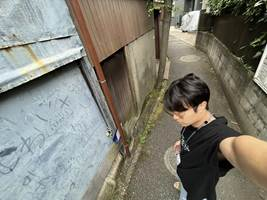just down the turn from family mart，and past the crossing of the train track leading right up to Ikenoue station.
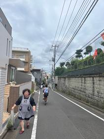the cyclist woman in flowery outfit was arguing with the traffic volunteer because he wanted to redirect flow away from the path due to construction but she was like why! So he let her pass.
This is the peak paradigm of Japanese
service industry: insane speed. My order came through even before my payment is
done. The second I turned my head I saw the gyudon big and dripping and waiting
for me.
This is also my first time taking this direct route down this road. I’m so excited for unlimited water and tea and a good view at Sukiya.
Meet Yuki in the afternoon since he has school. (Oh he cancelled and said his mum has covid-19 which frees up my Saturday yay)
Now it is just housing for sophomore year, itinerary for Japan Yiyi and then my work for next week!
But first laundry and putting clothes and sheets out to dry! I selected my own lunch ingredients and finished cooking by 3pm without too much hassle. Started with the meat then veggies then noodles. Then the squid on top.
 My
chicken vegetable pot nooooo I will buy it next time! So I settled upon a meal
that had tender delicious chunks of pork, some seafood and some fibers in the
form of cabbage! Only checked out from the mart My Basket at 2:34pm and lunch
was only made close to 3pm but it was a good meal. Here is the detailed
breakdown of the ingredients in the noodle. Except for the yellow noodle itself
which the owner had left in the kitchen cabinet right below the sink and said
that I could consume the food in the house. ¥839 was the total amount.
My
chicken vegetable pot nooooo I will buy it next time! So I settled upon a meal
that had tender delicious chunks of pork, some seafood and some fibers in the
form of cabbage! Only checked out from the mart My Basket at 2:34pm and lunch
was only made close to 3pm but it was a good meal. Here is the detailed
breakdown of the ingredients in the noodle. Except for the yellow noodle itself
which the owner had left in the kitchen cabinet right below the sink and said
that I could consume the food in the house. ¥839 was the total amount.
|
まいばすけっと 池ノ上駅前店 TEL03-5738-2095 FAX03-5738-2096 領取証 ********************** ********** 営業時間: あさ7時~よる12時 年中無休 **** ********************** レジ0104 2023/7/15(+) 取5924 責: 901156022 14:34 ざく切り白菜 129 いかの塩だれ 299** 豚肉ハラミカットステー 499 レジ割引 30% -150 小計 ¥777 外税8%対象額 ¥777 外税8% ¥62 合計 ¥839 クレジット ¥839 お釣り ¥0 (お客様控え) 本人確認省略 カード会社 会員番号 お取扱日 取引内容 伝票番号 取扱区分 金 お買上 お買上商品数:3 ※印は軽減税率8%対象商品 [クレジットカード売上票] マスター/イオン 51624 XXXX-XXXX-XXXX-4815 2023年07月15日 104873 (IC) 1回 額 承認番号 ¥839 0058240 AID A0000000041010 APL Debit Mastercard AEON Pay T WAON POINT# おトクに たまる、つかえる! イオンカードお申込みはこちら! |
I found that the reason why the pork (imported from Canada!) tasted so tender is because they used potato starch. Very shrewd of me to dig through the packaging I had thrown away to unearth the ingredients hawhawhaw.
basically just worked on computer and phone stuff. Finally was smart enough to swap the SIM cards between my android OnePlus phone and my iPhone and thus receive text messages on my Singapore number which enabled me to log in to my.Harvard. For the first time in more than a month !
I
really wanted to eat fish so I walked over about 7 minutes to that same Taiwanese restaurant called kōshun or 光春 which I had visited earlier on, but did not have a very satisfying meal haha because it was a small dish of pork kidney and very little white rice.
Stuff I ordered involved this 带鱼or
tachiuo and a fishball soup laden with like a pound of chopped up spring onion or something.
|
タチウオの薫り焼き 1 ¥800内 魚団子スープ 1 ¥770 内 鶏かけ飯 1 ¥990 内 |
While I was focusing on the food I also heard that conversation between the Japanese men. They talked about Shanghai and Taiwan and self driving cars and whether their wives liked outdoors. Bla. The guy in dark blue obviously has a lot to say about our personal data being sold, in this data driven world. A true irony when his little conversation is being leaked into my ears and being recorded by me muahaha 🦹♀️
Today's spendings would be about 45 Singapore dollars with Australian mandarin and beef bowl, pork squid cabbage lunch ingredients and this amazing home-made Southern province vibes ¥2560 Taiwan food dinner.
16-July-2023 Sunday ☀️
Lunch planned with Junxin and family!!! I am very excited to treat them to Singapore food and the man has treated me a couple of times already.
We are going to eat at: 〒150-0002 東京都渋谷区渋谷３丁目１８−10 大野ビル2 号館 2F
獅天鶏飯
Today was kind of like a lazy morning and I forgot to leave my wet socks outside to dry overnight so about 11:00 a.m. I finally put all my clothes that I have washed yesterday that I had no space to put outside because the space outside was occupied by the bed sheets and I put the stuff along the railings right outside my door. I actually contemplated going somewhere further for breakfast but it was so insanely hot today it reached 25 I mean 35° Celsius so that was really terrible and I decided to go to the nearest family Mart to get something warm because I did not have any warm water left and I do not want to go back home to microwave the stuff though arguably I could have microwaved a bento box right at the convenience store.
Finally to top off the fried chicken leg and the beef Crockett that I have bought for 378 yen (¥100 for ファミコロ and ¥278 for the Premium chicken プレミアムチキン which was a very yummy leg indeed) I went to the specific Cafe that I have always visited and is called three con Cafe and the lady seemed a little wary of me I was just wearing a singlets with a lanyard around my neck and I was wearing shorts, the lady did not want to get within like 2 meter of me even though I was ordering the stuff and she only collected the coins that I had put on the tray when I went off to the other side so I felt like she was extremely repulsed by me. So I have two possible reasons: one of the reasons is that I was wearing a singlet and the other reason is because the day before when I went there for breakfast or two days before actually I dropped the sandwich on the floor and she held a grudge for that. Anyway I ate the chicken leg way before I got the order for creamy sandwich and so I topped off the hot milk tea with the beef croquet.
Anyway it does not matter and eventually my strawberry sandwich which cost me $167 yen as well as the hot drink which cost me about 200 yen totaled up to a bill of $396 yen. So because I did not want to breathe in that cigarette smoky smell within the cafe sat outside the cafe well facing the opposite side of the road and drank my hot milk tea. Needless to say this made me sweat a lot and also because I did not bring my Wi-Fi out due to my tpg SIM card being activated and having mobile data I was rushing to get home so that it wouldn't take me more than half an hour to reply to my darling. So after having that meal at about 11:10 a.m. I went back home to enjoy the air conditioning and after that I just sat down on the floor of course I hung out my stuff and then I was going to get ready to meet my uncle at 12:00 noon.
When I texted my uncle at 11:33 a.m. to my gross surprise he and his wife and kids had actually reached the place already and so it turns out they were doing some shopping beforehand so that they will be ready at the area when I came and that was a little surprising for me so I did not want to be too late and I rushed off the house at about 11:40 and then I reached the station at 11:47 just narrowly missing the 1146 a.m. train to Shibuya and when I reach Shibuya it was exactly 12 noon and my uncle had changed the meeting spot to be directly at the Singaporean restaurant that I had chosen. So I took that hot hot root filled with people who's only exclamation and the only way coming out of the mouth is the Japanese word for hot which is ATSUI. Then I walked across the famous CBS circular bridge to see all the people at the artificial turf and like sitting in the cool tents to get away from the heat and I eventually reached the beef cuts to place which is just one floor below the Singaporean place I thought they were previously in different buildings but anyway even on a hot 37° kind of weltering day that was still a line that seemed to last for about 1 hour that was extending out of the beef katsu shop. And I saw this water sprayer and then some Japanese ladies standing there getting a bit of mist I really like strong water jets but more like little Miss to reduce the heat it was so bad. I hovered outside the restaurant until like 12:10 p.m. when I found out that a bunch of tourists were blocking the way to the elevator which is beside the beef katsu place so I took the elevator. The minutes the elevator door opened on the second floor my uncle's wife was the first to pop interview followed by my uncle and then his two kids so this was one of the most narrow walkway it is more narrow than all the suite corridors at Harvard and we were not the only ones who are lining up for a seat and it turns out that all the tables are really tiny in fact those tables would probably fit like two people in an American setting but in the Japanese setting they're going to have four people sit at one table. So we waited there for a good 20 minutes before one of the so-called 4 person table was able to accommodate us and we brought all our bags except for the baby carriage. We left it in the corridor which is directly perpendicular to the toilet. Everything was so jammed packed together that anyone who wants to exit the restaurant has to shimmy past us and one of the restaurants staff, who was a heavy set women with what looked like blonde hair curlers in her hair, actually advised the next pairs of people that were lining out for a seat in the restaurant to open the back door and wait for the seats along the stairway which obviously had no air conditioning so she apologized a little bit for shooting them out to a place that was obviously at a higher temperature. Eventually we got to the table and by then I already decided it what sort of stuff I was going to order I was going to get a bit of each kind of seafood I was going to get the HOKKIEN MEE which is a specific Singapore dish that's not even found in my home province so a bit of a misnomer. I also thought I would get one of a chronic and then a bit of a soft shell crab and one of it I was going to make it spicy and the other one I will keep it non-spicy but it turns out all the dishes are like adjusted to the Japanese taste palate so it was not spicy at all in the end. Corresponding to the glowing Google review by a Singaporean patron of this restaurant, I was going to get the large chicken rice to assess the authenticity of it compared to a Singaporean hawker centre chicken rice. My uncle's daughter (7 year old Fumino who is very shy and reticent and from whom I have barely heard a word) wanted chicken soup so we probably spent like 170 yen on just a bowl of chicken soup which is a little bit steep compared to what I can get in Singapore. Anyway the cold chicken dishes took very short time to arrive but anything that was stir Fry such as the noodles the prawn and the crab two guys at least half an hour and that was a super long wait but I understand because there was only one chef in charge of the stir fry. There were points during this meal where I was thinking well we have run out of conversation topics this is it but I always had something to ask them and I also updated them about my favorite person in the world coming to visit me in Tokyo Japan and son of the attractions that we are visiting and if they had any prior experiences such as the ropeway called catchy catchy which is along the way between Mount Fuji 5th station and the Kawaguchi Lake. Also this time I had a little bit more interactions with the 8-month-old baby who is really cute and who is really adored by his elder sister and I sniffed his hair and I poked his cheek. That I was absolutely stuffed and I thought I'll be good until like 8:00 p.m. on 9:00 p.m. for dinner.
After that my uncle for some reason wanted to walk to a flower shop and then I asked him twice is he going to get a flowers for a specific occasion and then they were like oh we were just taking a look we should even treat it and they did not buy any flowers. So in this one kilometer track down from Shibuya all the way till Aoyama University and until this aayoyama flower shop we were just covering ourselves up with umbrellas and ntuv Ray shirts and the elder sister was so hot she hit in the baby carriage along the baby and the baby fell asleep in her arms which is really cute.
My own babies wish for acute Disney haircut was constantly on my mind so after touring the flower shop I said bye to them and I told them that I will meet them again in August and then I walked probably at least for 20 minutes till the Disney store in Shibuya. On the way I saw a farmers market which sold not just fruits and vegetables but also sold dogs for adoption or something and then I stroke this huge lion dog which looks like a tibet Shepherd or something. I was so thirsty that I spent $450 yen on what was probably 100 ml of Peace chews which is really a huge scam because I asked him to remove the ice and what I was left with was just a pathetic amount that I drank in like 2 seconds. Normally if I'm feeling aggressive I would tell them hey that is too pathetic I'm paying $450 yen for this pathetic little bit of drink you're not even filling up 1/3 of the cup let it on like half of it. But I didn't say it.
18:50 meet Matsumoto Masato. Will stay overnight and experience AUTHENTIC japanese life.
Pushed back to 19:40!
19:21 he texted me and asked if I had reached.
Reached home close to eleven! the neighbourhood and the walk back home was hella suspicious and I felt the grave doom that i was entering a village to be scammed or to have my organs harvested; alas it was a really nice house that probably cost about 50 million yen according to Matsumoto. ALSO THIS COUPLE DRINKS WHISKEY 🥃 throughout the day. It is honestly incredible. They've got the alcohol mixer and everything hahaha. 夫妻之间的情趣吧。At 12am I was lucky to try out a JURA Scotch whiskey which tasted not bad. It's just that all alcohol are kind of like medicine except that they give you negative health. And perhaps good sleep.
MY DORAEMON RLOM. IKUKO told me the sliding panel to the left is where Doraemon would hide! That is literally so cute imagine if I had a Doraemon at home that sleeps in that sliding door where the clothes are kept. I would spend money adding a Japanese room into my house, in the future. Provided I have money.
17-July-2023 Monday HOLIDAY DAY OF THE SEA
Woke at 3:04am for confidential reasons. Texted Yiyi.
Woke at 7.55am to my alarm and apologised while shutting it off.
11:20am
Omg I am absolutely MIND BLOWN 🤯Yoshikei has these recipes for housewives.
And they have everything you need AND basically deliver each days menu and require ingredients and everything looks colourful and delicious. Basically you don’t have to think about nutrition or chop up stuff and you just follow this mindlessly, so funny!! Epic Japan moment. Also say for example the ingredient involves diced carrots, then the company will deliver the packs of the ready made ingredients, freshly sliced or chopped or grated or whatever format is required, such that with a quick rinse you could start cooking them for your family!
wow time to be a housewife in Japan (just kidding). I do feel the domestic chores being lightened by the sheer range of services that companies can dream up of, to make family chores hassle-free and to just reduce the need to think or decide, when it comes to maintaining a good nutritional level for the family and all that jazz. Which I think Western side does not really care about. They do not feel the need to have a multicoloured platters of delights nor have variety across the week, which is something mind-boggling for me, having emerged from my Asian cultural bog of food diversity and ensuring there is always a freshness and a mix-and-match.
Masato or Mayo is just lying on the sofa and studying his chemistry. He also likes to play classical music like a true intellectual - recently it has been Air on G string by Johann Sebastian Bach, which in Japanese is pronounced BA-HA with the slight stop between the 2 syllables (which is a phenomenon known as gemination in phonetics, present in Japanese, Korean and Cantonese.)
We started making dumplings at about 1pm and it turned out to be an enormous success!
my head feels weird hm.
I also started drafting the report and got a whole list of top 500 foodtech companies from forward foodings or something.
Afternoon was mostly quiet and sitting at the dining table. I remarked that I was surprised that Matsumoto (as a fellow Dragon year) was more attentive to household chores than most Japanese men and always did the dishes. He looks permanently angry with arched eyebrows but he’s a super caring man I could tell to his wife. The type that never complains and never has a temper I think. Very wholesome couple!
Got super good black shoes that are a little big but almost free.
also got the hairdryer from that same dude Rhys who is from Singapore yay slay. I transferred the 5 SGD to him via PayNow.
Upon return to my home station Ikenoue, I knew I had to own up to the ticket staff that I travelled to another station without tapping out, since I got my black shoes and the hairdryer from Rhys across the gantry of Waseda 早稲田 station without tapping my card. So I said that I actually only went toめいだいまえ 明大前 which is along the same Inokashira line, and he deducted the to and fro trip price from my card, at my chagrin, thus reducing the card balance to about 1900￥. Sad.
After this trip of insane value goods, I went to the convenience store, called My Basket まいばすけっとunder Aeon, which is the one I patronise the most! One small phenomenon that I realise is that rather than using the more angular and visually distinguishable Katakana, they used Hiragana for the title of the shop, and yet the parent company AEONイオン uses Katakana which seen to be harder and less cute. It does seem to be the case as Hiragana is more like bubble letters with curves while Katakana has sharp bends, using Hiragana can make the shop name appear cuter and therefore endow an affectionate nature to the brand.
At 9:32pm, I eventually bought a ￥430 chicken cabbage spicy miso pot known as よだれ鶏鍋, as well as a ￥430 chicken hamburg steak W チキンハンバーグ弁当 and spaghetti and fried egg set (unfortunately it had gooey egg yolk which I dislike and which might have given me stomach flu!), and I heated up most of the rice from the bento set, saving some of the rice as well as all the salty things like egg and hamburg for breakfast tomorrow.
Some pictures from today are as seen below.
 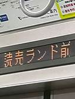
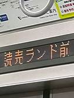
It was a very quick return to Shimokitazawa. I toured around the unusually bustling supermarket Ozei or something and the cartoon merchandise shop. Soon I arranged with Rhys to meet so of course I have to put down all my stuff first!
18-July-2023 Tuesday ☀️ 37°C
Went to office at about 9:10am to collect my charger for Dell laptop and worked a little bit. Was fortunate today not to miss any trains. Operation: Sneak out of office entailed me putting my big corporate Tote Bag (containing all the other stuff) at the entrance first, coming back to finish my mug of hot water and then bring my smaller laptop out. I actually saw my mentors I今西 and Morimoto森本 but I sat and kept my head low. The only time I was at my usual spot was to collect charger and i smilingly explained that to the cheerful fellow Tenor, 浅井さん who along with Fujimi藤見 is always at their usual spot, parallel to my own work desk.
At 11’24, after hovering around Shibuya for a bit, found an ATM at & eleven which was operated by Seven Bank where I successfully withdrew 50000JPY for the upcoming Yiyi arrival yay Japan cash.
saw this while walking around Shibuya hunting for ramen. Before that I tried Mizuho ATM and failed, before using Google maps to head to the downstairs 7-Eleven ATM (right at the fruit shop where I bought passion fruit) and withdraw 5 fat notes. For my darling Yiyi!
It took me a bit of a walk to realise I have NOT tried Ichiran ramen yet. It’s super famous. I am absolutely pumped and there were many interesting settings that blew my mind. Naturally to be healthy I chose a light soup.

Got home by 1pm which is rare. Hooray! 🎉
Did receipt stuff filled in HSYLC stuff and turned on work laptop. Got hungry so went for lunch part 2. My favorite restaurant closed so I settled for an inferior option that is pretty close to home.
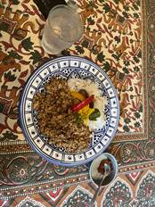
I finally keyed in all my receipts. Also did the company list until like 30th in the ranking.
I had a nap at 6:10pm.ish on the floor because I don’t wanna dirty the bed. I pulled one pillow on the floor and pulled over the blankets. And a few short dreams flashed in my head like being at a hotel with transparent walls. A last dream involved an unknown man. I was a little ummm sultry at the start before going to sleep but once I truly hit slumberland it was alright.
It’s 6:35pm.
Yang YI Tan arrives in Tokyo! He is travelling alone too and I will host him.
Ivan also joins us for dinner.
19-July-2023 Wednesday 🌞
woke up kinda refreshed。
Unexpectedly because I lay down for what felt like 40 minutes or more last night and kept tossing and turning. (Imagined many things but within the realm of PG13)[57]
I first woke in the morning at 5:05am (a bit after sunrise) and was pleased when i clicked open Yang Yi phone and saw I could continue sleeping for another 2 hours.
Then I woke again at 7:20am.
Thought about breakfast and decided on going to the convenience store so I can heat up my food. Eventually bought a こだわり仕立て助六寿司 and a Kyoto 伊右衛門いえもん hot drink for ¥608ish. There was いなり 稲荷which is a kind of beancurd style wrapping that I’ve always liked! This purchase was made at 8:08am as I made a typical Japanese-style morning rush for the train to Shibuya and subsequently to work!
Here is the receipt.
|
— FamilyMart 池ノ上駅北口店 東京都世田谷区北沢1-33-16 電話 : 03-3468-7091 2023年 7月19日 (水) 8:08 レジ 2-4858 貴No. 008 領収証 助六寿司 H伊右衛門 500 ¥470 ¥138軽 合 計 ¥608 (8% 対象 ¥608) (内消費税等 ¥45) クレジット支払 ¥608 「軽」は軽減税率対象商品です。 クレジット支払 取引日 2023年 7月19日 伝票番号 CL 20330 会員番号 会社名 **** **** **** 4815 承認番号 MASTER 支払区分 支払金額 AID ¥608 A0000000041010 お客様控え 044416 一括 |
8:35am Akasakamitsuke boarding was pretty intense lmao I was leaning against the train door on my right arm and there was
I heard what was seemingly a Southeast Asian accent saying “don’t push” and a few female whimpers or squeals of being squeezed by the crowd.
Damn I ended up being on the opening door side at 溜池山王. I think my chopstick which grazed against someone’s hair attracted their ire but I was impervious.
I typed that on the train at about 8:50am. After that I experienced a tiny stomachache in the morning but I just casually dismissed it and it soon disappeared. I simply focused on my work.
I was pretty hungry by noon but Feng Shan Shan said she had a meeting so I had to wait for her oh well.. I considered trying the Beijing Snack that was offered on the table, purportedly by a Chinese client because I did not recognise the name of the donor as any employee in P&E, but decided to just be a loser and drink water. Also I decided to get something soupy for lunch if it was available (alas, it was not; the beef sukiyaki 焼き鍋 was unfortunately sold out).
I think for the lunch set below (which only cost me ¥1089 muahuahua although I semi-expected Feng to step forward and foot the bill for me but she let me go forward and pay, we separated the bill as per all tenets of Fairness and Equity and all that), the big rice wasn’t as monstrous as last time which is great because I don’t want a scenario of bloated tummy. The cabbage salad was laced with a refreshing citrus dressing (possibly lemon) and the grated radish in the beef soaked up a lot of the butter flavor such that it was very umami and I also soaked some of the cabbage slices into that beef sauce. Which is mostly butter but whatever.
|
大衆スタンド てんぐ大ホール TENG GRAND FOOD HALL 領收証 テンアライド株式会社 銀座ナイン店 03-3289-2402 様 2023年07月19日 (水) 13:51 000074-00 2-4_-_席 G0349 0066 Sサイ&鶏 ③ 1+ 1,089 小計 (内消費税 1,089円 99円) 合計 1,089円 DC - MUFG 1,089円 No. 09867 1名 担当者 : 09200090 通販サイト 『天狗キッチン」オープン! CARDNET 「クレジットカード売上票] CREDIT CARD SALES SLIP 加盟店名 デンｸﾞ ギンザナインテン MERCHANT03-3289-2402 ご利用日DATE 2023/07/19 13:51:53 カード番号 CARD NO. TC 516240XXXXXX4815 伝票番号 有効期限 取引内容 12771 XXXXЯ 売上 SLIP NO. EXP DATE TRAN TYPE 支払区分 取扱区分 商品区分 一括 110 0990 PMT TYPE COM CODE 端末番号 TERMINAL 55087-870-13412 カード会社 MUFGカード (105) CARD COMPANY 承認番号APPROVAL CODE 039933 処理通番TRAN NO. 211045 金額 AMOUNT ¥1,089 合計金額 TOTAL AMOUNT ¥1,089 MA PEI YAO SIMON MA ご案内 ご利用ありがとうございました。 またのご来店を お待ちしております ARCOO ATCO0GB No00 +2a996640000* A000000004 1010 Debit Mastercard 売場 SALES COUNTER | 係員CLERK お客様控 CUSTOMER COPY |
Anyway, I actually had a super productive morning where I made use of thinkcell in powerpoint to make a few different kinds of charts, updated my excel sheet and found some super useful summaries of 2023 and 2022 foodtech scenes in the global market and in japan.
I also had a pretty enriching lunch conversation with Feng Shan Shan, who had been dating her Japanese boyfriend trailing back from college years for the past 7 years and is currently renting an apartment with him. Feng studied sociolinguistics in Osaka university after completing her bachelors degree in China and we always talk about the adventure of seeing the wider world, she expressed her urayamashi feeling at my current life. Also I wanted to delve more into sociolinguistics, linguistic psychology and all that cognitive stuff as well as language acquisition and I wished that she could share some of these documents so I can see what i am interested in and perhaps pursue that in college.
Just at the “cafe” section of the office and enjoying the slurping sounds made by Mr Morimoto and the fragrance of the tomato meat thingy that he is eating (I did not turn my head at all to see what exactly he is eating but it smells like spaghetti), and tapping of everyone’s fingertips on their keyboard. Today there is an incredible number of people in office despite the continued heat outside.
Also, some guy with a Chinese name starting with Liu had left a lot of snacks on the countertop of the office cafe and I was tempted to try a fruit pudding which looked pretty yummy. There was a grape flavoured one with actual big peeled grapes embedded within the jelly, but for some reason I was concerned about the sugar content and the fact that these fruits are not fresh, and I ended up not taking any of these products. Also, there was a bunch of fruit candies that are basically like preserved apples and plums and all that, and because of my strong affinity for green beans, I had a beijing snack that was yellow bean paste.
Had dinner with Michael Tan and we also went to Mcdonalds (decided not to queue because there were too many people) and then to Sukiya.
After that we toured Claris bookstore. I might have made a joke about his parents migrating from China to the US that crossed the line a little bit and the man was like Excuse you 🙂 I awkwardly laughed it over and indicated it was just a joke. It was so hot and I unbuttoned the top 3 buttons of my light blue shirt. The new black leather shoes I bought were slightly chafing my heels but no matter, I survived the walk. After the bookstore visit, we hovered around and eventually got to Ozeki market where I bought a bunch of food. Here is the receipt for this ￥619 purchase, consisting of three counts of 20% discounted products due to them expiring on the same night, including a pack of 6 xiaolongbao, a kombu onigiri and some red bean onigiri thing that looks like yam paste mashed into a ball I have no clue.
|
下北沢店 Dzeko TEL: 03-6407-2551 領収証 ★★劇団四季 『ウィキッド』 ★★ オオゼキ貸切公演ペアチケットが 抽選で当たるキャンペーン実施中 応募の締切は10月3日 (火)まで ★店内やOZアプリでご案内中 2013年 7月19日 (水) 20:02 ソ#0096 惣菜 中華 ¥360 値引 20% -*72 ソ#0096 惣菜 おはぎ ¥260 値引 20% -*52 ソ#0096 米飯 おにぎり ¥98 値引 20% -*20 小計 3点 #574 (外税 8.0%対象額 ¥574) 8.0% 消費税等 ¥45 外稅額計 ¥45 「#」は軽減税率対象商品です。 合計 ¥619 IC クレジット ¥619 現計 ¥0 105 MUFG CARD XX/XX 会員番号 IC516240XXXXXX4815 お取扱日 23/07/19 20:03:13 PC010 括 0990 5 取引内容 売上 伝専 71531 #056941 クレジット ¥619 A0000000041010 AL-Debit Mastercard ATC 0000000108 00 1 振替金額 ¥619 税・その他 ¥0 ーカロ 加盟 オオゼキシモキタザワテン 端末番号: 49693-801-18950 必ずお持ち下さい。 要冷商品など 対応 商品を返品・交換の際はレシートを ど しかねる場合があります。 キャッシャ :37 R0008-#1257 0000026000812572307193 |
After that we entered mcdonalds and saw that the queue was too long (I was a little enamoured by the polar bear figurines and the other animal toys such as a realistic triceratops toy that came with a happy meal purchase and I texted Yiyi saying that I want to try the mcdonalds here), so we went to Sukiyaすきや and I did not order anything (but still took some chopsticks and a cup of hot water and a cup of hot tea from the dispenser), but Michael Tan wanted dessert so he got this cheap chocolate pudding thing, he was asking if he should get caramel pudding or chocolate and he settled on the latter even though I recommended the former, This came in a Häagen-Dazs sized container and it was obviously factory made, and he scooped out bits of pudding and showed me the consistency of it, in how uniform and how solidly packed each particle of the pudding was and I thought wow maybe I will try the caramel pudding next time.
Got back home at about 9pm but had to wait for Yang Yi to come home which turned to 9:40pm and eventually to 10:21pm. Took some random street photos using a timer. Also because I was hanging my heavy bag with 2 containers and my 3 grocery items onto one of those pawn-shaped weighted holders that is meant as a cordon, I accidentally tipped that cordon over and some water leaked out, thankfully not onto my computer but only onto part of my bag strap. Got back showered and analysed with Yang Yi what he did wrong apart from being not punctual (he even went to the convenience store to buy a bento and wait for it to heat up while I was still hanging around outside the house because I did not have the key and was gracious enough to give it to him at the start of the day). I remember his 2 deadly sins include Lust and Greed so I am like this is a major red flag in any sort of relationships by the way.
20-July-2023 Thursday ☀️
Woke at before 5am then again at around 5:40am. I microwave heated the 6 pieces of xiaolongbao from yesterday night purchase which I forgot what the exact price was (update: it was ￥288 after discount so that is a dirt cheap purchase given how much work goes into preparing the dough skin and the meat filling and folding the bao and cooking it and then packaging and transporting these stuff to the supermarket) but I bought 3 breakfast items in total from Ozeki, the supermarket at Shimokitazawa (of which the remaining two ended up being wasted, very sad. Buying and wasting food is really that new low in life that I created since the start of college, though most of the wasted food was in Annenberg where no one knows how to season anything). This is going to be terrible because I have some diarrhea and I just wanna buy charcoal pills or something. Alas it was not meant to be. I lay down a bit
Wow I actually typed all those while the bacteria or virus were raging in my joints.
Insert official reflection:
感想：湘南R&Dセンター見学（2023年7月20日）
Reflection for site visit at NOK Shōnan R&D Center (20 July 2023)
These past 6 weeks at P&E Directions have open my mind up to the boundless possibilities and positive impact that a team of elite Japan consultants can deliver to the business world in every industry, ranging from small fledgling firms to well-established international corporations. I have witnessed consultants putting in all of their skills to work – in their mind-boggling ability to absorb and soak in a whole industry knowledge, their speed and skills with the Microsoft office suite and an eye for aesthetics and detail, and even in coding and programming to serve the logistics needs of clients better – to excel at their job and go beyond that to completely eradicate any of the clients’ concerns.
Courtesy of Mr Shimada and also the meticulous planning of the team, I was able to witness the sheer scale and brilliant minds that go behind an international corporation based in Japan, by listening from and speaking to the top minds at NOK’s Shōnan R&D Center, witnessing the many processes at play that involved lasers, X-rays, huge machines and more than 8000 different materials and ingredients for investigating the ideal combination of materials to achieve the desired properties (heat resistance, electrical resistance, moldability, re-bonding…), and even trying my hand on a hairband, a brain-wave detecting cap, and a few rubber strips that have been engineered to be able to fuse back together!
JOY: shock-absorbent rubber
I was inspired by the sheer energy and passion that the engineers brought to their work. For instance, one of the engineer who covered the experimental department of NOK (seated behind Mr Shimada and to the left of Ms Wada) shared about his childhood fascination with cars and how he applied the science of rubber making to the tires of a remote-controlled racecar to make the car bounce less. I think this spirit of scientific inquiry is definitely to an inborn curiosity and desire to understand nature, and using the laws of physics and material science to serve the good of mankind.
I learnt that one of the most important skills a consultant can have is to ask
the right questions and in the right matter and tone, which is a skill that can
help one amass the correct information and even establish good relations,
showing that you are able to arrive at the core of an issue and understand
implicit assumptions. For instance, in response to Mr Katsuzaki’s question of
“Can we scale up this technology of the shock-absorbent tire to a commercial
vehicle?”, the NOK engineer answered how commercial cars are different from toy
cars and the types of considerations that designers and manufacturers would
have to incorporate into designing actual tires. Also, I learnt that
experimenting in R&D might begin with a seemingly innocuous premise, but
the outcomes that we derive from it can have unforeseen implications on the
industry.
「sotto」ブレイン: “Sotto brain” designed to detect brainwaves
To me, this is the core of how science and innovation serve mankind, by knowing what people need and thinking about current gaps that we have not filled. It reminded me of all the innovative solutions to common problems afflicting, and my middle school and elementary school innovative design/design thinking classes: find a societal problem and work on it. In this case, we are referring to detecting dementia, in the harrowing backdrop of ageing population and lowering fertility rate in Japan and many other developed countries. Visiting the facilities for testing these waves also enlightened me to the countless hours of hardware and software testing that must go behind this cap that eventually a patient can wear, and that what we are witnessing can never fully represent the entire arduous process of ideation and product creations that are riddled with failure. This is exactly why NOK has the largest proportion of young people from 20 to 30 years old (just like me), and a reminder for me to persevere despite facing setbacks in all aspects of life.
In one of the sharings, the e-mobility department of NOK mentioned how 80% of their time is dedicated to company work and 20% is dedicated to creativity and innovation, such as coming up with more robust and efficient frameworks and even questioning existing processes: is there a way we can do things differently? Why are there air gaps between the vehicular batteries in the first place? What is the rationale for a process and how can we rectify it to fit the demands of the world and our workers? This flexibility in mindset is definite something important for large companies where many mindsets and practices can be entrenched – I was definitely very impressed by Mr Katō and the leaders of this center in how they kept up to date with foreign competitors and their different frameworks of doing things.
This brings up to the point of science and technology being our tool but not dominating our worldview: I learnt of the importance of balance between science and business: learning about management, latest industry insights and many other fields like humanities and art enables a team to develop holistically, and also branch out relations as NOK cannot exists alone without the support of its domestic and overseas partner. During the conversations that Mr Shimada had with Mr Katō, I was drawn to how both sides represented a large elite team and were able to process information very swiftly and cover a wide range of topics, such as the burgeoning electric vehicle industry in China and how to transform business models to fit market needs. I was captivated by their exchange and also impressed by the cross-domain knowledge and skills that one must be equipped with to be a seasoned consultant that can offer services of value to such a large, well-established company like NOK.
Overall, this was a highly enriching experience where we not just think about theory of business management and product development but witness it at work, seeing how the nascent seeds of a new material or product is sown and nurtured, in the fertile soil of creativity of this R&D team, and being offered this rare privilege to even touch and try out these products and walk through the experimental setups is something very special for me. In addition, the rare honor of attempting to speak Japanese in front of both P&E and the NOK staff made me very nervous but also thankful that I was given this platform to speak and reflect by Mr Shimada, and these learnings will be something I will carry forth to my work life in the future. I am very grateful to Mr Shimada for offering me this experience and privilege, and the special attention he had always given to bring me the most multi-faceted view of P&E directions as well as business insights in Japan.
We then took a photo at the flower place before leaving.
They (勝嵜 and gang) got me to squat beside the CEO; initially it was just girls beside him but they were obviously a bit hesitant about being so close near to the dude.
Afternoon was just a lot of pain. Head. Legs. Tummy. Even in the morning I had a lot of tummy pain but I waited till I reached NOK and when we had sort of a toilet break to let all that out.
I know that I lost a lot of fluids today and also need to replenish my electrolytes since I only had a warm tea from the morning purchase at the convenience store as well as the small carton of water that is provided by NOK, so in the afternoon when they told me to get my passport as a proof of my identity, I took one train ride home and also at 3:17pm bought 2 small bottles of Pocari sweat for ￥235. In the store, I was looking for the big 1 liter or 2 liter bottles but I could not find them.
At 15:58 I bought a pack of 7 disposable masks for ¥218 (after tax).
|
下北沢店 Ozeki TEL: 03-6407-2551 領収証 ★★劇団四季 『ウィキッド』★★ オオゼキ貸切公演ペアチケットが 抽選で当たるキャンペーン実施中 応募の締切は10月3日 (火)まで ★店内やOZアプリでご案内中 2023 年 7 月20日 (木) 17:11 ソ#0020 リンゴフクロ ¥499 リ 0072 デンネンゴムチュウアツデMP ¥100 リ 0072 カールケートステンレス ¥158 2個 ¥316 小計 4点 #915 (外税10.0%対象額 ¥416) 10.0% 消費税等 ¥41 (外税 8.0% 対象額 ¥499) 8.0% 消費税等 ¥39 外稅額計 ¥80 「#」は軽減税率対象商品です。 合計 ¥995 TCクレジット ¥995 現計 ¥0 105 MUFG CARD XX/XX 会員番号 IC516240XXXXXX4815 23/07/20 17:12:01 PC010 一括 0990 5 取引內容 売上 伝票番号 34975 承認番号 #030827 ¥995 A0000000041010 1 ・その他! *995 ¥995 グレジット AL-Debit Mastercard ATC000000011500 振替金額 加盟店一 オオゼキシモキタザワテン 端末番号: 49693-801-18944 商品を返品・交換の際はレシートを 必ずお持ち下さい。 冷商品など 対応致しかねる場合があります。 キャッシャ :79 R0009-#1179 0000026000911792307201
|
I grimaced and winced in discomfort at home and cursed my fever and the bacteria or virus that was causing it and all that headache I had, but I did not boil water or anything, just cleaned things up a bit and drank my Pocari sweat to replenish all the fluids i had lost, walking around and sweating and commuting more than 80 kilometers today for the site visit and holding back all my negative emotions to keep up this Japanese facade of professionalism and politeness.
After I had my pleasant visit to the doctor (all the nurses were very very polite and seemed genuinely caring and concerned, and even the pharmacy attendants too from whom I bought 2 packs of 7 masks for about ￥500 in total, and I had to fill in a bunch of forms because this is the first time I am visiting any clinics and getting any sort of prescriptions from pharmacies and the sort), I went to the supermarket which I had just visited yesterday and bought 2 steel wools to scrub out all the stubborn stains, a pair of rubber gloves to keep my hands clean and dry even when I am cleaning and a pack of 5 New Zealand apples for a total of ￥995. The breakdown was like 540 for the apple, 108 for the pair of gloves and 347 for the pair of steel wool which I guess was al little expensive given its small size. Here is the receipt for this afternoon purchase.
Went to bed at 10pm ish. Headache joint aches.
21-July-2023 Friday ☀️
Woke at 11:22am

Chilled a bit at home in the afternoon. Still got a bit dizzy after turning on the laptop. Laid out a bunch of receipts! Gonna keep digital archives of the whole ton of them.
I started DOING a bit of cleanup because I felt energetic and was mostly recovered save for the little bit of stomach pain and the less explosive bouts of diarrhoea I had today. Also because I ate a solid lunch or some other reason, my excrement or liquid stool if you may was not really light yellow like yesterday and had returned to the normal colour which I would treat as a good sign. A pro-tip: I should snap a photo of the mess that the flower petals have made on the day itself, rather than waiting for the
Bruh Shinjuku is so hard to navigate…. There r so many exits and so many levels and half levels. Also it’s insane how many people are lining up at every shop at this place for dinner. Japan, 〒160-0023 Tokyo, Shinjuku City, Nishishinjuku, 1 Chome, 1号 京王モールエリアA 南口地下街
So for this place it’s so fragmented and spread out. I have to find this specific area of the Keiō-Shinjuku mall which I have no clue where because every little turn is filled with malls and shops and confectioneries with staircases and elevators leading to God knows where.
But for Shibuya if I’m alighting from Ginza or Inokashira or JR lines at least there’s a bit of buffer for me to get my bearings before a bunch of shops assault my senses.
22-July-2023 Saturday ☀️
Woke at 8:30am but went to sleep again. Had stools with normal consistency finally.
Same porridge place as yesterday woohoo.
Slept again and woke at 10ish.
Breakfast: amazing chicken mushroom porridge woohoo.
Shop only opened past 11:30am. I was just standing at the neighbouring shade near the house, then this rather grotesque looking man stepped out of the house door and asked brusquely "なにやってんの" which is just a very informal way of asking what I was doing there. And I immediately sauntered off. To hide
Lunch: way too late.
Dinner: gastric discomfort.
Did not think about bringing clothes back from the balcony until 8:59pm.
Tip: don’t travel far. May resulting in debilitating pains and discomfort.
First time getting Yang Yi a face mask at like 11pm.
23-July-2023 Sunday ☀️
Nowadays the first instinct when I see the Sun is: I need to hang my bedsheets and my quilt out to disinfect the bacteria. 🙈
I was shocked by the level 8 of UV radiation. I haven't seen that in very long and I thought that was for people living in Australia under the ozone hole!
Finally procrastinated till I went out at close to 10am and got to the convenience store; at 10:09am ¥285 for the 3 packs (each one ¥88 pre tax) of Niigata Prefecture Porridge! Unfortunately I did not boil the steamed chicken thoroughly though I need heat the pack of it in near boiling water. 💦
Mum called me to remind me to boil every grocery I get.
I ate like one piece.
Update: I also drank the soup. Ate the remaining 3 pieces of apple at about 4pm.
After that it’s lunchtime at my favourite porridge place! San Mai San where 2 employees specifically from Taipei
I was like what is this chopped up weird crisp looking thing. It was simply salted egg but in a different form.
Wow today I was really out of it.
Here’s cat that Yang yi and I encountered after dinner.
24-July-2023 Monday ☀️
感想：浅草文化体験 座禅・茶道・居酒屋（2023年７月24日）
Reflection on Asakusa Cultural Experience – Meditation, Tea Ceremony, Izakaya(24 July 2023)
In today’s cultural session with Mr M, Mr He and Ms Feng, I was swept away into the ancient narratives and traditions of Japan, whose teachings I believe are eternal and applicable in any era.
Zazen experience at Kinryuji
What first struck me about this place was the incense they put at the door, and the majestic golden light-like fixture in the middle of the temple. Then it was the monk that conducted the whole ceremony who spoke with poise and precision. I was brought back to memories of a childhood anime 一休 which to the monk carried many lessons of life wisdom. We also had many thoughtful question and answer sessions where we talked about Western mindfulness versus Buddhist style meditation, Shintoism and Buddhism in Japan and how Buddhism derives and modifies aspects of Hinduism, as well as お釈迦様 and the caste system in India. The highlight of the session was definitely the part where we indicate that we are losing focus during the meditation, and invite our shoulders to be whacked by the monk using a long wooden stick. It did not hurt and was a good reminder to concentrate, or let our minds not dwell excessively on the peripheral, but focus on our immediate surroundings. It was very difficult to do but by the third meditation, I learnt to grasp the core ideas and apply what the monk taught us. We also enjoyed matcha. The performance given by the monk was highly impressive (where he chanted Buddhist verses in a 8-beat rhythm) and helped to calm my mind. I was very thankful for this experience to listen from the monk and also have Mr He, Ms Feng to help me translate certain difficult parts I did not know.
Tea ceremony at the beautiful Chazen
Through the tea ceremony, I understood the concepts of 和敬清寂 wakeiseijaku and 一期一会ichigo ichie which have been adopted by samurais too to foster a sense of peace and appreciation for nature. Personally, I have had experiences reading books about ichigo ichie and internalizing the concept that no point in history is ever replicable and the importance of treasuring such moments with the people in the present around us. This is something particularly sentimental and remarkable for me, as my time with P&E direction slowly draws to a close and there is no 100% guarantee of a next meet. I also thought about how having a protected space that is purely reserved for tea, appreciating the season’s offerings, and having conversations not related to the battlefield (for the samurais who used this concept) was such an important reminder of balance in life, that we should take the time to slow down and see the little things, and also forget about status and rank as these are passing clouds in life. Indeed, having the nijiriguchi serve as an entrance to the tea ceremony area allowed everyone to bow down and crawl through and regard all contemporaries as equals, regardless of whatever great things they did outside of the tea room. In addition, the relevance of the tea ceremony to other key tenets of Japanese culture such as architecture, poetry, painting, calligraphy, pottery and others, made me realize the heritage and richness of Japanese culture. I was also extremely impressed by the poise and elegance with which the chazen tea ceremony staff conducted herself. None of her actions were done with hesitation or with any excessive movement: everything was clean and clear like a mountain stream. I grew a newfound appreciation for Japanese culture and arts and the importance of gratitude.
Izakaya experience at an old beautiful shop, Tanuki
Through the Izakaya experience, I had a rare privilege to bond with Mr M, Mr He and Ms Feng, as I asked Mr M about his experience growing up in Japan, his accommodations and the sorts of food he would eat. He shared extensively given his knowledge of fish and river food, and told us all about the different types of fish available and the specific one that we ordered, called kinki which is a red deep sea perch. We also talked about what activities the previous intern did and what sort of cultural activities future interns from Harvard could look forward to. Immersing in this environment where most things are made from traditional craftsmanship and we could put our feet into the space below the table, I felt like I had travelled back in time and it was very awe-inspiring. I am deeply thankful for Mr M’s meticulous planning: he even researched and knew that this restaurant has a squatting-style toilet and asked if we wanted to use the normal toilet that was at the tea ceremony place.
I am very thankful to Mr Shimada for offering me this rare privilege and experience. I am also very grateful to Mr He and Ms Feng for translating parts of the day for me, and Mr M for his forthcoming sharing and friendliness and meticulous planning. I am very grateful for the experience of going through some of the oldest traditions and having professionals guide me and explain to me, and look forward to more of such cultural immersions!
25-July-2023 Tuesday sunny!
Today is the big day.
Looking at this whole palette of emotions.
Also just updating that list of companies.
The feeling of taking the Airport Limousine was incomparable to anything else. The sheer expectation and excitement of meeting my baby, my girl.
I described how that feeling was akin to going on a school trip with friends.
26-July-2023 Wednesday
Did not touch the diary at all but now in August as I near the end of my journey here I shall update it.
27-July-2023 Thursday ☀️
Today is Disney day.
28-July-2023 Friday
Today we left house past 1:30pm yay! Insane anti Ultraviolet tactics!
famed Takeshita street in Harajuku and also completed goal of bringing her to gyukatsu place 👍
29-July-2023 Saturday
My girlie is now at Kamakura! We bought many different lucky charms and there was a shop with just small glass accessories of animals and stuff and they were super cute.
This is a completely candid shot of her. She is actually so delightful and always my pillar of support. We had matcha ice cream along this street called Komachi DOri.
After failing to see the Buddha up close and thus not spending the admission fee, we walked down to the coast to the nearest Yuigahama Beach! Made of black sand and such.

this photo was actually taken on 1 august.
30-July-2023 Sunday
5th station of Mt. Fuji。we decided not to go so far.
Aquarium
Live Love laugh 💕 first zenitsu capsule which Yiyi insisted on paying for. It’s one of my favorite characters in demon slayer so we got really lucky. 🍀 w Yiyi also bought me a dark blue Uniqlo dry fit inner ultra-thin tshirt — she insisted on paying me via Zelle even though I had already bought the tshirt using my youtrip multi currency card.
In the afternoon, we had a mango pompompurin pancake and a black sesame kuromi biscuit ice cream cone at Sanrio cafe which was underground! This was also a place recommended by Jiaying, and it was unplanned but we’re glad we made it to the cafe! It had very meticulous merchandise series that encompassed the napkins, the cups, the paper around ice cream cone, the background wallpapers and the outfits of all the staff. After that Yiyi went to buy stuff for her doggo 妹妹 which included this poop shaped food dispenser by which I was rather intrigued. The other items might have been a little too expensive perhaps.
After that we settled upon the Coco Ichiban curry house which is where we bought a cheese covered Hamburg doria for her and a beef with spinach dark curry rice for me totally to about 2100¥ 🍛 the beef brisket was very tender and slightly fatty which I liked.
Early dinner means we have enough stomach space for pear soup at night which I painstakingly chopped up, peeled and stewed.
31-July-2023 Monday
Last day of Yiyi in Japan.
Did insane shopping at Keio Mall, Keio food street at Shinjuku, Takashimaya, and also bought a emma and a bunch of amulets from Meiji Jingū.
Food was really good.
Also managed to buy bus tickets for tomorrow morning! International terminal!
Night, sukebono yuzu jelly I bought last tuesday. And muskat grape jelly.
1-Aug-2023 Tuesday ☁️ 🌧️ ☔️ ⛈️ National gf day
Sent Yiyi to Haneda airport!
Return fare to Ginza was ¥462.
Altogether her traffic fare for the trip was maybe ¥8500.
Headed straight down the Keikyuu line to Higashi or East Ginza which was connected directly to the place I normally alight for work. The yuzu jelly we had last night had a hint of bitterness at the end and very much replicated the sensation I would normally get when eating a pomelo.
跟清水shimizu senior director 和作田sakuta 秘书一起淋雨咯 没带雨伞出去吃饭.
Sakuta-san shared with me this really cheap way to get to Kyoto. Basically it’s a night bus! I am very tempted to take the bus to go out of Tokyo but heh. We will see. I am just thinking of taking one day next week to take a bus to Kyoto and then come back! I also thought that if I had known this option earlier, I would have escaped Tokyo for a bit during June when the weather was a bit cooler.
My lunch item was 柚子胡椒豚焼き or yuzu pepper sauce stir fried with pork, lunch set. It was very cool because the soup was chock full of konyaku slices and bits of pork and carrot and the bowl containing it was bigger than any miso soup bowl I’ve seen so far.
Had a 20 minute phone call with Sean Tan at about 1pm.
Kuo Chuan and Lee Rui Zhe izakaya (tentatively).
played around with the long exposure function that Yiyi taught me.
Finally got my Moo Soo Rou!
I love egg and meat! This was ¥920 which isn’t super cheap but it’s very fresh. Soup was highly suspicious. The gravy on the meat was a little sweeter than what I’d expect.
Having a steam bowl hold prawn cracker is new to me. I had to get the waitress to repeat おとし
とうし or whatever because I didn’t order it.
It is truly an abomination. But whatever. I am here at Fūpao Sakaba 福包酒場 because I mainly wanted soupy pork wrinkled buns or 小籠包.
I see for the first time there is canned quail eggs up on display. It does save the effort of oeeeling eggs but now I know a lot of the quail eggs I ate at Japanese style Chinese restaurants are not that fresh. Also the temperature at Shibuya was so good; the background of the weather app was so pretty I had to take a screenshot.

Lol I finally had a conversation (albeit via Microsoft Teams) with Mr I after many days of radio silence!
Here I am making a list of places my girlfriend and I went in the past week, and also the people I will be writing cards for. For instance there’s Sakuta Junko who helped me arrange all these Zoom calls as a secretary and basically did the administrative emails way back in May! There is also Shimizu or 清水 who incidentally treated me to lunch today and which whom I incidentally dashed back under the downpour because it was like 1pm and he had a meeting at 2pm.
here’s the dude! The only senior director at the company so pretty big shot. He went to the same college as Shinzo Abe which isn’t saying much but he does carry a big lazy mafia boss kind of energy and demeanour.
I realised I got scammed because this お通しthing was 300yen.
I could have been adamant about rejecting this order. Or if my mind is clearer I would have asked the price. But no matter the bill now is ¥1837! Wow.
After that, I went home to rest.. I was pretty tired but watched a 25 minute Channel NewsAsia focumentary about Taiwanese stuck generation of people who are struggling with unbelievably low pay after graduation.
And then, I also looked at this 长安万年 short body language analysis of a Chinese documentary called 姐姐 which I’d heard about before.
2-Aug-2023 Wednesday ☀️
Woke up, slept, then woke again to throw my tide pods into the washing machine and wash all the bedsheets and stuff. Thankfully I did not wash yesterday because there was a downpour at 1pm and I would not have gotten back home in time to keep my clothes and stuff from the rain.
It’s Blake arrival day. I gulped down heated porridge that I’d purchased last week from the convenience store.
I started my walk under the sun while putting on sunxscreen. (About 8 min)
Took Inokashira Line Shibuya departing at 09:39, got off at Shibuya Station (6 minutes, 3 stops).
Walked (About 9 min) and took theYamanote Line For Shinagawa / Tokyo (Counter-Clockwise) departing at 09:51, got off at Hamamatsuchō Station (17 minutes, 8 stops).
Walked (About 4 min) to enter the gantry for monorail.
Took Tokyo Monorail Haneda Airport Terminal 2 departing at 10:20, get off at Haneda Airport Terminal 3 Station (13 minutes, 1 stop). Walked (About 4 min)
It was ¥826 total.
I found a seat near the small Bic Camera tax free shop and worked on my report and PowerPoint a bit.
When I hear the Americans “guys, GUYS let’s go to TSA!” I was like internally laughing. And they were talking about what it’s like if they were rich. Pretty sure they just started a vacation on another side of the world so.
this little thinkcell graph is a remnant of the tutorial that M gave me way back in mid-June (it’s August already that’s whack.)
Walk (About 3 min). Take Tokyo Monorail Hamamatsucho departing at 11:39, get off at Hamamatsuchō Station (13 minutes, 4 stops). Walk (About 4 min)
Take Yamanote Line For Shibuya / Shinjuku (Clockwise) departing at 11:55, get off at Shibuya Station (18 minutes, 8 stops). Walk (About 9 min)
Went back I got my date red shorts, and khaki shorts and this little gift I got from my mother.
We settled upon Kani Dōraku for lunch!
Here are all the photos I took.
This was an incredible crab meal we’ve wanted to have for a long time. We then had to rush off to go for the concert Candlelight.
1. I got annoyed by the first violin who made a lot of mistakes n sometimes overpowered the 2nd violin melody
2. Cello is very good love it!
3. Enjoyed the waltz part of Howl’s Moving Castle, Summer, ポニョ and all the nice melodies. Woohoo viola
4. They also did good coverage of their personal experiences watching these animes while growing up and sharing about the histories
oof I may have to continue working during the weekend ah wells.
This was the lunch diet!
● Kani
● 200 Grams of crab!! With the pincer!
● Chawanmushi Egg Custard
● ¾ Serving
● Tempura crab leg and vegetables
● ½ Serving
● Sushi, California Roll
● 4 Pieces
...
94
103
103
226
ADD LUNCH
DINNER: 657
Rice, White
1.9 Servings
Tamagoyaki
½ Each
Soup, Miso
1 Cup
Mentaiko
100 Grams
Miso Soup + Japanese Pickles
1 Serving
I managed to dodge video calls and voice calls for a solid month that was fun.
We walked to Tokyo station all the way from Mitsukoshi Theater and had a walk around, got the 330¥ cable to charge my wifi: silly of me not to bring an Android cable out that connects to the power bank! Only had an Apple cable courtesy of Hu Yang.
First we started with a 10 minute 26 second video call that ended pretty soon because he was waiting for me to upload my PowerPoint which would take forever. Then we had a 59 minute 4 second video call that lasted from 7:19pm to 8:18pm where we talked about the report in word document, confirmed every part of it, checked how I made the excel document and also made some slides and had some directions for how I should go forth with the slides.
There’s the cicada battles again!
I slammed one net onto one cicada and it was buzzing like crazy.
3-Aug-2023 Thursday ☀️
Called I for 8minute 51 seconds from 12:07pm to 12:16pm.
Called I from 4:06pm to 4:32pm. We were gonna call at 7pm which I pushed back to 8pm which is then pushed back to 9am tomorrow morning! Because I eventually revealed that I am eating with friends tonight.
Rui Zhe bought this book for himself and for Tasuku-Kun so as
Char siew on rice.
Basically at home we finished the Ginza 焼菓子
4-Aug-2023 Friday ☀️ laundry
Hello! Woke up feeling a little deprimiert and moody for some reason.
Not sure why.
I have a call with I at 9am. The call came in at 9:02am and lasted 41 minutes 31 seconds. I guess that contributes to the feeling. I also replied to 末木 because he told me that the list of companies that I thought I couldn’t find inside the 250000 companies mastersheet courtesy of Morimoto. For example the names that Morimoto gave me included spelling COMPASS as COMPATH. Big lmao. With I we talked about the slides and he decided the direction we will take it “Food as Medicine” so doing a bit more research about that and picking out some sub categories like Innovative Foods that supposedly correspond to the Food as Medicine big umbrella.
He thanked me for my efforts in exclamation mark and also used exclamation mark to remind me to have a more comprehensive list of all the companies (under Toppan) that I was supposed to investigate.
Got better after food that cost ¥779. Realised I have a huge zit above my lip. Did wash my face with facial wash but very stupidly walked out for breakfast in UV 9 weather big yikes.

Courtesy of B, paid the ¥3140 water bills in cash! (He gave me a ¥5000 note, expressed desire to pay rent for living at my place.) We did use a lot of water all this while.
Also bought a ¥220 chicken steak from Family Mart while paying utility (my Basket by Aeon is NOT a convenience store, and therefore does not offer this utility service, a fact I have learnt today🚫).
But the chicken steak was very mid.
I then called I again at 12pm the proposed time but the call came in at the 11:40am: it lasted for 1hour 8 minutes. The
¥1280 cuz I added rice
Another meeting at 3:03pm. I was slightly late and I blamed it on network connection.
Meeting at 6pm.
Did not finish my stuff and I explicitly reminded me to finish it when we meet tomorrow.
Dinner with Fu Xinghong, Tan Weiye and Hu Yang. We had good talks and our volume was so loud the sushi chef had to tell us to lower the volume if not they could not hear the order. L!
Dinner was Gansozushi which was ¥2068. Much cheaper than the others.
I did not bring passport so couldn’t get tax free dang.
Was tapped on my left shoulder by a middle aged or close to elderly lady with ample foundation and makeup who was like. It’s dangerous. Because a train was coming. And I shrunk back. I was leaning on the train barrier door frame.
Took train home it was pretty crowded. Got slightly jumpscared twice by the cicada sounds but it’s ok.

My favorite apple. Apple of my eye.
Oh my god. I accidentally turned on light switch below the stove and only then did I realise I am so dumb for the past 55 days.
I am really blind Bruh what on earth. I let the air vent run 24/7 for the past week or something.
胡扬my man hiked all the way home because he was guilty about eating the blue lemonade vanilla ice cream.
5-Aug-2023 Saturday ☀️
The UV levels reached 10 today yikes.
I had to apply ample
@ebikura.0316
This is my lunch place and my food only came at like 4pm. Because I headed out of the station at like 3:36pm.
Japan, 〒150-0043 Tokyo, Shibuya City, Dogenzaka, 2 Chome−7−2 東方ビル B1F
This is actually my first tsukemen in Japan which is honestly incredible.
Well a similar dipping noodle I had on 17 July which is called Sōmen.
The server actually looks a lot like Mok Hoi Nam the math teacher. It’s giving air stewardess somehow. Anyway I’m done waiting gonna eat lunch at 4:01pm.
At 4:21 pm I heard people mention Singapore near the Shibuya mark city.
Wish I did this with Yiyi I didn’t know this cruise thing existed. Should have taken this boat to Zoraida!!!!!
It’s already 3 minutes past departure time.
It is starting!!! I hear the engines.
A miracle happened. So we were standing at the top of the boat while the wind was blowing very hard. Before I could say “holy macaroni”, my glasses got blown off my face.
The four of us hear a small clang before the spectacles disappeared. I think the movement of my hand was impeded by the fact that I was holding my selfie stick and my whole tote bag of random items (the Japan Reischauer institute bag that I had never really cleared). Wei Ye, followed by Xing Hong, decided that we should look down within the boat because they supposed that the clanging was the glasses hitting the staircase and going down into the boat cabin.
In reality, there was the possibility that the glasses hit the metal railing, slid down the smooth round surface of the boat and completely disappeared into the sea.
I was kind of optimistic that my glasses went inside the cabin, but my hope and optimism decayed over time. I was ready to give up and nurse my heart ache 🤕 of my couple glasses disappearing and the nagging doubt that this was something foreboding.
But Xing Hong encouraged me to keep searching. Since he had also learnt Japanese and spoke pretty well, he encouraged me to ask others for help; he said that if I had asked the whole boat, I definitely would have gotten everyone’s help. On a final desperate ditch of effort, I asked the kind looking tanned old man welcoming us off the ship to help me. He was very grandpa looking and he asked first the male staff at the top of the boat to do a purge of the deck. Whereupon he reported nothing. Just when I thought all hope was lost, he unlocked the railing and helped me search far and wide on the smooth board of the boat.
Lo and behold, he found my spectacles and it had survived 10 minutes without
Another dinner with Fu Xinghong, Tan Weiye陈伟业 and 胡扬Blake.
After dinner we tried to navigate via Aqua City and saw the large aquarium pillars that made me realise why the shopping mall is given such a name.
6-Aug-2023 Sunday ☀️ 🌧️ ☀️ 🌧️ 老天爷cannot make up mind
Morning. Sunny.
Then downpour
Ate Hanamaru Udon.
Afternoon m habits. Gonna kick it away.
Best news is when he said my presentation was very good. And he said it twice yay. The only part I said wrongly was the 拡販かくはん where I said ばい 売 instead of Han for the second word. Because of the word販売 I mixed up the pronunciations. Other than that, everything went super well!
Okay the network literally broke off 3 times. I was a bit tilted. Even I was like oooooooi!
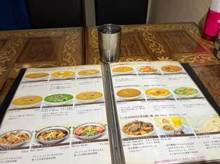
I stumbled upon an Indian restaurant while walking down the road looking for food. I am so happy.
Maharaja Biryani マハラジャビリヤニ
4 Chome-33-11 Kitazawa, Setagaya City, Tokyo 155-0031, Japan. Okay after looking at the google review I felt a bit suspicious but I sincerely pray that they will not dirty my food and will not use some bad ingredient.🎃
7-Aug-2023 Monday 🌞
The first time I woke to the alarm, it was like 7.15am. I decisively snoozed it.
The second time, it was like 7:40am. I snoozed it again.
The third time I woke was not to an alarm but I saw it was 8:10am. I rushed out of my bed, brushed my teeth and washed my face at the same time, threw on my jacket and socks and shoes and got my sunscreen because ain’t no way I’m exposing my bare skin to UV rays both morning and noon where it’s going to be UV level 9 or something,
Finished the presentation, got a bit more tasks.
Had ¥930 late breakfast of orange soufflé 🥞 and seafood burger past 11 at MOS burger. spent
Also spent ¥300 on what is probably the cheapest sumikko gurashi merchandise in Japan, with a paper craft thing that I intend to set up on my desk and a sticker set that I intend to use on my laptop.
I then spent another ¥869 on a chicken nanban 南蛮 set with miso soup and big rice. Finished it by 12 noon and I was not as full as I thought I would be. My appetite is now back on track!
Ate a lot of cool things for dinner.
Did a tiny bit of 6kg dumbbell curls and hamstring curls and lat pull downs and leg press at the gym at Toyosu.
5-1-13 Toyosu, Koto-ku, Tokyo 135-0061
I followed uncle Junxin back to the condominium and on the way we were quiet for a lot of the time because I had already asked him about life in Guangzhou (he was back there with his wife and 2 kids for 10 days), Kyoto and Ōsaka.
Also, on the way I realised he has lived a life of thrift and parsimony given how he has tried all the cheap options of travelling from Kyoto to Tokyo such as the bus I had considered. He described his personal experience as Terrible because he could not sleep on the bus and it was bumpy. He also described to me another ticket and travel option known as 青春18 which is a cheap multi-ticket package (you get 5 different train tickets for transferring between all different lines and you could sell off these tickets if you had some remaining) that you could buy for not an expensive price, to get from Kansai (the region of Kyōto and Ōsaka) to Tokyo. It could take an entire day, as 俊鑫 described his younger brother 俊宏 had made that full day trip.
I also asked him what’s his work like now, and he said he has 3 projects concurrently and is constantly on the search for more clients. This is very much like a consultants work. During dinner he also mentioned, upon my incessant asking, that he had worked in firms that consisted of all Japanese employees, mainly men. And I thought wow he could keep all his differences in and purely focus on work, which he actually did from 7am all the way until dinner time where he met me.
We did not text at all before that, except when I forwarded him a WeChat page at about 6pm detailing the findings for the top 7 food companies in Japan.
8-Aug-2023 Tuesday
Finally meeting horii for lunch after the delay
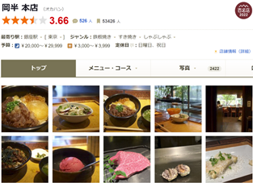
I did not expect to hear the story of medical school and how he suffered bullying and his mother was very sick which made him want to help people as a doctor - but alas, the number 3 Osaka Medical school was highly competitive.
im tired and sleepy
ate a lot of meat
gymmed
Went home and didn’t do laundry
9-Aug-2023 Wednesday
Wow the ORD mood allowed me to wake at like 8:27am, go about my business slowly (even washed my Pierre Cardin black underwear followed by a pair of socks), before putting on my clothes slowly and then heading out to get a seafood mix onigiri 🍙 たっぷり filled with prawn and fish and all that.
I asked to be released early tomorrow to prepare for my morning flight on Friday.
To my surprise, M told me they are going to give me 3 books. A recently series of books they had been writing about P&E. Additionally, in an attempt to check the handwriting of Mr S s.tk. I went to scour the P&E website and found that not only had a lot more consultant voices been added including 2 of my mentors, there were also overseas staff from India and Thailand which is very interesting because I thought the company had always been operating within Japan since its conception in 2001.
Dinner of Din Tai Fung at Shibuya sky!!
10-Aug-2023 Thursday
Last day at P&E.
ORD lo 9:15am breakfast and slowly amble to company past 10am.
Wrote all the cards and handed them out.
Last meeting with I, M and the present but not really present Morimoto at 3pm-4pm.
I think I gave the books to Matsumoto-san today to get him to bring home but im not sure
11-Aug-2023 Friday
Mad rush in the morning because uncle Junxin arrived like 25 minutes early. He was indeed concerned about the route here!
now at 8:45am I am in the queue. I’m hungry and my tummy hurts a little bit. Also I’m sleep deprived. The stomachache usually clears very soon!
Finally meeting Fujia after 10 days of separation and having a video call filled 60-day LDR followed by her coming here for a week! Bringing her a few gifts from China, Southeast Asia and JAPAN!!!!!! We’re probably going to be the first HSYLC people on site, hopefully!!!
Sorry bro I will include it very soon![58]